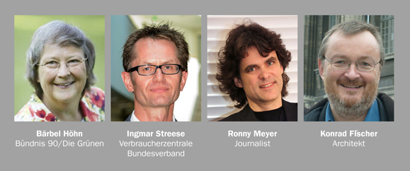
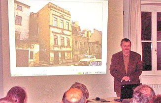
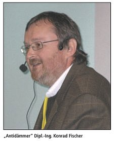
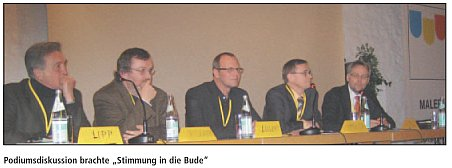

Weitere Datenübertragung Ihres Webseitenbesuchs an Google durch ein Opt-Out-Cookie stoppen - Klick!
Stop transferring your visit data to Google by a Opt-Out-Cookie - click!: Stop Google Analytics
Cookie Info. Datenschutzerklärung


 Altbau und Denkmalpflege Informationen - Startseite / Impressum
Altbau und Denkmalpflege Informationen - Startseite / Impressum
Inhaltsverzeichnis - Sitemap - über 1.500 Druckseiten unabhängige Bauinformationen
Klimaschwindel und Ökobeschiß aktuell +++
Kalkpfusch bei www.baumarkt.de
Kostengünstiges Instandsetzen von Burgen, Schlössern, Herrenhäusern, Villen - Ratgeber zu Kauf, Finanzierung, Planung (PDF eBook)
Konrad Fischer: "Altbauten kostengünstig sanieren":
Heiße Tipps gegen Sanierpfusch im frechsten (?) Baubuch aller Zeiten (PDF + Druck)
20.3.08: WELT: "Teure Dämmung lohnt oft nicht - Klimaschutz: Eigenheimbesitzer können bei Umbauten eine Ausnahmegenehmigung erwirken" - Mit Aggen, Meier + Fischer!
2.3.08: WELT am Sonntag/WAMS: "Der Schimmel breitet sich wieder aus. - Starke Dämmung in Neubauten und falsches Lüften führen schnell zu Parasitenbefall" - Mit Aggen, Meier + Fischer!
7.7.08: WirtschaftsWoche Interview Konrad Fischer zum Energieausweis: "Perfekte Altbauten"
2.6.10: Nürnberger Nachrichten: "Mit Bedacht sanieren - Bauexperte Konrad Fischer warnt: Wärmedämmung kann schaden"
8.6.10: Frankfurter Allgemeine Zeitung F.A.Z.: "Haftung: Am Bau auf Nummer Sicher" - mit Konrad Fischer
27.9.10: Wahrheiten.org: "Hausbesitzer bitte antreten zum Sanierungswahnsinn – ein “dämmokratisches” Energiekonzept?" - Interview mit Konrad Fischer
28.10.10: Wirtschaftswoche WIWO Wann sich die Wärmedämmung lohnt - mit Konrad Fischer
24.01.11: BR 3 GELD UND LEBEN,
Sanierungskosten - Wenn Dämmung unwirtschaftlich wird - mit Konrad Fischer
29.03.11: Mainpost: Gegen die Dämmokratur! Sanierungsfachmann Konrad Fischer referiert in der Bauhütte Obbach
07.04.11: Guter Rat:Dämmung: Klotz am Haus - mit Konrad Fischer

AKTUELLES
Aktuelle Seminarübersicht ab 1998 <> Seminare/Vorträge/Publikationen vor 1998
Veranstaltungen ab Ende 1998, aktuelle zuerst
Seminare und sonstige Fortbildungsmöglichkeiten Altbau + Denkmalpflege
Denkmalpflege/Altbau/Energiesparendes Instandsetzen/Richtiges Bauen: Seminare/Vorträge/Pro&Kontra-Diskussionsveranstaltungen mit Konrad Fischer u.a.
Referenten
Bei Interesse an Buchung von Konrad Fischer als Referent für eigene Veranstaltung (Themen siehe z.B. unten, Kosten nach Absprache, erfolgsabhängige
Honorarvereinbarung, Mithilfe bei Finanzierung und Organisation sowie weitere Referentenvermittlung für Sonderthemen möglich) bitte Kontaktaufnahme
Tel.: 09574-3011/0170-7351557
2019
Sommer: Siebenbürgen - Fortbildung für Jugendliche in der Denkmalpflege an Kirchenburgen - Details folgen
18. Jänner 2018, 17:30-19:20 Uhr, Crowne Plaza - The Pitter, Rainerstraße 6-8, 5020 Salzburg, Österreich, FOKUS Holzbau "Sanierung mit Mehrwert"
Veranstalter/Organisation: Proholz Salzburg, Verein der Salzburger Forst- und Holzwirtschaft und
Arch_Ing Ziviltechniker, Kammer der Architekten und Ingenieurkonsulenten für Oberösterreich und Salzburg
Anmeldung
Programm
17:30–17:50 Begrüßung der Teilnehmer
DI Gregor Grill, Geschäftsführer proHolz Salzburg
Architekt DI Günther Dollnig, Vizepräsident der Kammer der Architekten und Ingenieurkonsulenten für OÖ und Sbg
17:50–18:10 Architekt DI Frank Lattke: Gebäudemodernisierung vorgefertigt! Lösungen für Hülle und Erweiterungen
18:10-19:00 Architekt DI Konrad Fischer: Energiesparen mit Fassadendämmung - wie funktioniert das? Anmerkungen zur Theorie und Praxis
19:00–19:20 Podiums- & Publikumsdiskussion - Kulinarischer Ausklang

2017
9-10. November 2017, Nikko Hotel, Immermannstraße 41, 40210 Düsseldorf,
11. Internationale Klima- und Energiekonferenz IKEK
Veranstalter/Organisation: Europäisches Institut für Energie und Klima
Anmeldung und Programmdetails siehe obigen Link
10.11. 9:45-10:30 Konrad Fischer: CO2 sparen durch Dämmzwang – warum und wie?

2. März 2017, 18.00 Uhr, Würzburg, Frankfurter Str. 87, Bürgerbräugelände, BOX
Veranstalter/Organisation: Arbeitskreis Baubiologie Mainfranken e.V.
Anmeldung bis 27. 02.2017 unter raumtraum[ät]gmx.net - Eintritt 5,--€, Schüler und Studenten frei
Öffentliche Vortragsveranstaltung mit Saaldiskussion
Konrad Fischer: Energiesparen beim Bauen und Sanieren - was macht Sinn? Wärmedämmung und Heizung im Kreuzfeuer

2016
16. November, 13.00 Uhr, Bad Teinach, Fachkongreß der Minimax Mobile Services Brandschutz-Akademie,
Vortragsveranstaltung
Konrad Fischer: Wärmedämmung - eine zündende Idee?

16. November, 13.0021.-22. Oktober 2016, 13.00 bis 18.00, Schloss Bedheim, Schloss 1, 98630 Bedheim: II. Bedheimer Kamingespräche über LAND.BAU.KUNST - Der Selbstbau zwischen Baumarktcharme und architektonischem Meisterwerk
Veranstalter: IBA Thüringen mit IBA-Kandidat Schloß Bedheim
PROGRAMM
Freitag 21. Oktober (öffentlich)
ab 12.00 Uhr: Ankommen, Kaffee und Brötchen im Schloss
12.30 Uhr: Anika Gründer, Architektin, Bedheim - Begrüßung durch die Gastgeberin im Josephsaal
12.45 Uhr: Dr. Marta Doehler Behzadi, Geschäftsführerin IBA Thüringen, Weimar - Einführung
ca. 13.00 Uhr: Erik van der Werf, Architekt und Schlossbewohner, Bedheim - Einführung
ca. 13.30 Uhr: Van Bo Le-Mentzel, Architekt, Berlin »Konstruieren statt Konsumieren«
ca. 14.00 Uhr: Konrad Fischer, Architekt, Hochstadt a. M. »Beratung von eigenleistenden Bauherren«
ca. 15.00 Uhr: Wolfgang Zeh, Architekt, Köln - »Architekt als Selbstbauer«
ca. 15.30 Uhr: Olga Hungar, Architektin von raumlaborberlin, Berlin - »Experimentelles Bauen«
ca. 16.00 Uhr: Rob Hendriks, Architekt, Groningen - »Selbstbau in Belgien«
ca. 16.30 Uhr: Peter Grundmann, Architekt, Berlin - »Selbstbauprojekte«
ca. 17.00 Uhr: Diskussion / Fragen
18.00 Uhr: Landspaziergang
ab. 18.30 Uhr: Arbeitsessen im Josephsaal
Samstag 22. Oktober (nicht öffentlich)
09.30 Uhr: Frühstück in kleinen Gruppen mit Diskussionsauftrag
11:30 Uhr: Schlossführung
12:30 Uhr: Ausklang der Kamingespräche im Gartencafé
6. April 2016, 19.00 bis 21.30, 10405 Berlin-Prenzlauer Berg, Fröbelstraße 17, BVV-Saal (Haus 7): 3. Pankower Mieterforum
"Angemessenheit energetischer Sanierung"
1. Jens-Holger Kirchner (Bündnis 90/Die Grünen), Bezirksstadtrat für Stadtentwicklung: Begrüßung
2. Konrad Fischer, Dipl.-Ing. Architekt: "Warum sollen wir unsere Wohnungen dämmen?"

3. Ulrich Zink: Dipl.-Ing. freier Architekt, Sachverständiger für Gebäudebewertung: "Energetische Modernisierung bei umfänglichen Sanierungen im Altbau -
Fenster sanieren - Fenster erneuern?"
4. Diskussion
2015
16. Juni 2015, 13.00 bis 18.00, München: 3. Deutscher Bürgerschutztag mit Vortrag von Konrad Fischer

2. April 2015, 19.00 bis 21.30 Uhr, 1239 Siping Rd, Yangpu, Shanghai, China (News)
Veranstalter/Organisation/Veranstaltung:
College of Architecture and Urban Planning CAUP - UNESCO World Heritage Institute of Training & Research for the Asia & Pacific Region
Konrad Fischer, Dipl.-Ing. Architekt BYAK: Building Rehabilitation for Private or Public Purpose
The Methods of Planning and Building for economic and Energy Saving Projects, Working with Rediscovered Traditional Craftsmanship Outside Modern Building
Standards of Fake Building Physics
An all too long lasting period of splendid restoration endangers our cultural heritage. Mostly reinvented heroic examples of our antique magnificence
follow a more or less nationalistic ideology. Often enough such destructive expert work is followed by extremely expensive projects. On the other hand
the general renovation nowadays has primarily become a financial problem. And secondly the brutal adaption to modern building standards is the consequence
of a phony building physics created by semi-scientific institutions which are dependent of the building industry. A more gentle and economic rehab work
needs stringent preliminary inspection, precise planning on base of experimental research, experienced knowledge and much audacity. Let's have some
insights into the useful methods of planning and let's discuss some detailed examples from various profane and clerical building types. And last, but
not least: What's wrong with usual methods to combat the 'rising damp', to cover old facades by modern coatings and to save energy by fluffy insulation?
Get surprised by astonishing answers!

30. März 2015, 14.00 bis 17.00 Uhr, 1239 Siping Rd, Yangpu, Shanghai, China (News)
Veranstalter/Organisation/Veranstaltung:
College of Architecture and Urban Planning CAUP - UNESCO World Heritage Institute of Training & Research for the Asia & Pacific Region
Konrad Fischer, Dipl.-Ing. Architekt BYAK: China and Chinoiserie
The far Utopia as Land of Happiness, Order, Science and Pleasure for the European Upper Class Since the 16th Century - History and Examples with a Special
Focus on Frankonia
The legendary traveler Marco Polo was the first who brought the fairy tales and faboulous news from Cathay (North China) to Europe. After about 150
manuscripts in diverse old Italian and French idioms, in Latin and German the first printed and widely spread edition of his travel stories came out in
the Frankonian Metropole Nuremberg 1477. Marco Polo inflamed the interest for a Chinese world of wonders and this idea spread in the European high society
with rising effects on architecture, landscape gardening, fashion and crafts through the centuries. Jesuit missionaries at the Chinese imperial court,
sailors, globetrotters and merchants enforced the gentlefolks' desire to live and make love in stylish Chinese surroundings. However, there was a lack of
real and very costly Chinese arts and crafts and in addition the wish of the European touch in it gave birth to a 'Do It Yourself'-campaign which supplied
whole Europe with products nearly or combined with things of real Chinese origin. We will see a lot of great and little examples of such 'Chinoiserie' in
various fields – especially from Frankonia but also from Italy, France and Sweden. A closer look will be taken at the historical background of the cultural
transfer from Asia to Europe to expand our understanding of the European devotion and passion for an exotic paradise named China.

6. Februar 2015, ca. 15.00 bis 18.00 Uhr, Kupferbergterrasse 17-19, 55116 Mainz
Veranstalter/Organisation/Veranstaltung:
Hochbautag 2015 - Versammlung der Fachgruppe Hochbau im Baugewerbeverband Rheinland-Pfalz
15.15-16.45: Konrad Fischer, Dipl.-Ing. Architekt BYAK: Fassadendämmung, ein Verbrechen an der Menschheit?

2014
24. November, Verlagsgebäude Tagesspiegel, Askanischer Platz 3, 10963 Berlin
Veranstalter/Organisation/Veranstaltung:
Tagesspiegel - Wohnen in der Zukunft - Von den eigenen vier Wänden bis zur Energiewende
Moderation: Moritz Döbler, Mitglied der Chefredaktion Der Tagesspiegel
Auf dem Podium diskutieren:

Bärbel Höhn (Bündnis 90/ Die Grünen), Ingmar Streese (Verbraucherzentrale Bundesverband), Ronny Meyer (Journalist), Konrad Fischer (Architekt)
Aus der Einladung des Veranstalters:
Nachhaltige Wärmeversorgung, insbesondere im Gebäudebereich, ist von zentraler Bedeutung für den Erfolg der Energiewende. Doch was sind die wichtigsten
nächsten Schritte? Wie sieht eine Stadtentwicklung im Zuge der Energiewende aus? Wie kann Energie gespart werden? Welchen Beitrag kann die energetische
Sanierung von Gebäuden leisten?
Bei der Veranstaltung Wohnen in der Zukunft, ausgerichtet vom Tagesspiegel und unterstützt vom GDI-Gesamtverband der Dämmstoffindustrie, wollen wir
darüber kontrovers diskutieren.
Veranstaltung am 23.11.2014 vom Veranstalter kurzfristig abgesagt, da Bärbel Höhn anderweitigen Termin wahrnehmen wollte und ein
Pro-Redner sich krankmeldete. Schade, schade.
 21. Juni, 10:00-14:00, Berlin, Öffentliche Veranstaltung: "Fassadendämmung – Wohltat oder Wahn?"
21. Juni, 10:00-14:00, Berlin, Öffentliche Veranstaltung: "Fassadendämmung – Wohltat oder Wahn?"
mit BD Dipl.-Ing. Peter Junne, Stv. Referatsleiter im Bundesministerium für Verkehr und digitale Infrastruktur BMVDI (Bundesbauministerium)
und
Dipl.-Ing. Konrad Fischer, Architektur- und Ingenieurbüro, Hochstadt am Main
Zwei Impulsvorträge, danach Podiums- und Saaldiskussion
Ort: Alte Börse Marzahn, Beilsteiner Str. 51, 12681 Berlin-Marzahn
Veranstalter: Verband Deutscher Grundstücksnutzer e.V., Irmastraße 16, 12683 Berlin
T: 030-5148880, info@vdgn.de
Details Programm und Organisation
 19. Mai, 17:00-18:00, Frankfurt, FAZ-Telefonaktion: "Wer hilft gegen den Dämmwahn?"
19. Mai, 17:00-18:00, Frankfurt, FAZ-Telefonaktion: "Wer hilft gegen den Dämmwahn?"
mit
Ingrid Vogler, Expertin für Energie und energiesparendes Bauen beim Bundesverband deutscher Wohnungs- und Immobilienunternehmen (GdW), Berlin
Konrad Fischer, Diplom-Ingenieur, Architektur- und Ingenieurbüro, Hochstadt am Main
Nikolaus Jung, Fachanwalt für Miet- und Wohnungseigentumsrecht, Geschäftsführer „Haus & Grund Frankfurt am Main e.V.“
Frank Schweser, Diplom-Ingenieur und Architekt, Sachverständiger für Schäden an Gebäuden, Mitglied im Bundesverband öffentlich
bestellter und vereidigter sowie qualifizierter Sachverständiger e. V. , Wiesbaden
Dieter Wagner, Schutzgemeinschaft für Wohnungseigentümer und Mieter, Bruchköbel
Gregor Weil, Rechtsanwalt, Stellvertretender Geschäftsführer „Haus & Grund Frankfurt am Main e.V.“
Details
18. Mai, 13:00-18:00, Berlin, 2. Deutscher Bürgerschutz-Tag
mit Verleihung des Verbraucherschutz-Awards der Schutzgemeinschaft für Wohnungseigentümer und Mieter e.V.
Veranstalter/Organisation/Veranstaltung:
Schutzgemeinschaft für Wohnungseigentümer und Mieter e.V.
Programm:
Alexandra Thein - Rechts- u. verfassungspolitische Sprecherin der FDP im Europäischen Parlament, Vorsitzende der FDP Berlin: „Schutz
vor übertriebener EU-Bürokratie und der Schuldenpolitik“
Dipl.-Ing. Konrad Fischer, Architekt, Hochstadt am Main: „Die Hauswende - aber richtig!“
Dipl.-Ing. Matthias G. Bumann, Berlin: „Wirtschaftlichkeit energetischer Maßnahmen im
Wohnungssektor - Verstand statt Verordnungen“
Heinrich Duepmann - Vorstand Stromverbraucherschutz NAEB e.V., Gütersloh: „Die Energiewende / Das
EEG - volkswirtschaftlich und ökologisch sinnhaltig?“
Dipl.-Ing. Michael Limburg, Vizepräsident des
Europäischen Instituts für Klima und Energie EIKE e.V.: „Auf der Suche nach dem
Treibhaus-Effekt“
Horst Trieflinger, Vorstand Verein gegen Rechtsmissbrauch e.V.: „Warum der Justizombudsmann einzuführen ist“
Klaus Ermecke, KE-Research, München-Oberhaching: Was ist zu tun?
 6. Mai, Braunschweig: Symposion "Entwurf und Nachhaltigkeit"
6. Mai, Braunschweig: Symposion "Entwurf und Nachhaltigkeit"
Technische Universität Braunschweig, Departement Architektur,
Architekturpavillon, Pockelsstraße 4, Braunschweig
Organisation: Lehrstuhl IAD, Entwurf und Raumkomposition, Prof. Volker Staab
Eintritt frei
Programm
09:30 Empfang der Vortragenden im Architekturpavillon - Begrüßungskaffee
1.Block: Cradle to Cradle, Reuse, Recycle
10:00 Begrüßung und 1.Impulsvortrag Prof. Staab
10:15 2. Impulsvortrag Prof. Schuster
10:30 Prof. Michael Braungart, Cradle to Cradle, Hamburg
11:00 Prof. Claus Anderhalten, Anderhalten Architekten, Berlin
11:30 Robert K. Huber, Architekt, zukunftsgeräusche e.V., Berlin
12:00 1. Podiumsdiskussion
12:30 Mittagsimbiss
2.Block: Innovative Fassadenkonzepte, ENEV
13:30 3.Impulsvortrag Prof. Fisch
13:45 Merten Welsch, Bundesamt für Bauwesen und Raumordnung, Nachhaltiges Bauen, Berlin
14:15 Konrad Fischer, Architekt, 'Der Dämmrebell', Hochstadt am Main: "Nachhaltiges Wegwerfen - Von der Hauswende zur Hauswunde?"
14:45 Prof. Thomas Auer, Transsolar, Stuttgart
15:15 2. Podiumsdiskussion
15:45 Kaffeepause
3.Block: Nachhaltige Entwurfsstrategien und Materialien
16:00 Roman Brunner, Das Klima als Entwurfsfaktor, Zug, Schweiz
16:30 Prof. Hans Drexler, Nachhaltige Wohnkonzepte, Münster
17:00 Holger Kehne, Plasmastudio, London/Peking
17:30 3. Podiumsdiskussion
26. März, Billwerder Billdeich 622, 21033 Hamburg
Veranstalter/Organisation/Veranstaltung:
 Staatliche Gewerbeschule Bautechnik G19
Staatliche Gewerbeschule Bautechnik G19
Billwerder Billdeich 622, 21033 Hamburg
Öffentliche Schulveranstaltung, Gästeeintritt 50 EUR an Tageskasse
08.00-16.15 Dipl.-Ing. Arch. Konrad Fischer: Altbauten kostengünstig und energiesparend sanieren - Wie geht das? Wärmedämmung - immer
die beste Lösung?
Deutschlands Wohnbevölkerung lebt überwiegend in Altbauten aus verschiedenen Epochen. Sie bilden das Zentrum des aktuellen
Baugeschehens, hier stehen ständig mehr oder minder umfangreiche Instandhaltungen, Instandsetzungen, Umbauten und Modernisierungen
an. Dabei muß auch das sogenannte "Energetische Sanieren" berücksichtigt werden, für das immer strengere Bauvorschriften erlassen
werden. Geht man nach dem typischen Ratschlag der Baubranche, heißt es meistens "Alles neu macht der Mai" und "Klimaschutz muß sein".
Kostengünstig ist das bestimmt nicht, wirtschaftlich vertretbar auch nicht immer und nur wenige Hausbesitzer können sich das
Vollprogramm wirklich leisten. Obendrein zeigen Sanierkatastrophen mit ausbleibendem Sparerfolg,
vergammelter Wärmedämmung und sogar Dämmfassadenbrände, daß hier noch viele
unbekannte Risiken schlummern und aus der politisch propagierten "Hauswende" für die Betroffenen schnell eine "Hauswunde" werden
kann. Die Nachfrage nach wirtschaftlich überzeugenden, technisch erfolgreichen und demzufolge kostengünstigen Saniermaßnahmen ist
deshalb ein Zukunftsmarkt.
Worauf kommt es aber an, um wirklich kostengünstig und energiesparend zu sanieren? Dies wird das Thema einer halbtägigen
Vortragsreihe am 26. März, zu der die Staatliche Gewerbeschule Bautechnik G19 den aus Veröffentlichungen und auch dem NDR bekannten
Referenten Konrad Fischer, ein fränkischer Architekt aus Hochstadt am Main, eingeladen hat. Er wird die hier maßgeblichen
Themenkomplexe der Bestandsaufnahme, der Planung, Vergabe und Bauabwicklung sowie der Energiespartechnik in unterhaltsamer und
provokanter Manier so vertiefen, daß für die Zuhörer anwendbares Fachwissen entsteht. Zusätzlich zur Diskussionsmöglichkeit gibt es
auch ein umfangreiches Vortragsskript. Die Vortragsveranstaltung ist auch für außerschulische Interessenten nach telefonischer
Anmeldung im Schulsekretariat bis zum 25.3. 12.00 Uhr - Tel. 040-4289204 - zugänglich, Eintrittspreis 50 EUR.
01. März, Abacus Tierpark Hotel, Franz-Mett-Straße 3-9, 10319, Berlin
Veranstalter/Organisation/Veranstaltung:
Delegiertenkonferenz des Vereins der Eigenheim und Grundstücksbesitzer in Deutschland e.V. (geschlossene Veranstaltung)
14.00-14.45 Dipl.-Ing. Arch. Konrad Fischer: Energiesparen ja, aber wie?
2013
08. Oktober Münster, Friedrichstr. 1, NRW.BANK
Veranstalter/Organisation/Veranstaltung:
Ministerium für Bauen, Wohnen, Stadtentwicklung und Verkehr MBWSV des Landes Nordrhein-Westfalen und die NRW.BANK
Informationsveranstaltungen zu den neuen Denkmalförderprogrammen für gewerbliche und Wohnimmobilien in Nordrhein-Westfalen
Vortragsveranstaltung für die Unteren Denkmalschutzbehörden und Bewilligungsbehörden der Kreise und kreisfreien Städte in
Westfalen zu den neuen Denkmalförderprogrammen für gewerbliche und Wohnimmobilien
Programm
10.00 Uhr Begrüßungen durch NRW.BANK und MBWSV
10.15 Dipl.-Ing. Architekt Edgar Krings, Aachen: Welche baulichen Maßnahmen sind zur Instandsetzung und
Modernisierung eines Wohngebäudes unter Berücksichtigung denkmalpflegerischer Aspekte sinnvoll/erforderlich?
Darstellung anhand eines Projektbeispiels
11.00 Rita Tölle, MBWSV NRW: Darstellung des neuen Förderangebots der Wohnraumförderung: Erneuerung von selbst
genutzten denkmalgeschützten, denkmalwerten und/oder städtebaulich und baukulturell erhaltenswerten Wohngebäuden
11.30 Martina Lüdeke, NRW.BANK: Darstellung der Antrags- und Verfahrensregelungen
12.00 Diskussion und Nachfragen
12.30 Mittagspause
13.30 Dipl.-Ing. Arch. Konrad Fischer: Welche baulichen Maßnahmen sind zur
denkmalgerechten Sanierung einer nicht wohnungswirtschaftlich genutzten Immobilie sinnvoll/erforderlich?
14.00 Werner Kindsmüller, NRW.BANK: Darstellung des neuen Förderangebots NRW.BANK.Baudenkmäler
14.30 Diskussion und Nachfragen
15.00 Ende der Veranstaltung
12. Mai 2013 - Nürnberg - 1. Deutscher Bürgerschutz-Tag -
Diskussionsveranstaltung mit Ausstellung -
Die Vorträge auf Video (Youtube-Playlist)
21. März 2013, 9.00 - 18.00 Uhr: Wissenschafts- und Technologiepark Adlershof, Rudower
Chaussee 17, 12489 Berlin
Veranstalter/Organisation/Veranstaltung:
BAULINO Verlag GmbH, In der Stadtvilla / An der Wublitz 25a, 14542 Leest/Werder (Havel), Fax:
033202-700471, info@baulino.de
Schimmelpilzkonferenz 2013: Schimmelpilze in Innenräumen
Die Diagnostik ist das Herzstück bei der Schimmelpilzsanierung. Nur durch eine fachkompetente Voruntersuchung sind qualifizierte und
objektive Aussagen über Ursache und Wirkung von Schimmelpilzbefall sowie über mögliche gesundheitliche Gefährdungen
möglich. Auch rechtliche Aspekte können nur durch Vor- und Nachuntersuchungen verifiziert werden. Sie dienen entweder als
Grundlage für ein Sanierungskonzept oder einen Rechtsstreit. Sie können Gewährleistungsansprüche untermauern oder
abwehren. Außerdem dienen Voruntersuchungen zur Unterscheidung von Ursachen und Symptomen bei Schäden und/oder der
mikrobiologischen Bewertung bei Schimmelpilzbefall.
Die Schimmelpilzkonferenz thematisiert deshalb alle Aspekte der Schimmelpilzanamnese, -diagnostik und -bewertung. Getreu dem Motto
„Wenn sich Kompetenzen ergänzen“ werden verschiedene Experten aus unterschiedlicher Disziplin über Wissenswertes und
Informatives sowie Aktuelles und Interessantes berichten.
Die Schimmelpilzkonferenz wird thematisch in zwei Blöcke unterteilt. Am Vormittag werden die bauphysikalischen und bautechnischen
Aspekte angesprochen, bevor am Nachmittag die Bau- und Mikrobiologie zu Wort kommt. Die Schimmelpilzkonferenz wird umrahmt von einer
interessanten Ausstellung über Produkte und Dienstleistung - rund um die Themen Feuchte, Temperatur, Thermografie, Leckage,
Kultivierung und Mikroskopie sowie MVOC-Messung und Schimmelpilz-Spürhund.
Anmeldung: Schimmelpilzkonferenz
Programm:
09.00 Uhr: Frank Frössel, Moderator: Begrüßung
09.05 Uhr: Dipl.-Ing. Konrad Fischer: EnEV und Schimmelpilz - die Wahrheit der Bauphysik
Durchgeführt trotz Boykottaufforderung seitens der Dämmlobby!
Der Vortrag auf Youtube:

09.50 Uhr: Ing. (FH) Hermann Kaubitzsch, FLIR Systems Inc.: Risikobewertung einer Schimmelpilzbildung anhand von Infrarotaufnahmen
10.30 Uhr: Kaffee- und Raucherpause
11.00 Uhr: Dipl.-Ing. Thomas Platts, CRP Ingenieurgemeinschaft Cziesielski, Ruhnau + Partner GmbH: Bauwerksdiagnostik bei
Feuchteschäden und Schimmelpilzbildung
11.40 Uhr: Jochem Weingartz, Trotec GmbH & Co.KG: Moderne Verfahren zur Feuchtemessung und Leckageortung
12.15 Uhr: Mittagessen
13.15 Uhr: Dr. Christoph Trautmann, Umweltmykologie Dr. Dill und Dr. Trautmann GbR: Mikrobiologische Materialuntersuchung – Methoden
und Bewertung
13.45 Uhr: Dr. Thomas Warscheid, LBW Bio-Consult: Mikrobiologische Innenraumdiagnostik und die interdisziplinären Einbindung in die
Baupraxis
14.15 Uhr: Helmut Holbach, Fa. Umweltanalytik Holbach: Allergene in Luft schnell und mit hoher Effizienz sammeln
14.30 Uhr: Kaffee- und Raucherpause
15.00 Uhr: Claus Acker, Ausbildungs- und Prüfzentrum für Schimmelspürhunde: Spürnasen im Einsatz – Erfahrungen mit
einem vierbeinigen Schimmelexperten
15.30 Uhr: Dr. Petra Ziemer, Institut Dr. Ziemer: Innenraumdiagnostik – Möglichkeiten und Grenzen moderner Analytik
16.15 Uhr: RA Alexander Bredereck, Kanzlei Bredereck & Willkomm: Beweissicherung vor der Schimmelpilzsanierung als Voraussetzung
effektiver Rechtsverfolgung
17.00 Uhr: Abschlussdiskussion und Ende der Veranstaltung
16.-17. Mai 2013, 12.30 - 13.30 - Ludwigsburg, MHP-Arena, Schwieberdinger Str. 30
Veranstalter/Organisation/Veranstaltung:
Ludwigsburger Kreiszeitung
Energie, Umwelt & Handwerk - Messe
Komplettes Vortragsprogramm
17.3.2013, 12.30-13.30, Raum 1: Konrad Fischer: "Feuchte, Schimmel und Bankrott: Die beliebtesten Fehler bei der energetischen Sanierung
im Altbau"
Die globale Erwärmung, Energiepreisexplosionen und das staatliche Energieregiment verunsichern die Hausbesitzer und Mieter.
„Energiespartechniken“ mit Dämmung und High Tech sollen hier die Rettung bringen. Andererseits häufen sich kritische Stimmen,
die ausbleibende Sparerfolge, Schimmelpest, Dämmpfusch und lebensgefährliche Gesundheits- und Brandgefahren als Folgen des
gesetzlich beförderten Energiesparwahns brandmarken. Der Weg zur kostengünstigen und wirtschaftlichen Sanierung birgt
demzufolge viele Stolpersteine und kann auch in der Investitionsruine enden. Wie funktioniert Sanierung wirklich? Welche Folgen hat die
Energiewende für die Hausbesitzer und Mieter? Der Referent bezieht Stellung und bringt die Fakten. Diskussion erwünscht -
Eintritt frei!
2012
27. September 2012, 15.00 - 19.00 Uhr: Geeren 41/43, Bremen
Veranstalter/Organisation/Veranstaltung:
Architektenkammer und Ingenieurkammer Bremen
13. Bremer Bausachverständigentag
Energieeinsparverordnung - Anregung zum Nachdenken
- Pflichten und technische/wirtschaftliche Umsetzung
- Technische Probleme und Alternativen
- Ausnahmen und Befreiungen
Programm:
15.00 Uhr: Dipl.-Ing. Architekt Thomas Toussaint: Begrüßung und thematische Einleitung
15.30 Uhr: Dipl.-Ing. Arch. Konrad Fischer, Hochstadt a. Main: "Klimaschutz beim Bauen - Chancen und
Risiken"
- Die gesetzlichen Grundlagen: EnEG, EnEV, HeizkostenV, EEWärmeG, EDL, EEG
- Risiko Schimmel und Feuchte im Haus
- Risiko Erneuerbare Energien im Haus
- Wärme und Kälte an der Fassade
- Risiko Wärmedämmung - Lebensgefahr?
- Risiko Bauphysik: Wie dämmt Dämmung?
- Energiesparen, CO2-Sparen und Wirtschaftlichkeit
- Risiko Haftung durch Energiesparen
- Richtiges Energiesparen und Heizen
- Die Befreiung von den Auflagen - Prinzip und Fallbeispiele
Die Themen werden anhand von Praxisbeispielen erläutert. Diskussion über Anforderungen, technische Umsetzung, auftretende
Probleme und Lösungen.
Zum Inhalt:
Energieeinsparverordnung (EnEV) und Erneuerbare-Energien-Wärmegesetz (EEWärmeG) verpflichten Bauherren und Planer zu immer stärkerem
Dämmstoffverbau in und an Gebäuden sowie zunehmender Technisierung des Bauwerks. Die Annahme, mit diesen Maßnahmen am Haus auf
wirtschaftlich vertretbare Art Energie zu sparen und Emissionen zu reduzieren, ist oft trügerisch. Die verwendeten und vorzugsweise
von umsatzmaximierenden Industrieberatern invcentivgestützt und durch
Hintenrum-Umsonstplanung via empfänglichem Planer in den Verkehr gebrachten
Baustoffe entsprechen nicht immer dieser Zielsetzung. Wir hüllen Gebäude mit Dämmschaum (XPS, EPS, Polystyrol), Dämmwolle
(Mineralwolle, Steinwolle, Glaswolle) und Dämmschüttung (Zellulose, Altpapier) ein, deren Physik hinsichtlich Wärme, Feuchte,
Verrottungs- und Brandgefahr von Hausbesitzern und auch Bauexperten nicht immer richtig durchschaut wird. Es ist infolge der
Hyperbelfunktion des U-Werts ein Trugschluss, dass immer mehr Dämmung auch immer mehr hilft. Die erhöhten U-Wert-Anforderungen und
immer leichtere Bauteile stehen im Gegensatz zur speicherfähigen Masse und technischen Bewährung traditioneller Bauweise. So
entstehen oft schadensträchtige Bauteile und Baukonstruktionen. Die falsch verordnete und normgestützte Forderung nach extremer
Luftdichtigkeit von Bauwerken, falsches Lüften und Heizen fördern erhöhte Luftfeuchte, ungesundes Raumklima, Schimmelpilzbefall und
Erkrankung der Nutzer.
Der Referent wird wissenschaftliche und praktische Erkenntnisse zu diesem Themenkomplex kritisch hinterfragen und machbare Lösungen
für die anstehenden bautechnischen und baurechtlichen Fragen zur Diskussion stellen.
Dipl.-Ing. Arch. Konrad Fischer, Hochstadt a. Main, Jahrgang 1955, hat als Architekt bundesweit über 400 Baudenkmal-Instandsetzungen
durchgeführt. Er leitet seit 1988 Seminare, hält international Vorträge für Architektenkammern und Hochschulen/Universitäten, war
Gast in zahlreichen TV-Sendungen und publiziert sein Fachwissen in Printmedien sowie online auf www.konrad-fischer-info.de -
"Altbau und Denkmalpflege Informationen".
Durchgeführt trotz öffentlichen Boykottaufrufs an den Präsidenten der Architektenkammer seitens
gewerblicher/selbstständiger Dämmlobbyisten/Dämmplaner aus Bremen.
Der Vortrag

15. September 2012, ca. 14-18 Uhr, Saalbau, Bahnhofstr. 1, 67434 Neustadt an der Weinstraße
Veranstalter/Organisation/Veranstaltung:
Mattfeldt & Sänger Marketing und Messe AG - www.messe.ag
Pappenheimer Str. 4
87730 Bad Grönenbach
Immobilientage - Fachmesse für Immobilien
Begleitende Vortragsveranstaltung der Stadt Neustadt an der Weinstraße
Programm:
15.09.2012
12.00 Christian Hauss, HAUSS.ROHDE Architekten: Denkmalgerechte Sanierung eines Fachwerkhauses in Neustadt auf energetisches
Neubauniveau
13.00 Dipl.-Ing. (FH) Roland Unselt, [en] haus energetisches Bauen u. Sanieren: "Das [i] haus - autark, effizient,
intelligent - Das Haus mit der eigenen Tankstelle durch regeltechnisch optimierte Eigenstromnutzung"
14.00 Oberbürgermeister Hans Georg Löffler: Offizielle Eröffnung
Energetische Sanierung im
Altbau - Pro und Contra
14.30 Dipl.-Phys. Hans Weinreuter, Energiereferent der rheinland-pfälzischen Verbraucherzentralen Mainz:
"Chancen, Ängste und Missverständnisse bei der Wärmedämmung
im Altbau" (Video)
15.30 Dipl.-Ing. Architekt Konrad Fischer, Hochstadt am Main: "Feuchte, Schimmel und Bankrott: Die
beliebtesten Fehler bei der energetischen Sanierung im Altbau"
 16.30 Diskussionsrunde (Video), Moderation: Architekt Joachim Becker, Architektenkammer Pfalz
16.30 Diskussionsrunde (Video), Moderation: Architekt Joachim Becker, Architektenkammer Pfalz
Durchgeführt trotz Boykottaufrufs seitens gewerblicher Dämmlobbyisten.
16.09.2012
11.00 Bernhard Adams, Stadtverwaltung Neustadt/Innenstadtagentur: "Innenstadtoffensive Neustadt an der Weinstraße -
Projekte und Investitionsanreize"
12.00 Anton B. Steber, Steber Wohnbau GmbH: "Hilfe ich will meine Immobilie verkaufen - Schnell und zum bestmöglichen Preis"
13.00 Dipl.-Ing. (FH) Roland Unselt, [en] haus energetisches Bauen u. Sanieren: "Komplettsanierung - Effizienzhaus
zum Festpreis. Energetische Sanierung aus einer Hand, dargestellt in 6 Schritten"
15.00 Christina Hardt, Energieberatung Hardt: "Sanierung von Wohngebäuden - Fördergelder, Sanierungsbeispiele"
16.00 Dipl. -Ing. Ralf Bareis, Bauherren-Schutzbund e.V.: "Ärger und Mängel am Bau - Was tun?"
Veranstaltungsflyer - Download (PDF)
12. Mai 2012, ab 15.00 bis ca. 18.00 Uhr: Kongreßhaus Rosengarten, Berliner Platz 1, 96450 Coburg
Veranstalter/Organisation/Veranstaltung:
Haus und Grundbesitzerverein Coburg e.V., VR-Bank Coburg, Stadtbild Coburg e.V.
Öffentliche Vortragsveranstaltung
Programm
15 Uhr Beginn Ausstellung und Vorstellung, ab 16 Uhr Referentenvorträge mit anschließender Podiumsdiskussion
Interviews, Talks und Präsentationen von Ausstellern, Experten, Anbietern mit Informationen zu den verschiedensten Themen (während des Eintreffens der
Besucher)
Vorträge:
Dipl.-Ing. (FH) Horst-Peter Müller: "Baufehler vermeiden, aber wie?
Dipl.-Ing. (FH) Architekt Dieter Jandausch: "Heizkosten minimieren und modernste Technik: Das Passivhaus"
Dipl.-Ing. Arch. Konrad Fischer: "Land der Dichter und der Dämmer? Der ganz normale Dämmwahnsinn"

Durchgeführt trotz Boykottaufrufs seitens Dämmlobbyisten aus Energieberaterkreisen.
2. Februar 2012, 9.30 - 17.30 Uhr: RAMADA Hotel Bad Soden, Taunus
Veranstalter/Organisation/Veranstaltung:
Betonbauteile-Industrieverband e.V.
Geschlossene Vortragsveranstaltung
Programmauszug:
16:00 - 18:00 Uhr: Dipl.-Ing. Arch. Konrad Fischer, Hochstadt a. Main: "Neubau Massiv ohne EnEV - Wie geht das?"
Zum Inhalt
Noch viel zu wenige Planer klären ihre Bauherren über die Befreiungspflicht in der Energieeinsparverordnung EnEV (§ 25)
bei wirtschaftlich unangemessenen Energiesparmaßnahmen angemessen auf, obwohl dies ihre ureigenste Vertragspflicht ist. Damit
riskieren sie einerseits langfristige Haftungsrisiken, wenn der Bauherr nach einigen Jahren entdeckt, daß sich der
Energiesparaufwand nicht angemessen amortisiert. Andererseits schädigen sie durch ihre Versäumnisse ganze Wirtschaftszweige
rund um das massive Bauen ohne Dämmpfusch. Wie muß die korrekte Aufklärung des Planers rund um den Dämmwahn aussehen,
wie ist die EnEV-Befreiung anzuwenden, wie funktioniert unverdämmter Massivbau in Zeiten des Dämmirrsins und der Ökoabzocke?
Der Vortrag kommt zur Sache.

12. November 2011, 10.00 - 15.00 Uhr: Congress-Centrum Ost, Geb. 3.2, Offenbachsaal, Messeallee Süd,
Köln
Veranstalter/Organisation:
Deutsche Burgenvereinigung e.V., Deutsche Stiftung Denkmalschutz, Europa Nostra e.V., Messe Köln
Kolloquium „Denkmal-Doping Deutschland – was erträgt das Denkmal?“
Dämmpakete, Rollstuhlrampen, Brandschutztüren – Baudenkmale werden zukunftsfähig gemacht. Wie selten zuvor müssen
Denkmaleigentümer sich heute mit den Folgen der alternden Gesellschaft, Klimaschutz und neuen Gesetzen auseinander setzen.
Wo sind aber die Grenzen? Was muss ein Denkmal leisten können? Wird die Nutzung eines Denkmals bald zum Luxusgut für einige Wenige?
Ziel des Kolloquiums ist es, die „Stressfaktoren“ für den Erhalt von Baudenkmalen zu reflektieren und notwendige Weichenstellungen
aufzuzeigen. Gleichzeitig wird den Teilnehmern ein Forum für den fachlichen Erfahrungs- und Meinungsaustausch geboten.
Das Kolloquium wendet sich an Interessenten von Verbänden, Institutionen, Stiftungen und Fördervereinen, Denkmaleigentümer,
Mitarbeiter von Denkmalbehörden, Architektur- und Planungsbüros, Wissenschaft und Politik.
Infoflyer zum Download (1 MB)
Anmeldungen per Fax (02627 8866) oder Post an:
Deutsche Burgenvereinigung e.V.
Marksburg
56338 Braubach
Programminfo:
Dr. Holger Rescher
Deutsche Stiftung Denkmalschutz
Schlegelstrasse 1
53113 Bonn
Tel.: 0049 (0)228 9091 113
Fax: 0049 (0)228 9091 119
www.denkmalschutz.de
8. November 2011, 10.00 - 13.00 Uhr: RAMADA Hotel Kassel City Centre, Baumbachstraße 2/Stadthalle, 34119 Kassel
Veranstalter/Organisation/Veranstaltung:
BVS - Bundesverband öffentlich bestellter und vereidigter sowie qualifizierter Sachverständiger e.V., Berlin
BVS-Bundesfachbereich Gebäudetechnikgung - Technische Gebäudeausrüstung
Öffentliche Vortragsveranstaltung
Tagesprogramm:
10:00 - 13:00 Uhr: Dipl.-Ing. Arch. Konrad Fischer, Hochstadt a. Main: "Altbau und Energiespargesetze -
EEWärmeG, EnEV, EnEG, HeizkostenV und TGA - unter besonderer Berücksichtigung der Wirtschaftlichkeit und schuldrechtlicher Fragen."

13.00-14.15: Dipl.-Ing. (FH) Olaf Meyer, Stadt Salzgitter: "Sanierung der Gebäudetechnik im öffentlichen Bereich"
Aus der Einladung: "Die Referenten:
Dipl.-Ing. Architekt Konrad Fischer aus Hochstadt am Main hat sich mit seiner kritischen Haltung zu den gesetzlichen
Energieeinsparvorschriften einen Namen gemacht. Vor allem bei Altbauten hält er etwa die Wärmedämmung mittels
entsprechender Verbundsysteme nicht nur oft für unergiebig, sondern sogar für kontraproduktiv, da sie auf längere Sicht
die Bausubstanz beeinträchtigen kann. Herr Fischer tritt mit Nachdruck dafür ein, dass statt des Aktionisimus, der im
Namen der Energieeinspargesetze betrieben wird, zunächst einmal anderweitig zur Verfügung stehende Sparpotenziale
genutzt werden, und zeigt Gebäudeeigentümern Wege auf, sich von den Zwängen der EnEV zu befreien.
Dipl.-Ing. (FH) Olaf Meyer ist in leitender Position im Bereich Gebäudemanagement, Einkauf und Logistik der
Stadt Salzgitter tätig und dabei u.a. für die Gebiete Versorgungs-, Elektro-, Kälte- und Haustechnik sowie
Gebäudeautomation verantwortlich. Darüber hinaus ist er Inhaber eines Unternehmens im Bereich Mess-, Steuerungs-
und Regeltechnik und entsprechend in der Position, Fragen der Sanierung sowohl unter technischen und wirtschaftlichen
Gesichtspunkten als auch unter Berücksichtigung der Besonderheiten der öffentlichen Hand zu beleuchten.
07. Juli 2011, 16.00 - 18.45 Uhr: Kolpingssaal im Kolpinghaus, Kolpingstr. 6, 95444 Bayreuth
Veranstalter/Organisation/Veranstaltung:
Außerordentliche Wohnungseigentümerversamlung der WEG-Wohnungs-Eigentümer-Gemeinschaft Bayreuth, Rückertweg 21-27
und ihrer Hausverwaltung AIB Tischler-Unglaub Inh. Karl Heinz Hannes e.K.
Nachträgliche Dämmung der Fassade des Hochhauses am Rückertweg - Pro und Kontra
Tagesprogramm:
16:00 - 17:30 Uhr: Dipl.-Ing. Arch. Konrad Fischer: Fassadendämmung ist Pfusch und
lohnt sich nicht - mit Diskussion
17:30 - 18:45 Uhr: Prof.Dr.-Ing. Ulrich
Möller, HWTK Leipzig, FB Bauingenieurwesen/Bauphysik: WDVS - "bauphysikalisch nachgewiesen" - Energieeinsparung durch WDVS ist
rechnerisch nachweisbar
18.45-20.00: Interne Diskussion und Abstimmung der WEG [Ergebnis: Zurückstellung der nachträglichen Fassadendämmung]
Infolink: Es geht auch anders: Bayer.
Fernsehen: Hausverwalter-Skandal: Eigentümer über den Tisch gezogen - Wie Hausverwaltungen die Hand aufhalten und an Pfusch Geld
verdienen - Die fiesen Betrugsmethoden der Hausverwalter auf Kosten der Wohnunsgeigentümer
Konferenz zur Schönheit und Lebensfähigkeit der Stadt No. 2 am 24. und 25. März 2011,
Rheinterrasse der Landeshauptstadt Düsseldorf,
"Stadt und Handel" (24.3.) - "Stadt und Energie" (25.3.)
Veranstalter: Deutsches Institut für Stadtbaukunst an der Technischen Universität
Dortmund, Prof. Dipl.-Ing. Christoph Mäckler, Prof. Dr. Wolfgang Sonne, Schirmherrschaft Frau Oberbürgermeisterin Dr. h.c.
Petra Roth, Präsidentin des Deutschen Städtetags, Frankfurt a. Main
25.3. 16.00 Uhr: Kurzreferat zu Stadt und Energie - Altbau - Dipl.-Ing. Arch. Konrad Fischer, Hochstadt a. Main:
Altbauten dämmen oder sanieren?
Bericht von Konferenz No. 1:
Dr. Dankward Guratzsch: "Verschont die Altstädte vor der Klimasanierung!" DIE WELT 20.09.2010
Veranstaltung der Bauhütte Obbach, 23.03.2011, 19.00 -21.30 Uhr, Organisation: Interkommunale Allianz Oberes Werntal, Vortrag
Dipl.-Ing. Arch. Konrad Fischer: Altbauten kostengünstig und energiesparend instandsetzen
Themenübersicht:
Voraussetzungen der kostengünstigen und energiesparenden Sanierung in Bestandsaufnahme und Planung
Kostengünstige und kostentreibende Sanierungsmethoden
Aufsteigende Feuchte - was tun?
Alternative Energiesparmethoden anstelle Dämmen und Dichten
Bestandsgerechte Baustoffverwendung und moderner Handwerkspfusch
Befreiung von EnEV und EEWärmeG - wie geht das?
Diskussion

Zeitungsbericht Mainpost: Gegen die Dämmokratur
Mitteilung der Interkommunalen Allianz Oberes Werntal
Rückblick auf den Fachvortrag zur Bauhütte Obbach
Das Veranstaltungsprogramm der Bauhütte Obbach fand mit dem Thema "Altbauten kostengünstig und energiesparend
sanieren" seine Fortsetzung.
Die Bauhütte informiert über die Zukunftsaufgabe Innenentwicklung und gibt als Informations- und Austauschbörse
Hilfestellung zum Bauen im Bestand.
Eingeladen war Herr Konrad Fischer, erfahrener Architekt für die Sanierung von Baudenkmälern, Buchautor und
international als kritische Stimme zum Thema Wärmedämmung auf zahlreichen Fachtagungen und in TV- Sendungen
präsent.
Überzeichnend und provozierend, mit Bild- und Zahlenmaterial hinterlegt, regte Konrad Fischer zum Nachdenken an,
ob die "von oben" propagierte Wärmedämmung immer das richtige sei. Konrad Fischer tat seine Meinung zu Normen und
der politischen Vorgaben zur Energieeinsparverordnung kund - Worte wie "Dämmokratur" oder "Ökoseuche" fielen mit
Nachdruck. Eindrucksvoll zeigte Konrad Fischer auf, wie aus einer "Bauruine" ein Schmuckstück werden kann und
dies so kostengünstig wie möglich. Das Geheimnis dahinter bestehe darin, bereits vorhandene Bauteile zu verwenden
und diese zu reparieren - eine Reparatur komme in den meisten Fällen billiger als ein Neubau, so Fischer.
Voraussetzung für eine Sanierung im Kostenrahmen ist die detaillierte Bestandsaufnahme des Bauzustandes. Der
Referent wies darauf hin, dass eine Wärmedämmung gemäß der Energieeinsparverordnung nur dann sinnvoll sei, wenn
sie auch wirtschaftlich ist, d.h. sich innerhalb von zehn Jahren rechne. Ansonsten sei es rechtens, eine Befreiung
zu beantragen. Oft lohne es sich, mit "dem spitzen Stift" zu rechnen, um eine entsprechende Aussage treffen zu
können.
Inhaltlich wurden zahlreiche Themen angesprochen, beispielsweise die Behandlung von Fensterrahmen mit Leinöl, die
Verwendung von Luftkalkmörtel oder der Vergleich von Heizsystemen. Das Publikum nutzte die Gelegenheit, Fragen zu
stellen. Vertiefende Informationen finden sich auf der Seite des Referenten unter
http://www.konrad-fischer-info.de/.
Der nächste Fachvortrag findet am Mittwoch, den 18. Mai 2011 um 19.00 Uhr im ehemaligen Rathaus in 97502
Euerbach- GT Obbach zum Thema "Grüne Bausteine in der Dorferneuerung" statt. Eintritt frei. Eine vorherige
Anmeldung unter 09726 - 907486 oder info@bauhuette-obbach.de ist erforderlich.
Die Bauhütte Obbach ist ein bayernweites Modellprojekt und wird über den Bereich Zentrale Aufgaben der
Bayerischen Verwaltung für ländliche Entwicklung München und das Amt für Ländliche Entwicklung Unterfranken
betreut und gefördert.
Ziel der Bauhütte ist es, die Bevölkerung für die Thematik Bauen im Bestand zu sensibilisieren und Hilfestellung
zu leisten. Das Informationsgebäude des Modellprojektes (Schweinfurter Straße 5) ist jeden ersten Samstag im
Monat von 14-15 Uhr geöffnet. Weitere Informationen unter
www.bauhuette-obbach.de
Text/Bild: Eva Braksiek (Allianzmanagerin Oberes Werntal)
Deutscher Sachverständigentag Berlin am 17. und 18. März 2011, Hotel Hilton, Mohrenstraße 30,
10117 Berlin,
"Fachtagungen" (18.3.)
Veranstalter: Deutscher Sachverständigentag GmbH, Bundesverband
öffentlich bestellter und vereidigter sowie qualifizierter Sachverständiger e.V. BVS - Gesamtprogramm und Anmeldung siehe
Download auf Link
18.3. 11.45 - 12.30 Uhr: Dipl.-Ing. Arch. Konrad Fischer, Hochstadt a. Main:
Energieeinsparung und Heizsysteme - kritische Anmerkungen zur Wirtschaftlichkeit

16.15-17.15 Uhr: Alternative Energien und Energieeinsparung auf dem Prüfstand - Konzept zur Einbindung in die Energiebilanz einer
Immobilie - Bestand contra Neubau - Stadt contra ländliche Region - Podiumsdiskussion, Moderation Dipl.-Ing. Helge-Lorenz Ubbelohde,
Teilnehmer u.a. Prof. Dr. Michael Braungart, Prof. Axel Rahn, Heike Bömer, Tilo Ebert, Rainer Szieleit, Dr. Götz Hirschberg,
Konrad Fischer, ein Vertreter der GESOBAU AG Berlin
4. März 2011, 10.00 - 17.00 Uhr: Hanns-Lilje-Haus, Hotel und Tagungszentrum der Ev.-luth. Landekirche
Hannovers, Knochenhauerstr. 33, 30159 Hannover
Veranstalter/Organisation/Veranstaltung:
HAWK Hochschule für angewandte Wissenschaft und Kunst Fachhochschule Hildesheim / Holzminden / Göttingen, Fakultät
Bauwesen, Niedersächsisches Landesamt für Denkmalpflege NLD, Architektenkammer Niedersachsen
Ausschreibung, Ausführung, Qualitätssicherung (HOAI
§ 33, Leistungsphase 6-8, Tagesseminar, ausgekoppelt aus dem Lehrgang "Bauen im Bestand und Denkmalpflege"
Tagesprogramm:
10:00 - 11:30 Uhr: Dipl.-Ing. Arch. Martin Schumacher (Burkhardt + Schumacher Architekten, Braunschweig: Maurerarbeiten:
Mauerwerk, Fuge und Putz;
11:45 - 13:15 Uhr: Dipl.-Ing. Arch. Henrik Boldt, Klosterkammer Hannover: Tischlerarbeiten: innenausbau, Fenster, Türen, Treppen /
Dachdeckerarbeiten:: Vom Schieferer bis zum Blechner
13:45 - 15:15 Uhr: Dipl.-Ing. Arch. Konrad Fischer: Altbausanierung:
Kostensicheres Ausschreiben mit dem Positionsbausteinsystem Teil 1
15:30 - 17:00 Uhr: Kostensicheres Ausschreiben mit dem Positionsbausteinsystem Teil 2
2010
Industrial Heritage 2010 / Industrielles Erbe 2010, 5. Europäisches Wochenende zum
Erhalt des industriellen und technischen Erbes an dem sich Freiwillige und Vereine aus verschiedenen Ländern
treffen werden, Venedig (Italien): vom 19. bis 21.11.2010,
Veranstalter, Details, Anmeldung: European Federation of Associations
of Industrial and Technical Heritage E-FAITH
Bayerische Kirchenmalertagung 2010, 11. und 12.11.2010 im ehem. Benediktinerkloster
Thierhaupten, Kalk - Bindemittel in der Restaurierung - Erfahrungsberichte
Veranstalter: Bayerisches Landesamt für Denkmalpflege, Bayerische Kirchenmalerinnung
Programm
11. November 2010
8:30 Öffnung des Tagungsbüros
9:30 Grußworte/ Eröffnung der Tagung: Bürgermeister F. Neher, Gemeinde Thierhaupten, Dr. Bernd Vollmar, 2. stv. Amtsleiter
und Abteilungsleiter des Bayerischen Landesamts für Denkmalpflege, Dr. H. Rohrmann, Erzdiözese München-Freising,
B. Mayrhofer, Fachgruppe Kirchenmaler
10:00 Dr. K. Stingl, Institut für Geologie und Paläontologie, Graz: Wovon sprechen wir denn überhaupt? -
vom holzgebrannten Luftkalk bis zum Romanzement
10:30 A. Diekamp, Universität Innsbruck: Dolomitkalk - Charakterisierung der Bindemittelphasen und die Problematik
der sich unter SO2-Einfluss bildenden Magnesiumsulfatsalze
11:00 Kaffeepause
11:30 G. Klotz-Wahrislohner M.A., Bayerisches Landesamt für Denkmalpflege: Kalk in der Baudenkmalpflege
12:00 Mag. A. Huber, Bundesdenkmalamt, Wien: Evaluierung von Fassadeninstandsetzungen in Kalktechnologie in
Österreich
12:30 Prof. Dr. R. Drewello, Universität Bamberg: Alterung und Überformung von Kalkanstrichen und ihre
Bedeutung in der Praxis
13:00 Mittagessen
14:30 S. Wolf, Bayerische Verwaltung der staatlichen Schlösser, Gärten und Seen: Erfahrungsberichte zur
Verwendung von Kalk in der Fassadenrestaurierung
15:00 Dr. Uwe Erfurt, Institut für Bautenschutz und Bausanierung, Welden: Kalk am Bau - Illusion und Wirklichkeit
der Praxis
15:30 K. Fischer, Architekt, Hochstadt a. Main: Kalk am Baudenkmal - Scheitern und Gelingen

16:00 Diskussion
18:00 B. Kliegl, Glasinstrumentalist, Augsburg: Konzert - Die Geschichte der Glasharmonika
12. November 2010
8:30 M. Bengler, Restaurator, Dingolfing: Erfahrungsberichte zur Kalktechnik: Befunde - Ausführung
9:00 M. Hauck M.A., Dombauhütte Passau: Die Passauer Domfassaden - Neufassung in Kalktechnik
9:30 Kaffeepause
10:00 Dr. H. Ettl, Labor für Erforschung und Begutachtung umweltbedingter Gebäudeschäden, München,
S. Hundbiß, Fa. Wiegeling, Bad Tölz: Bindemittel Kalk - Die Restaurierung der Heilig-Kreuz-Kirchenfassade auf dem
Bad Tölzer Kalvarienberg
10:30 B. Nydegger, BWS Labor AG, Winterthur: Kalkfassaden - Umsetzung in der Praxis
11:00 Diskussion
12:00 B. Symank, Bayerisches Landesamt für Denkmalpflege, Reinhard Binapf, Fa. Binapfl, Friedberg: Besichtigung der
Fassaden des ehemaligen Benediktinerklosters Thierhaupten: Restaurierungskonzept - Ausführung - Evaluation
12:30 Mittagessen
14:00 G. Klotz-Warislohner M.A. und M. Saar, Bayerisches Landesamt für Denkmalpflege: Führung durch die Lehr-
und Dokumentationssammlung historischer Bauteile und Konstruktionen des Bauarchivs des Bayerischen Landesamts für
Denkmalpflege
ca. 16:00 Tagungsende
"DenkMal: Energie sparen?", 20.09.2010, Bamberg, Dominikanerbau (Aula der
Otto-Friedrich-Universität Bamberg), Dominikanerstr. 2a, eine Veranstaltung des Projekts "Region
Bamberg, Kompetenz am Denkmal", Träger: Stadt Bamberg, Landkreis Bamberg, Staatliches Bauamt Bamberg,
Otto-Friedrich-Universität Bamberg, Handwerkskammer für Oberfranken
Moderation: Dr. Karin Dengler-Schreiber
Programm:
13.30 Einlaß
14.00 Oberbürgermeister Andreas Starke und Landrat Dr. Günther Denzler, Bamberg: Begrüßung
14.30 Dr. Bernd Vollmar, Bayerisches Landesamt für Denkmalpflege, München: Denkmalpflege und energetische Verbesserung
15.00 Dr. phil. Britta von Rettberg, Fraunhofer Institut, Institut für Bauphysik, Holzkirchen: Europäisches
Kompetenzzentrum für energetische Altbausanierung und Denkmalpflege - Kloster Benediktbeuern
15.30 Gerwin Stein, Beratungsstelle für Handwerk und Denkmalpflege Probstei Johannesberg, Fulda: Historische
Gebäude energetisch sanieren
16.00 Diskussion, Kaffepause und Besuch der der Ausstellung
16.30 Konrad Fischer, Architekt, Hochstadt a. Main: "Kosten und
Energie sparen am Baudenkmal - wie geht das?"
17.00 Eva Anlauft, Hochbauamt Stadt Nürnberg, Kommunales Energiemanagement: Denkmäler energetisch sanieren -
Zielkonflikte zwischen Denkmalschutz, Substanzerhalt, Funktion und Wärmeschutz
17.30 Horst Nürnberger und Stefan Moncken, Architekten & Energieberater, Scheßlitz / Rattelsdorf:
Beispiele aus der Praxis energetischer Sanierung und Finanzierung über zinsgpnstige öffentliche Mittel,
anwendbar aufs Baudenkmal
18.00 Diskussion
18.30 Ausstellung und Imbiss
12. Mai 2010, Nürnberg, Bildungszentrum, Gewerbemuseumplatz 2, Saal 3.11
Veranstalter/Organisation/Veranstaltung/Anmeldung:
Schutz-Gemeinschaft für Wohnungs-Eigentümer und Mieter e.V.
Programm anläßlich der öffentlichen
Verleihung des Verbraucherschutz-Awards:
18:30-19:00: Norbert Deul, Vorstand Hausgeld-Vergleich e.V. Pommelsbrunn: Begrüßung und Preisverleihung des
Verbraucherschutz-Awards an Konrad Fischer
19:00-20:30 Konrad Fischer, Dipl.-Ing. Architekt BYAK, Hochstadt a. Main:
"Altbauten kostengünstig und energieeinsparend
sanieren" (Bericht des Veranstalters)
20:30-21:30: Diskussion
Eintritt frei, Veranstalter: Hausgeld-Vergleich e.V., Gehrestalstraße 8,
91224 Pommelsbrunn Tel. 09154-1602, E-Mail: hausgeld-vergleich(ät)t-online.de
22. April 2010, Coesfeld, WBK-Casino, Osterwicker Str. 29
Veranstalter/Organisation/Veranstaltung/Anmeldung:
Verband der Grundbesitzverwaltungen Nordrhein-Westfalen ("Renteiverband"), Düsseldorf, Postfach 102643
09:30 - 10:00: Begrüßung und Kassenbericht
10:00 - 12:30: Dipl.-Ing. Arch. Konrad Fischer: "Altbauten
kostengünstig und energiesparend sanieren - geht das?"
12:30 - 13:00: Architekt Bock: Führung durch das neue Konzerttheater von Herrn Ernsting (Ernsting family), Coesfeld
14:15 - 16:00: Fahrt zum Schloß Varlar, auf dem Weg Kurzbesichtigung des ehem. Rentkammergebäudes der
Salm-Horstmar'schen Verwaltung, in Varlar Besichtigung Schloß, neue Verwaltung und Pelletsheizung.
29. Januar 2010, Ingolstadt, Kurfürstliche Reitschule
Veranstalter/Organisation/Veranstaltung:
Landesinnungsverband des Bayer. Maler- und Lackiererhandwerks,
Ungsteiner Straße 27, 81539 München
im Rahmen der Unternehmerschulung - Technischer Teil
Tagungsprogramm:
10:00 - 10:15 Uhr: MLM Stefan Ehle, Vors. d. Werkstoffausschusses Augsburg: Begrüßung und Einführung
in den technischen Teil
10:15 - 11:30 Uhr: Dipl.-Ing. Walter Gunreben, VTAD BGBau, Kassel: Staubarme Arbeitssysteme bei Schleifarbeiten - Mit
den richtigen Maschinen im "grünen Bereich"
11:30 - 12:30 Uhr: Franz Huber, Anwendungstechniker WDVS der Fa. Keimfarben GmmbH & Co. KG: Brandschutzstreifen oder
Brandriegel als Brandschutzmaßnahme bei Wärmedämmverbundsystemen d über 10 cm?
12:30 - 14:15 Uhr: Mittagspause
14:15 - 15:00 Uhr: Prof.
Dr.-Ing. Ulrich Möller, HWTK Leipzig, FB Bauingenieurwesen/Bauphysik: WDVS - "bauphysikalisch nachgewiesen" -
Energieeinsparung durch WDVS ist rechnerisch nachweisbar
15:00 - 15:45 Uhr: Dipl.-Ing. Arch. Konrad Fischer: "Fassaden energetisch richtig sanieren
- Dämmt Dämmstoff?"
15:45 - 16:45: Podiumsdiskussion mit Prof. Dr.-Ing. Ulrich Möller, Konrad Fischer, Rüdiger Lugert, Vorstand
Finanzen des Fachverbandes WDVS, Rechtsanwelt Hermann Lipp, Mümchen, Moderation: MLM Stefan Ehle
16:45 - 17:00: MLM Stefan Ehle: Zusammenfassung
Konrad Fischer: Fassaden energetisch richtig und kostensparend sanieren 1

Teil 2 Teil 3
Teil 4 Teil 5
Bildzitate und Textauszug aus der Seminarberichterstattung in
Bayern Spezial -
Landesinnungsverband des Bayerischen Maler- und Lackiererhandwerks 2010/03:
"In Abänderung des Programms gab Franz Huber wichtige Hinweise zum Thema „Brandschutz bei Wärmedämmverbundsystemen
(WDVS). WDVS war dann auch das große Thema dieses Technischen Teils der Unternehmerschulung. Während Prof. Dr. Ulrich Möller
die These vertrat, dass Energieeinsparungen durch WDVS rechnerisch nachweisbar sind, stellte Architekt Konrad Fischer die provokante
Frage, „Dämmt Dämmstoff?“.


In der anschließenden Podiumsdiskussion wurden die Ausführungen dieser beiden Referenten kontrovers diskutiert. Neben diesen nahmen
Rüdiger Lugert vom Fachverband WDVS und RA Hermann Lipp daran teil. Stefan Ehle konnte eine kurzweilige Diskussion leiten und
anschließend auf einen gelungenen ersten Tag zurückblicken."
2009
12.11.2009 Gelsenkirchen
Veranstalter/Organisation/Vortragsort:
Veranstalter/Organisation: BLB NRW Duisburg, Planen und Bauen - Land 4, Friedrich-Wilhelm-Str. 12, 47051 Duisburg
Vortragsort: Fortbildungseinrichtung Lichthof, Leithestr. 37, 45886 Gelsenkirchen
Fachtagung "Planen + Bauen im Bestand - Denkmalpflege im BLB" - Geschlossene Veranstaltung
Leitung: Michael Pasch, BLB NRW Duisburg
Programmentwurf:
09:30 - 12:00 Uhr: Dipl.-Ing. Konrad Fischer, Hochstadt a. Main: Altbausanierung und Haustechnik I
- Nutzungsanforderungen und DIN
- Baustoffeigenschaften / Schadensbilder im Altbau
- Bestandserhaltende Planung als Kostenbremse
- Planungsumfang und Detaillierungsgrad
- Baurechtliche Ausnahmen und Befreiungen
- Kostenermittlung, Leistungsbeschreibung, Vergabe
13:00 - 15:30 Uhr: Konrad Fischer: Altbausanierung und Haustechnik II
- Wärme- und Feuchtschutz, genormte Irrtümer
- Dämmen und Speichern. Anwendung der EnEV
- HOAI/ Grund- und Besondere Leistungen
- Kostensicherung, Risikomanagement
15:45 - 16:00 Uhr: Michael Pasch, Schlußbetrachtung / Feed back
20. - 22. Oktober 2009, Rottach-Egern, 74. BAUSCHÄDEN-FORUM, Leitung: Dipl.-Phys. Rainer
Bolle
Näheres und Anmeldung:www.bauschaeden-forum.de
Drei Tage mit Kollegen, wissenserweiternd, kritisch und denkprovozierend. Drei Tage ohne vorgegebenes Programm (die
Begründung finden Sie auf der Homepage)mit Referaten, Diskussionen und Bühnengesprächen
 Lund, Schweden/Sverige, 25.09.2009
Lund, Schweden/Sverige, 25.09.2009
Veranstalter/Organisation/Vortragsort:
Department of Architectural Restoration and Conservation, Department of Housing Development and Management,
Lund University, Sweden & Swedish International Development Cooperation Agency (Sida):
Advanced International Training Programme 2009: Perspectives/Examination and Assessment of Buildings
Room A:B
Programm:
25.09.: 9.15 - 12.00 Uhr: Konrad Fischer: Work models for building conservation - To control problems and obstacles
13.15 - 17.00 Uhr: Konrad Fischer: German Conservation: Approaches, Methodology, Examples from own Practice
15. September 2009: NordBau Neumünster, Gemeinschaftsveranstaltung VHV Versicherungen
und Baugewerbeverband Schleswig-Holstein
NordBau-Tagung der Landesfachgruppe Massiv-Bau, 9.30 -12.30 Uhr
Carsten Kock, Chefkorrespondent bei Radio Schleswig-Holstein RSH: Ist der Ruf erst ruiniert ... Imagepflege als Erfolgsfaktor
Dipl.-Ing. Arch. Konrad Fischer: Altbauten kostengünstig und energiesparend instandsetzen
Aus der Ankündigung:
Deutschlands Altbauten stehen im Zentrum des aktuellen Baugeschehens. Dabei geht es vorwiegend um Klimaschutz und
Energiesparen. Können diese Ziele mit den gesetzlich verordneten und in unzähligen Normen geregelten Baumethoden
wirklich – und vor allem kostengünstig - ereicht werden? Allerorten belegen verrottende Dämmfassaden,
verschimmelte Wohnungen und Kostenexplosionen bei kaum spürbaren oder gleich ausbleibenden Energieeinsparungen das
Bedrohungspotential der "energetischen" Sanierung für die Bausubstanz, die Wohngesundheit und die Bauherrenkasse.
Der für seine provokanten Denkansätze bekannte Referent zeigt die gegebenen Widersprüche auf und
schlägt bewährte Alternativen vor.
Prof. Dipl.-Ing. Arch. Ingo Gabriel: Die EnEV 2009 - Herausforderung oder Ruin für den Massivbau
Aus der Ankündigung:
Die EnEV 2009 wird mit einer breiten Zustimmung von Politik und Energiefachleuten nach der Bundestagswahl in Kraft
treten. Dabei wird der Primär-Energiebedarf um 30% gesenkt, für das Jahr 2012 ist eine Verschärfung um
weitere 30% geplant. Welche Auswirkungen haben diese Vorgaben auf künftige Mauerwerkskonstruktionen und die Sanierung
bestehender Gebäude? Lassen sich zukünftige Standards noch mit der klassischen Ziegelfassade versehen? Welche
Detailprobleme sind zu lösen, mit welchen Risiken und Nebenwirkungen ist zu rechnen? Hat die Ziegelfassade noch eine
Zukunft? Welche Innovationen sind vom Mauerwerksbau zu erwarten? Diese und andere kritische Fragenstellungen werden im Rahmen des
Vortrags provokant diskutiert.
5. Juni 2009, 10.00 Uhr: Niedersächsisches Landesamt für Denkmalpflege,
Scharnhorststr. 1, 30175 Hannover
Veranstalter/Organisation/Veranstaltung:
HAWK Hochschule für angewandte Wissenschaft und Kunst Fachhochschule Hildesheim / Holzminden / Göttingen, Fakultät Bauwesen,
Niedersächsisches Landesamt für Denkmalpflege NLD, Architektenkammer Niedersachsen
Im Rahmen der viersemestrigen "Weiterbildung Denkmalpflege": 6. Ausschreibung, Ausführung, Qualitätssicherung (HOAI § 15, Leistungsphase 6-8)
Tagesprogramm:
10:00 - 11:30 Uhr: Dipl.-Ing. Arch. Martin Schumacher (Burkhardt + Schumacher Architekten, Braunschweig: Maurerarbeiten:
Mauerwerk, Fuge und Putz; Zimmerarbeiten: Konstruktion von Wand, Decke und Dach
11:45 - 13:15 Uhr: Dipl.-Ing. Arch. Henrik Boldt, Klosterkammer Hannover: Tischlerarbeiten: Innenausbau, Fenster, Türen,
Treppen; Dachdeckerarbeiten: Vom Schieferer bis zum Blechner
13:45 - 15:15 Uhr: Dipl.-Ing. Arch. Konrad Fischer: Altbausanierung:
Kostensicheres Ausschreiben mit dem Positionsbausteinsystem Teil 1
15:30 - 17:00 Uhr: Kostensicheres Ausschreiben mit dem Positionsbausteinsystem Teil 2
6. März 2009, ab 15.00 Uhr: Tagungszentrum Betzenberg, Fritz-Walter-Stadion, 67663
Kaiserslautern
Veranstalter/Organisation/Veranstaltung:
Baugewerbeverband Rheinland-Pfalz e.V.
Fachgruppenversammlungder Fachgruppe Hochbau - geschlossene Veranstaltung
Vortragsprogramm:
Dipl.-Ing. Konrad Fischer, Architekt: Massivbauten energiesparend und kostengünstig sanieren.
Dipl.-Ing. Gerhard Winkler, Geschäftsführer der Zertifizierung Bau e.V., Berlin: Präqualifikation
RA Dr. Harald Weber, Hauptgeschäftsführer Baugewerbeverband RLP e.V.: Änderungen der VOB vor dem Hintergrund des
Konjunkturpaketes II der Bundesregierung
23.01.2009, 17.00 Uhr: Naumburg, Naumburg-Haus, Lindenring 34
Veranstalter/Organisation/Veranstaltung:
IBA Stadtumbau 2010, Bürgerverein und Umweltladen e.V.
Workshop: Ein Architektur- und Umwelthaus für Naumburg im Rahmen der IBA Stadtumbau 2010 - Informationsveranstaltung und Erfahrungsberichte
Moderation: Dr. Babette Scurrell, IBA-Büro
Presseankündigung
Öff. Programm:
17.00 - 17.05 Uhr: Oberbürgermeister Bernward Küper, Naumburg: Begrüßung
17.05 - 17.30 Uhr: Bärbel Cronau-Kretzschmar, Naumburger Bürgerverein e.V.: Das IBA-Projekt Architektur-
und Umwelthaus Naumburg - Idee und Konzept
17.30 - 18.00 Uhr: Dr. Hannes Hubrich, Bauhaus-Universität Weimar: Baukulturelle Bildung und die Vermittlung
von Architektur
18.00 - 18.30 Uhr: Hansjörg Luser, ehem. im Vorstand des Grazer "Hauses der Architektur" und ehem. Leiter des Amtes für Stadtentwicklung,
Graz: Das Haus der Architektur Graz: Entstehung, Programme, Organisation, Finanzierung - Erfahrungsbericht
18.30 - 19.00 Uhr: Christoph Heinemann, Institut für angewandte Urbanistik (ifau) Berlin: Haus der Architektur Graz
- "Architektur als Verhandlungsraum"
19.00 - 19.30 Uhr: Konrad Fischer, Dipl.-Ing. Architekt BYAK, Hochstadt a. Main:
Die sparsame Reparatur und Instandsetzung von historischen Bauruinen
19.30 - 20.00 Uhr: Diskussion
2008
Hannover 04.12.2008, 10:00-17:00 Uhr
Altbauseminar: "Altbauten kostengünstig instandsetzen"
Themenblöcke:
1 - Kostensparende und substanzerhaltende Instandsetzung,
2 - Bauphysik im Altbau,
3 - Vertragsstrategie im Altbau.
Veranstalter:
HLBS-Informationsdienste GmbH
Seminarabteilung
Kölnstraße 202
53757 Sankt Augustin
Tel.: 0 22 41 - 25 65 410, Fax.: 0 22 41 - 25 65 420
Zielgruppen: Erwerber, Eigentümer, Sachverständige, Berater, Architekten, Makler
Aus dem Ankündigungstext des Veranstalters:
Jahr für Jahr wechseln eine Vielzahl von Altbauten aus den verschiedensten Anlässen die Eigentümer.
Beim Erwerb und bei Instandsetzung von Altbauten ist der Laie aus bautechnischer Sicht häufig überfordert und
auf kompetente Beratung angewiesen. Der Referent, Dipl.-Ing. Univ. Konrad Fischer, verfügt über
Praxiserfahrung aus mehr als 400 kostensicher abgerechneten Sanierungsprojekten bundesweit. Seine Kompetenz ist gefragt
auch im europäischen Ausland rund um das Thema „Altbau und historische Immobilien“. Er zeigt
Wege auf, wie potentielle Erwerber durch kostensparende und substanzerhaltende Instandhaltung eine Altbauimmobilie
„ans Laufen“ bringen und Kostenexplosionen, teuren Pfusch und unwirtschaftliche Substanzzerstörung bei
der Sanierung vermeiden. Von der Bestandsaufnahme bis zur Schlußabrechnung. Fischer vertritt eine Bauphysik, die
falschen Normen und Produktlobbyismus bewußt widerspricht, damit Sie kostengünstig, wirtschaftlich und
bestandgerecht sanieren und Ausnahmeregelungen als Kostenbremse nutzen können. Viele praktische Beispiele und
umfangreiche Seminarunterlagen veranschaulichen die vorgeschlagenen und oft wenig bekannten Lösungsansätze,
die Pflichtlektüre für potentielle Bauherren sind. Denn gerade hier gilt: „Geld spart, wer vor der
Investition die Experten zu Rate zieht“.
Referent: Dipl.-Ing. Konrad Fischer, Architekt BYAK
Programm
10.00 - 10.15 Uhr Begrüßung und Einführung
10.15 - 11.30 Uhr und 12.00 - 13.00 Uhr Kostensparende und substanzerhaltende Instandsetzung
- Qualität, Lage, Exposition, geplante Nutzung der Immobilie
- Baustoffeigenschaften im Altbau – Ein Buch mit sieben Siegeln?
- Typische Schadensbilder, offene und mögliche versteckte Mängel sowie deren Instandsetzung
- Sanierungsstandards und Modernisierung – mit oder ohne DIN?
- Bestandserhaltende Planung als Kostenbremse
- Baurechtliche Ausnahmen und Befreiungen
- Denkmalpflege - Feind des Altbaueigentümers?
- Kostenermittlung, Kostenexplosion und Kostendämpfung
- Leistungsbeschreibung, Vergabe und Abrechnung gem. VOB
13.00 - 14.00 Uhr Mittagspause
14.00 - 15.30 Uhr Bauphysik im Altbau
- Wärme- und Feuchteschutz – alles genormte Irrtümer?
- Physikalische Grundlagen zur Wärmeleitung und -strahlung
- Dämmen oder Speichern? Wir funktioniert energiesparendes Bauen?
- Kosten- und energiesparende Haustechnik im Bestand
- Wirtschaftliche und gesunde Heiztechnik im Altbau
- Bauphysik am Fenster
- Falsche Bauvorschriften und Normen – müssen Sie angewendet werden?
16.00 - 17.00 Uhr Vertragsstrategie im Altbau
- Die HOAI – altbaugerecht? Neue Ansätze zur Anwendung als win-win-Instrument
- Die Grundleistungen und Besondere Leistungen im Altbau
- Erprobte Verhandlungsstrategien zu Abschluß notwendiger Leistungen, Kostensicherheit und Abbedingen falscher
Normen
- Risikomanagement, Haftung und Gewährleistung
Rottach-Egern am Tegernsee, Kongress-Zentrum, 21.-23.10.2008, 9.00-18.00 Uhr
Veranstalter/Organisation/Veranstaltung:
Bauschäden-Forum und Sax GmbH
72. Bauschäden-Forum unter der Leitung von Dipl.-Phys. Rainer Bolle, Bremen (früher unter Senator h.c.
Dipl.-Ing. Raimund Probst, Frankfurt a. Main)
Gastreferat:
22.10.: 15.00 - 16.15 Uhr: Konrad Fischer, Dipl.-Ing. Architekt BYAK, Hochstadt a. Main:
Fassadensanierung und Baustoffe
Lund, Schweden/Sverige, 25./26.09.2008
Veranstalter/Organisation/Vortragsort:
Department of Architectural Restoration and Conservation, Department of Housing Development and Management,
Lund University, Sweden & Swedish International Development Cooperation Agency (Sida):
Advanced International Training Programme 2008: Conservation & Management of Historic Buildings, Practical Building Conservation
HDM studio V:B
Programm:
25.09.: 13.15 - 17.00 Uhr: Konrad Fischer: Work models for building conservation - To control problems and obstacles
26.09.: 13.15 - 17.00 Uhr: Konrad Fischer: German Conservation: Approaches, Methodology, Examples from own Practice
Lund, Schweden/Sverige, 06.05.2008
Veranstalter/Organisation/Vortragsort:
Department of Architectural Restoration and Conservation, Department of Housing Development and Management,
Lund University, Sweden & Swedish International Development Cooperation Agency (Sida):
Advanced International Training Programme 2008: Conservation & Management of Historic Buildings, Practical Building Conservation
HDM studio V:B
Programm:
08.00 - 10.00 Uhr: Konrad Fischer: Work models for building conservation - To control problems and obstacles
10.15 - 10.30 Uhr: Kerstin Barup, Abelardo Gonzalez: Time in Architecture - Welcome
10.30 - 11.15 Uhr: Mats Edström: Approaches to conservation and infill
11.15 - 12.00 Uhr: Einar Jarmund: "building on ..."
13.15 - 14.00 Uhr: Julian Holder: Add Modernism - British Conservation of Modernism
14.00 - 14.45 Uhr: Morris Hylton III: Conservation of Modernism and Recent Past in USA
15.15 - 16.00 Uhr: Konrad Fischer: Conservation in Eastern Germany
16.15 - 17.00 Uhr: Kerstin Barup: Wrap up of the Day's Presentations and Introduction to Craftmanship
Lecturers:
Dr Kerstin Barup, Course Director, Architect, Prof of Architectural Conservation & Restoration, Director for the School of Architecture
Dr Mats Edström, Architect, Prof of Architectural Conservation & Restoration
Mr Konrad Fischer, Dipl ing. Architect, Architektur- und Ingenieurbüro, Germany
Dr Julian Holder, Historic Areas Advisor and Buildings Inspector, English Heritage
Mr Morris Hylton III, Architect, Assistant Professor, Department of Interior Design, University of Florida, USA
Mr Einar Jarmund, Architect, Jarmund och Vigsnes arkitektkontor, Oslo, Norway
Kaiserslautern, 24. April 2008
Veranstalter/Organisation/Tagungsort:
Landesgütegemeinschaft für Bauwerks- und Betonerhaltung Rheinland-Pfalz / Saarland e.V.
Kohlweg 18, 66123 Saarbrücken, Tel.: 0681/38925-0, Fax: 0681/38925-20
Restaurant und Tagungszentrum Betzenberg, Fritz-Walter-Stadion, Nordtribüne, 67663 Kaiserslautern
Vortragsveranstaltung "20 Jahre güteüberwachte Bauwerksinstandsetzung" mit begleitender Fachausstellung
Moderation: Dipl.-Ing. Klaus Ehrhardt, Vorsitzender der Landesgütegemeinschaft für Bauwerks- und
Betonerhaltung Rheinland-Pfalz / Saarland e.V.
Aus der Ankündigung:
Die Nachfrage nach Substanzerhaltung, Sicherung und Modernisierung von Bauwerken ist in den letzten Jahren deutlich gestiegen.
Erfolgreiche Bauwerkserhaltung setzt eine objektgerechte Planung, den Einsatz spezialisierter und überwachter
Fachbetriebe und die Anwendung eignungsgeprüfter Stoffe und Verfahren voraus ...
Die Mitglieder der Landesgütegemeinschaft leisten seit 20 Jahren auf der Grundlage der Instandsetzungs-Richtlinien
des DAfStb sowie der ZTV-ING eine qualitätsorientierte Arbeit auf ihrem Spezialgebiet.
Mit unserer Veranstaltung soll der Erfahrungsaustausch aller an der Planung, Ausführung und Überwachung
Beteiligten angeregt werden. Aktuelle Themen geben praktische Hinweise, die für Architekten und Ingenieure aus
Verwaltung, Ingenieurbüros und Unternehmen, die Betoninstandsetzung planen, beauftragen, ausführen und
überwachen gleichermaßen interessant sind.
Programm
09:00 Dipl.-Ing. Klaus Ehrhardt: Begrüßung / Einführung
09:25 Bauingenieur Hannes Fiala, öbuv. Sachverständiger für Betontechnologie und Betonschäden,
Kriftel: Verantwortlichkeit des Besitzers für die Sicherheit von Bauwerken
10:10 Dipl.-Ing. Bernd Richter, Ingenieurbüro Richter, Roetgen: Erarbeitung von Konzeptionen für Erhaltung
und Instandsetzung von Bauwerken
11:15 Prof. Dr.-Ing. Michael Schäper, FH Wiesbaden: Instandsetzung hinterfeuchteten Betons
12:15 Dipl.-Ing. Konrad Fischer, Architektur- und Ingenieurbüro, Hochstadt a. Main:
Altbauten kostengünstig sanieren (1)
14:00 Altbauten kostengünstig sanieren (2)
14:45 Dr. Martin Schichtel, Viking Advanced Materials GmbH, Saarbrücken: Oberfläche 2015 - Die Zukunft der Baustoffe
Quedlinburg, 27. und 28.03.2008
Veranstalter/Organisation/Vortragsort:
Veranstalter/Organisation: FHH – Fachverband für Holzschutz und Holzbau Sachsen-Anhalt e.V. [Warnung vor diesem Fachverband: Blieb Vortragshonorar schuldig!]
Halberstädter Straße 47, 06484 Quedlinburg, Tel. (0 39 46) 70 11 83, 52 69 49
Vortragsort: Am 27. März und 28. März 2008 im "Kaiserhof" zu Quedlinburg, Pölle 34, 06484 Quedlinburg
14. Quedlinburger Holzbautagung: Holzschutz — mit Zukunft?
Moderation: Dipl.-Ing. E. Schnürer Halle, Beratender Ingenieur, 1. Stellvertreter des Vorsitzenden
des Fachverbandes für Holzschutz und Holzbau, Sachsen-Anhalt e.V.
Programm 28.03.2008:
9.00 Uhr Begrüßung - Dipl.-Ing. (FH) Christof Silz Vorsitzender des Fachverbandes für Holzschutz und Holzbau Sachsen-Anhalt e. V. Sachverständiger für
Holzschutz
9.05 Uhr Eröffnung - Dr. E. Brecht, Bürgermeister der Stadt Quedlinburg
9.15 Uhr bis 10.10 Uhr - Wohin tendiert der Holzschutz?
– Holzschutz mit und ohne Chemie
– “Neue” Maßnahmen zum Schutz des Holzes (wie Thermowood, WPC; aber auch Mikrowellen, erstickende Gase)
– Zulassungswesen und Vorschriften
– Normung, insbesondere die neue DIN 68800
Referent: Dr. H. Willeitner, Hamburg Direktor und Prof. i.R.
10.10 Uhr bis 10.55 Uhr - Bauphysik und Klimawandel; Änderung im Holzschutz?
– Wärme- u. Feuchteschutz nach DIN 4108
– Energieeinsparungsverordnung von 2007
– Auswertung von eigenen Klimamessungen im Vergleich mit anderen Daten
– Schlußfolgerungen für den Holzschutz in der Zukunft
Referent: Dipl.-Phys. Manfred Weise, Wansleben am See
10.55 Uhr bis 11.10 Uhr - Diskussion zu beiden Themen
11.10 Uhr - Pause bis 11.30 Uhr
11.30 Uhr bis 12.15 Uhr - 6 cm Sparrenbreite, konstruktive und statische Erfordernisse
– lokale Betrachtungen im globalen Dachtragwerk
– Beispiele und Nachweise
Referent: Dipl.-Ing. K.-Hendrik Luttmer VDI, Dörverden-Hülsen
12.15 Uhr bis 12.30 Uhr - Diskussion
12.30 Uhr bis 13.30 Uhr - Mittagspause
13.30 Uhr bis 14.15 Uhr - Neues Gütezeichen für Holzschutz-Sachverständige
– Inhalte und Anforderungen
Referent: Prof.-Ing. Rodolphi Vors. d. Gütegemeinschaft für Holzschutz und Bautenschutz e.V., Berlin
14.15 Uhr bis 14.30 Uhr Diskussion
14.30 Uhr bis 15.15 Uhr - Bestandsaufnahme und Instandsetzung historischer Holzkonstruktionen
– Bestandsaufnahme u. Bewertung mit dem Holzlisten-System
– Alternative Holzschutzmethoden ohne Gift
Referent: Dipl.-Ing. Architekt BYAK Konrad Fischer, Hochstadt am Main
15.15 Uhr bis 16.00 Uhr - Alternative Sanierungsverfahren aus der Sicht des Sachverständigen und des Praktikers
– Infrarottechnik
– Mikrowellen
– Geregelte Heißluft / Heißluftverfahren
– Auswertung
Referent: Joachim Wiesner, Vereidigter Sachverständiger für Holzschutz, Lastrup
16.00 Uhr bis 16.15 Uhr - Diskussionen zu beiden Themen
16.15 Uhr - Schlußwort
Dipl.-Ing. Edmund Schnürer, Halle Beratender Ingenieur, 1. Stellvertreter des Vorsitzenden des Fachverbandes
für Holzschutz und Holzbau Sachsen-Anhalt e. V.
2007
Gelsenkirchen, 16.11.2007
Veranstalter/Organisation/Vortragsort:
Veranstalter/Organisation: Bau- und Liegenschaftsbetrieb BLB NRW Zentrale, Mercedesstr. 12 40470 Düsseldorf
Vortragsort: Fortbildungseinrichtung Lichthof, Leithestr. 37, 45886 Gelsenkirchen
Fachtagung "Planen und Bauen im Bestand, Denkmalschutz und Denkmalpflege" des Kompetenznetzes Q plus - Geschlossene Veranstaltung
Leitung: Michael Pasch, BLB NRW Krefeld, Dietlind Simon - Euskirchen, BLB NRW Bonn
Programm:
09:00 - 12:00 Uhr: Dipl.-Ing. Konrad Fischer, Hochstadt a. Main: Altbauten kostengünstig instandsetzen I
- Qualität, Nutzung der Immobilie
- Baustoffeigenschaften / Schadensbilder im Altbau
- Sanieren mit oder ohne DIN
- Bestandserhaltende Planung als Kostenbremse
- Baurechtliche Ausnahmen und Befreiungen
- Kostenermittlung, Leistungsbeschreibung, Vergabe
13:00 - 15:30 Uhr: Konrad Fischer: Altbauten kostengünstig instandsetzen II
- Wärme- und Feuchtschutz, genormte Irrtümer
- Dämmen und Speichern. Anwendung der EnEV
- HOAI/ Grund- und Besondere Leistungen
- Kostensicherung, Risikomanagement
15:45 - 16:30 Uhr: Michael Pasch, BLB NRW Krefeld, Dietlind Simon-Euskirchen, BLB NRW Bonn: Schlußbetrachtung / Feed back
Lund, Schweden/Sverige, 04.10.2007
Veranstalter/Organisation/Vortragsort:
Department of Architectural Restoration and Conservation, Department of Housing Development and Management,
Lund University, Sweden & Swedish International Development Cooperation Agency (Sida):
Advanced International Training Programme: Conservation & Management of Historic Buildings 2007, Practical Building Conservation
HDM studio
Programm:
08.30 - 10.30 Uhr: Sune Svanberg, Professor of AtomicPhysics, Lund University: Laser-based methods used in building investigations
10.45 - 12.00 Uhr: Ingela Pålsson.Skarin, Tech. Lic. Architect, Lund University, Dept. Architektural Restoration & Conservation & Konrad Fischer, Dipl.-Ing. Architect, Germany: Building conservation in Germany
13.15 - 15.00 Uhr: Fischer: Work models for building conservation
15.15 - 17.00 Uhr: Fischer: To control problems and obstacles
Feedback-Evaluation for Konrad Fischer from the audience
(27 persons of governmental cultural departments and ministries, universities, city administrations, architects
and archeologists, mostly responsible working for the preservation, conservation, administration and touristic
development of cultural heritage and patrimonial monuments from the following countries: Albania/Albanien,
Argentina/Argentinien Belorus/Weißrußland, Bolivia/Bolivien, Brazil/Brasilien, Chile, Columbia/Kolumbien, Ekuador/Equador,
El Salvador, Honduras, Kosovo, Makedonia/Mazezedonien, Montenegro, Peru, Turkey/Türkei):
A) Very interesting: 85.2% (23)
B) Interesting: 14.8% (4)
C) Not interesting 0% (0)
Comments:
- The subject and his approach are perfectly relevant, but he has a firm position which may not be suitable for all.
One has to listen to him carefully.
- It was very interesting and inspirative to hear the approach of Mr Fischer to restoration and traditional techniques!
- although in a way exaggerated, Konrad's theories are very interesting. I found the second part of the lecture / his
practical work / far more interesting and important and more applicable for our future work than the first one / the
general overview of the cultural heritage situation in germany
- Interesting, appealing and joyful lecture ...
- Compared to high tech methodologies, this was a completely opposite approach. Traditionalism in very industrial states,
when high tech is part of daily life. Strange!
- After his lecture I have questioned my believes about some problems in conservation. He gave one of the best lectures
- It was interesting to know the ideas of a person that is not compromised with new technologies or products.
- Radical approach but effective way to operate with restricted budgets. The input of information was considerable with
very useful tools for practice (inventory method for instance).
- I think the best invited achitect (I say invited to say non considering the Lund University Staff: Kerstin, Mats,
Ingela, Jenny, Annette, Jonny, Richard, etc. that are extraordinary). His approach to the conservation issue, his
ethics and his professional and life example are very motivating. Besides how much he knows, his practice shows a very
good coherence. I really enjoyed his lesson. I learned a lot.
- Despite he is quite extreme in his statesment, he is very interesting. I find him very eligable for this course
- It was a new form to conservate a building.
- A good chance
- Helps put your feet in the ground and submit to practical and substancial matters
- Great! It does not mean that his ideas and ideology should be accepted, but his lectures were as counterpoints to the
dominant stream on the international conservation discipline.
- A different approach to conservation action.
- Somehow radical but is another point of view
- He has not time to explore the subject further but probably there is nothing to explore further. Common knowledge has
been somehow theorized and put into use
- It contributed to a point of view and different methodology.
- Though at moments Mr. Fischer could also not help being quite technical in his approach, I found his ideas
on conservation practice and authenticity maintainance very appealing ...
- Coming from pure societies, that can be e very economical way of managing and planning cultural heritage.
- He gave us many tools for conservation works. I wish he had more time to show us, more about his work
- I will even try to get him in my country to work together
- A new vision. Strong motives
- It is very relevant because he has a non commercial view of practising the conservation work. His approach is really
interesting to apply it in our countries.
- Very relevant to know that we must try and consider the old and efficient techniques before making options for new,
synthetical and hi-tech products that not always are what the media advertise.
- Unique approach based on the economy and traditional techniques. The examples of his work are great motivation to
this field of work. He is very knowlegable and great lecturer, has a excellent way of transmiting his findings through
his experience.
Köln, 26.04.2007, 19.30 - 22.00 Uhr
Veranstalter/Organisation/Vortragsort:
Ökobau Rheinland e.V., Verband für ökologisches Planen, Bauen und Wohnen e.V., c/o netz NRW e.V., Jugendherberge Köln-Deutz, Siegesstr. 5, 50679 Köln
Vortrag mit offener Diskussion "Altbausanierung-Energiesparen-Denkmalschutz" - mit kritischem Blick auf vergebliche Energiesparanstrengungen
Referent: Architekt Dipl.-Ing. Konrad Fischer, Hochstadt am Main
Ökobau Rheinland e.V., Verband für ökologisches Planen, Bauen und Wohnen e.V., c/o netz NRW e.V., Jugendherberge Köln-Deutz, Siegesstr. 5, 50679 Köln
Vortrag mit offener Diskussion "Altbausanierung-Energiesparen-Denkmalschutz" - mit kritischem Blick auf vergebliche Energiesparanstrengungen
Referent: Architekt Dipl.-Ing. Konrad Fischer, Hochstadt am Main
Aus der Vorankündigung des Veranstalters:
"Dämmung und Dämmstoffe waren und sind ein wichtiges Thema bei den Veranstaltungen des ÖkoBau Rheinland e.V.
Energieeffiziente Wärmedämm-Maßnahmen mit ökologischen Materialien werden von uns durchweg positiv
bewertet.
Bei der Altbausanierung gibt es jedoch immer wieder kritische Stimmen:
so sollen Dämmmaßnahmen nicht unbedingt zur Verringerung der Heizkosten führen und die Bausubstanz
schädigen, heißt es. Angezweifelt werden insbesondere auch die zugrunde gelegten Berechnungsverfahren.
Wir wollen einem fährenden Kritiker der energetischen Altbaumodernisierung die Gelegenheit geben, seine Positionen vorzustellen und mit uns zu diskutieren.
Zur ÖkoBau Rheinland-Veranstaltung am Donnerstag, 26. April 2007, kommt:
Dipl.-Ing. Architekt Konrad Fischer (Hochstadt am Main) www.konrad-fischer-info.de
Konrad Fischers Kritik wurde in mehreren Fernsehbeiträgen und Zeitschriftenartikeln (u.a. im Spiegel) publiziert und führt
häufig zu Verunsicherungen bei Baufamilien, aber auch bei Fachleuten.
Vieles, was bisher zum Thema Dämmung gelehrt und gelernt wurde, ist von Fischers Credo in Frage gestellt. "Unsere
Altbau-Häuser werden zu Tode gedämmt", urteilt Fischer ganz gegen den Trend von Energiesparmaßnahmen durch
Wärmedämmung.
Auf dieser Veranstaltung soll mit Fachleuten diskutiert werden, wie bauphysikalisch fundiert die Ablehnung von
Außenwanddämmungen ist und was u.a. unter Berücksichtigung der Denkmalpflege dagegen spricht.
Freuen Sie sich auf einen aufregenden Abend und wirken Sie mit!"
Eintritt frei!
Erfurt, 16.03.2007, 10.00 - 17.00 Uhr
Veranstalter/Organisation:
BiW Bildungswerk BAU Hessen-Thüringen, Aus- und Fortbildungszentrum, Apoldaer Str. 3
Praxisseminar "Denkmal / Altbau kostengünstig und energiesparend sanieren - Probleme und Lösungen rund um EnEV, HOAI und VOB"
Referenten: Architekt Prof. Dr.-Ing. habil. Claus Meier, Nürnberg; Architekt Dipl.-Ing. Konrad Fischer, Hochstadt am Main
Seminarthema:
Energetisch Sanieren und Instandsetzen beherrschen heute das Baugeschehen. Das moderne Bauen liefert dafür aber
nicht immer das taugliche Handwerkszeug. Gerade im Denkmal und Altbau kann nur Praxiserfahrung eine bedrohliche Kostenexplosion und
unwirtschaftliche Substanzzerstörung vermeiden. Kostengünstig, ressourcenschonend, energiesparend und trotzdem
gut planen und sanieren - auch ohne DIN - bringt den entscheidenden Vorsprung im Wettbewerb. Dazu gehört auch ein altbaugerechtes
Vertragsrecht.
Das Praxisseminar bietet erfolgreiche Tipps und Strategien: zum technisch, wirtschaftlich und vertragsrechtlich
bewährten Planen und Bauen von der Bestandsaufnahme bis zur Schlußabrechnung. Außerdem eine Bauphysik, die sich
nicht stringent an den Normen orientiert, damit Sie kostengünstig, wirtschaftlich, energiesparend und
bestandsgerecht sanieren können. Viele praktische Beispiele und umfangreiche Seminarunterlagen veranschaulichen die vorgeschlagenen
und oft wenig bekannten Lösungsansätze.
Referenten: Architekt Prof. Dr.-Ing. habil. Claus Meier, Nürnberg
Architekt Dipl.-Ing. Konrad Fischer, Hochstadt am Main
Seminarinhalte:
Die HOAI - altbaugerecht? Neue Ansätze zur Anwendung als win-win-Instrument
Die Grundleistungen und Besondere Leistungen im Altbau
Kostensparende und schadensfreie Instandsetzung
EnEV, Ausnahmeregelungen und Energiespar-Alternativen
Kosten- und energiesparende Haustechnik im Bestand
Leistungsbeschreibung, Vergabe und Abrechnung gem. VOB
Wärme- und Feuchteschutz - alles genormte Irrtümer?
Physikalische Grundlagen zur Wärmeleitung und -strahlung
Dämmen oder Speichern? Wie funktioniert energiesparendes Bauen?
2006
Köln 15.9., Berlin 10.11.2006, 10:00-17:00 Uhr
Altbauseminar: "Altbauten kostengünstig instandsetzen"
Themenblöcke:
1 - Kostensparende und substanzerhaltende Instandsetzung,
2 - Bauphysik im Altbau,
3 - Vertragsstrategie im Altbau.
Veranstalter:
HLBS-Informationsdienste GmbH
Seminarabteilung
Kölnstraße 202
53757 Sankt Augustin
Zielgruppen: Erwerber, Eigentümer, Sachverständige, Berater, Architekten, Makler
Aus dem Ankündigungstext des Veranstalters:
Jahr für Jahr wechseln eine Vielzahl von Altbauten aus den verschiedensten Anlässen die Eigentümer.
Beim Erwerb und bei Instandsetzung von Altbauten ist der Laie aus bautechnischer Sicht häufig überfordert und
auf kompetente Beratung angewiesen. Der Referent, Dipl.-Ing. Univ. Konrad Fischer, verfügt über
Praxiserfahrung aus mehr als 400 kostensicher abgerechneten Sanierungsprojekten bundesweit. Seine Kompetenz ist gefragt
auch im europäischen Ausland rund um das Thema „Altbau und historische Immobilien“. Er zeigt
Wege auf, wie potentielle Erwerber durch kostensparende und substanzerhaltende Instandhaltung eine Altbauimmobilie
„ans Laufen“ bringen und Kostenexplosionen, teuren Pfusch und unwirtschaftliche Substanzzerstörung bei
der Sanierung vermeiden. Von der Bestandsaufnahme bis zur Schlußabrechnung. Fischer vertritt eine Bauphysik, die
falschen Normen und Produktlobbyismus bewußt widerspricht, damit Sie kostengünstig, wirtschaftlich und
bestandgerecht sanieren und Ausnahmeregelungen als Kostenbremse nutzen können. Viele praktische Beispiele und
umfangreiche Seminarunterlagen veranschaulichen die vorgeschlagenen und oft wenig bekannten Lösungsansätze,
die Pflichtlektüre für potentielle Bauherren sind. Denn gerade hier gilt: „Geld spart, wer vor der
Investition die Experten zu Rate zieht“.
Referent: Dipl.-Ing. Konrad
Fischer, Architekt BYAK - Hierzu aktuelles Interview: Altbauten kostengünstig instandsetzen - wie geht das?
Programm
Freitag, (Datum s.o.) 2006
10.00 - 10.15 Uhr Begrüßung und Einführung
10.15 - 11.30 Uhr und 12.00 - 13.00 Uhr Kostensparende und substanzerhaltende Instandsetzung
- Qualität, Lage, Exposition, geplante Nutzung der Immobilie
- Baustoffeigenschaften im Altbau – Ein Buch mit sieben Siegeln?
- Typische Schadensbilder, offene und mögliche versteckte Mängel sowie deren Instandsetzung
- Sanierungsstandards und Modernisierung – mit oder ohne DIN?
- Bestandserhaltende Planung als Kostenbremse
- Baurechtliche Ausnahmen und Befreiungen
- Denkmalpflege - Feind des Altbaueigentümers?
- Kostenermittlung, Kostenexplosion und Kostendämpfung
- Leistungsbeschreibung, Vergabe und Abrechnung gem. VOB
13.00 - 14.00 Uhr Mittagspause
14.00 - 15.30 Uhr Bauphysik im Altbau
- Wärme- und Feuchteschutz – alles genormte Irrtümer?
- Physikalische Grundlagen zur Wärmeleitung und -strahlung
- Dämmen oder Speichern? Wir funktioniert energiesparendes Bauen?
- Kosten- und energiesparende Haustechnik im Bestand
- Wirtschaftliche und gesunde Heiztechnik im Altbau
- Bauphysik am Fenster
- Falsche Bauvorschriften und Normen – müssen Sie angewendet werden?
16.00 - 17.00 Uhr Vertragsstrategie im Altbau
- Die HOAI – altbaugerecht? Neue Ansätze zur Anwendung als win-win-Instrument
- Die Grundleistungen und Besondere Leistungen im Altbau
- Erprobte Verhandlungsstrategien zu Abschluß notwendiger Leistungen, Kostensicherheit und Abbedingen falscher Normen
- Risikomanagement, Haftung und Gewährleistung
25.4.2006 in Ismaning (München) "Altbausanierung - Probleme und
Lösungen"
Veranstalter:
Beuth Verlag GmbH
Burggrafenstraße 6
10787 Berlin
Telefon: 030 2601-2518
Telefax: 030 2601-1738
monika.vogel@beuth.de
Aus der Einladung des Veranstalters:
Sanieren und Instandsetzen beherrschen heute das Baugeschehen. Die eher neubauorientierte Ausbildung der Baufachleute
liefert nicht immer das taugliche Handwerkszeug. Es braucht Praxiserfahrung, um Kostenexplosionen, Pfusch und sinnlose
Substanzzerstörung zu vermeiden.
Das Seminar “Der Altbau - Probleme und Lösungen” bietet einen Überblick über technisch und
wirtschaftlich bewährtes Planen und Bauen - von der Bestandsaufnahme bis zur Schlussabrechnung. Der zweite
Themenblock vermittelt eine altbautaugliche Bauphysik, deren Geltungsbereich nicht immer durch DIN geregelt ist. Viele
Beispiele und umfangreiche Seminarunterlagen veranschaulichen die vorgeschlagenen Lösungsansätze.
Unsere Referenten: Prof. Dr.-Ing. habil. Claus Meier, ehem. Hochbauamtsleiter der Stadt Nürnberg, ist als
kritischer Fachautor bundesweit bekannt. Konrad Fischer, Architekt, verfügt über umfangreiche Praxiserfahrung
in Altbau und Denkmalpflege. Beide sind seit langem als Seminarreferenten u.a. für Architektenkammern tätig
und betreiben Webseiten zum Thema: http://ClausMeier.tripod.com und
www.konrad-fischer-info.de
Praxistaugliches Know-how und ausreichend Freiraum für Ihre Fragen bietet unser Seminar am:
25. April 2006 in Ismaning bei München.
Programm
09:00 Uhr Dipl. Ing. Konrad Fischer: Begrüßung, Vorstellung der Referenten und Teilnehmer
Vertragsstrategie im Altbau
– Die HOAI – altbaugerecht?, Neue Ansätze zur Anwendung
– Die Grundleistungen und Besondere Leistungen im Altbau
– Erprobte Verhandlungsstrategien zum Abschluss notwendiger
Leistungen, auskömmlicher Honorare und Abbedingen falscher Normen
– Risikomanagement Haftung und Gewährleistung
10:45 Uhr - 11:00 Uhr Pause
Kostensparende und schadensfreie Instandsetzung
– Baustoffeigenschaften im Altbau – ein Buch mit sieben Siegeln?
– Typische Schadensbilder und deren Instandsetzung
– Sanierungsstandards und Modernisierung – mit oder ohne DIN?
– Bestandserhaltende Planung als Kostenbremse
– Baurechtliche Ausnahmen und Befreiungen
– Kostenermittlung, Kostenexplosion und Kostendämpfung
– Kosten- und energiesparende Haustechnik im Bestand
– Leistungsbeschreibung, Vergabe und Abrechnung gem. VOB
12:30 Uhr - 13:30 Uhr Mittagspause
Prof. Dr.-Ing. habil. Claus Meier: Bauphysik im Altbau
Wärme- und Feuchteschutz
Physikalische Grundlagen zur Wärmeleitung und -strahlung
Dämmen oder Speichern?
Wie funktioniert energiesparendes Bauen?
15:00 Uhr - 15:15 Uhr Pause
Gesunde und wirtschaftliche Heiztechnik im Altbau – die Temperierung
Neue Bauphysik am Fenster
Falsche Bauvorschriften und Normen aus baurechtlicher Sicht
17:00 Uhr Seminarende
02.04. – 04.04.2006 in Bayreuth:
"Raumschale und Technik im Baudenkmal" (Mitschrift K. Fischer: Kurzfassung der Vorträge)
Veranstalter: FACHARBEITSKREIS SCHLÖSSER UND GÄRTEN IN DEUTSCHLAND
Arbeitsgruppe Bauangelegenheiten und Denkmalpflege
Arbeitsgruppe Restaurierung
Organisation: Peter Seibert, Baudirektor und Dr. Katrin Janis, Abteilung Restaurierung,
Bayerische Verwaltung der Staatlichen Schlösser, Gärten und Seen,
Schloss Nymphenburg, 80638 München
Teilnehmer: Geschlossene Veranstaltung der Arbeitsgruppen
Programm
02.04.2006, Sonntag
15.00 Uhr Begrüßung/Organisatorisches im Festsaal des Neuen Schlosses
15.30 – 17.00 Uhr Dipl.-Ing. Architekt Peter Seibert: Rundgang durch diefürstlichen
Prunkräume im Neuen Schloss Bayreuth und Besuch des Museums „Wilhelmine in Bayreuth“
17.00 – 18.00 Uhr Dipl.-Ing. Architekt Peter Seibert: Besichtigung des Markgräflichen Opernhauses
03.04.2006, Montag
09:00 – 12.30 Uhr Fachvorträge im Gartensaal der Markgräflichen Gartenwohnung im Neuen Schloss
Bayreuth
09.00 – 09.30 Uhr Dr. Matthias Staschull: Konflikt Raumklima und Theaternutzung am Beispiel
des Markgräflichen Opernhauses Bayreuth (Arbeitstitel AT)
09.30 – 10.00 Uhr Dipl.-Ing. Architekt Peter Seibert: Anforderungen einer Gemäldegalerie contra Schutz des
Baudenkmals am Beispiel der Gemäldegalerie des Neuen Schlosses in Bayreuth
10.00 – 10.30 Uhr Dr.-Ing. Jörg Seele: Bauphysikalische Untersuchungen am Beispiel des Alten Schlosses in der
Eremitage Bayreuth (AT)
10.30 – 11.00 Uhr Kaffeepause
11.00 – 11.30 Uhr Dipl.-Ing. Architekt Konrad Fischer: Konservatorische
Temperierung am Beispiel von Schloss Veitshöchheim bei Würzburg
11.30 – 12.00 Uhr Dipl.-Ing. Astrid
Weller: Klima/Heizung in Schlössern (AT)
12.00 – 12.30 Uhr Restaurator Klaus Häfner:
Welches Klima vertragen museale Ausstattungen? (AT)
12:30 – 13.30 Uhr Mittagspause
13.30 – 14.00 Uhr Restaurator Stephan Wolf :
Einführung: Restauratorisches Konzept für
Italienischen Bau und fürstliche Gartenwohnung
14:00 – 17.00 Uhr Fachführungen durch den Italienischen Bau und die fürstliche Gartenwohnung im Neuen
Schloss Bayreuth
14:00 – 14.30 Uhr
Gruppe Restaurierung, Dipl.-Rest. Peter Turek: Restaurierung von Gartensaal und Salon im Italienischen Bau
Gruppe Bauangelegenheiten und Denkmalpflege, Dipl.-Ing. Günther Zeuschel: Klimatechnik für die Gemäldegalerie
14.30 – 15.00 Uhr
Gruppe Restaurierung, Dipl.-Rest. Stefan Achternkamp (MA): Restaurierung von Badetrakt und Galerie
Gruppe Bauangelegenheiten und Denkmalpflege, Dipl.-Ing. Berthold: Neue Wege der Bilder- und Einbruchsicherung in der
Gemäldegalerie (AT)
15.00 – 15.30 Uhr Kaffeepause
15.30 – 16.00 Uhr
Gruppe Restaurierung, N.N.: Klimatechnik für die Gemäldegalerie
Gruppe Bauangelegenheiten und Denkmalpflege, Dipl.-Rest. Peter Turek: Restaurierung von Gartensaal und Salon im Italienischen Bau
16.00 – 16.30 Uhr
Gruppe Restaurierung, Dipl.-Ing. Berthold: Neue Wege der Bilder- und Einbruchsicherung in der Gemäldegalerie (AT)
Gruppe Bauangelegenheiten und Denkmalpflege, Dipl.-Rest. Stefan Achternkamp (MA): Restaurierung von Badetrakt und Galerie
16.30 – 18.00 Uhr Diskussion
04.04.2006, Dienstag
08.45 Uhr Abfahrt in die Eremitage Bayreuth
09.00 – 09.30 Uhr Restaurator Thomas Steffny, Restaurator Klaus Häfner: Einführung: Restaurierungskonzept Altes Schloss Eremitage
09.30 – 10.30 Uhr Fachführung durch das Alte Schloss in der Eremitage
09.30 – 10.00 Uhr
Gruppe Restaurierung, Dipl.-Rest. Peter Turek, Dipl.-Rest. Stefan Achternkamp (MA): Vorstellung der Musterachsen
Gruppe Bauangelegenheiten und Denkmalpflege, N.N.: Temperierung, Brand- und Einbruchmeldeanlage
10.00 – 10.30 Uhr
Gruppe Restaurierung, N.N.: Temperierung, Brand- und Einbruchmeldeanlage
Gruppe Bauangelegenheiten und Denkmalpflege, Dipl.-Rest. Peter Turek, Dipl.-Rest. Stefan Achternkamp (MA): Vorstellung der Musterachsen
10.30 – 11.00 Uhr Kaffeepause
11.00 – 12.30 Uhr separate Treffen der Arbeitsgruppen
12.30 – 13.30 Uhr Mittagessen
13.30 – 15.00 Uhr Dipl.-Ing.(FH)
Landschaftsarchitekt Ingo Berens: Führung durch den Park Eremitage
15.00 Uhr Tagungsende
Weiter zu früheren Seminaren
Zwischeneinlage
 Immer
aktuell: Dämmen Dämmstoffe? - Das Lichtenfelser Experiment - nach
dem Erfolg in Oberfranken TV nun auch in der
Immer
aktuell: Dämmen Dämmstoffe? - Das Lichtenfelser Experiment - nach
dem Erfolg in Oberfranken TV nun auch in der
ARD-Wissenschaftssendung GLOBUS am 3.4.02: "Zwang zum Energiesparen: Pfusch am Bau?"
WDR-ServiceZeit
Bauen und Wohnen - 19.9.03: Rechnet sich Dämmung wirklich? Fehrenberg kontra Gertis
- zur amtlichen Dämmstofflüge
ARD Ratgeber Bauen & Wohnen - 8.5.04: Fensteraustausch
Siehe hierzu aus Fachbuchreihe "Fenster im Baudenkmal" Band 1998 und 2002
mit Beiträgen von Konrad Fischer zur
Fenster-Bestandsaufnahme und Ausschreibung von Fensterreparaturen
sowie Claus Meier zur
kontroversen Fenster-Bauphysik
Bildlink:
Deutscher Siedlerbund DSB e.V. - Streitthema Wärmedämmung: Contra
Bitte unterstützen Sie die Initiative für gesundes Bauen
Die Öffentlichkeit und Politik wird für die Durchsetzung des Energieabzockens mit vier Reklamekampagnen medial
beeinflußt:
1. Simulationen und Klimaereignisse "bewiesen",
daß der Fortbestand der Menschheit durch das "Treibhausgas" CO2 gefährdet sei.
2. Die EnEV sei nicht "scharf" genug, um unsere klimaabstürzende
Welt - in Wahrheit gewisse Marktinteressen - zu retten, und
3. Die Barackenbauweise, oft im Verbund mit schadensanfälligem und absurd unwirtschaftlichem High-Tech, spare
Energie.
(Wenn nur wenigstens die Energie sehr teurer wäre, damit das auch wirtschaftlich gelänge...)
4. Die industrienahen Fachleute seien sich in 1. bis 3. einig. Nur unabhängige "Spinner/Eigenbrötler"
stänkern dagegen.
Entscheiden Sie selbst: Dieser Link bietet auch die Kehrseite der Medaille
"Hab nur den Mut,
die Meinung frei zu sagen
und ungestört!
Es wird den Zweifel
in die Seele tragen, dem,
der es hört.
Und vor der Lust des Zweifels
flieht der Wahn.
Du glaubst nicht,
was ein Wort oft wirken kann."
Johann Wolfgang von Goethe
In diesem Sinne: zwei Interviews mit Dipl.-Ing.
Konrad Fischer:
DIMaGB.de - Das Energiespar-Interview von Haus&Grund
RLP/NRW 1/03 mit Konrad Fischer
DIMaGB.de - Konrad Fischer: Schimmel, richtig heizen und lüften (1)
Hier ein aktuelles Interview:
Interview: Altbauten kostengünstig instandsetzen - wie geht das?
Interview mit dem Architekten Konrad Fischer
Gerade in Zeiten zweifelhafter Konjunkturdaten rückt der Altbau wieder
in das in das Zentrum der Überlegungen, wenn es um Immobilienerwerb und die Bestandspflege geht. Eine Unmenge vor
allem an neuen Energiesparvorschriften, aber auch kritische Berichte von kostenexplosiven Instandsetzungen und
zunehmendem Sanierpfusch verunsichern allerdings den potentiellen Käufer und Besitzer. Der Weg zur
kostengünstigen und wirtschaftlichen Sanierung birgt demzufolge viele Stolpersteine und kann auch in der
Investitionsruine enden.
Harald Völkel, Leiter der HLBS-Informationsdienste, hat deshalb renommierte
Sachverständige eingeladen, in einem zweitägigen Seminarprogramm hier die Spreu vom Weizen zu trennen und
ihre Praxiserfahrung in dem folgenden Interview vorzustellen. Architekt, EnEV-Sachverständiger und seit 1988
vielgefragter Seminarreferent Konrad Fischer (Hochstadt / Main) beleuchtet in Schlaglichtern die technischen, rechtlichen
und damit auch finanziellen Folgeprobleme des staatlichen Energiesparreglements und gibt aus der Erfahrung an über
400 kostengetreu abgerechneten Sanierprojekten Antworten auf die Frage nach einer objektiv sinnvollen Pflege
des Gebäudebestandes.
Frage: Unsere Altbauten sollen sich nun dank EnEV durch Dämmen und
Dichten in Energiesparbüchsen verwandeln. Wird das funktionieren?
KF: Der amtliche Dämmzwang erzwingt Pfusch:
Die vorgeschriebenen Dämmschäume, -gespinste und -steine kühlen nächtlich stark aus, saugen deshalb
Kondensat und 'saufen ab'. Da sie wasserabweisend beschichtet sind und nur Dampf hereinlassen, das eingedrungene
Wasser jedoch mangels Kapillaraktivität nicht mehr hinaus, werden sie zu schimmeligen, veralgten Wasserfallen. Die
Plastikanstriche werden deswegen herstellerseits mit wasserlöslichen Giften vermischt.
Viele Dämmstoffe sind brennbar, trotz gifthaltiger Brandschutzausrüstung. Obendrein kann der Schallschutz von
nachträglich gedämmten Fassaden schlechter werden. Für die Bauqualität, Umwelt und Wohngesundheit
bringt das alles nichts, Energie spart das nie. Das haben alle
Praxisvergleiche hinreichend erwiesen.
Frage: Und wie steht es mit der Nachhaltigkeit?
KF: Die Dämmbauweise ist kurzlebig. Etwa 80 Prozent der Leichtbauten sind
Sondermüll, von der Brandgefahr ganz zu schweigen. Die feuchte- und windbedingte Bewegungsfreude von
Holzkonstruktionen in Wand und Dach beansprucht die rißgefährdete Klebedichtung. Nässeschäden
folgen. Auch die teuren Isoliergläser sind Wegwerfkonstruktionen - sie erblinden durch unausweichliche
Innenkondensation. Besonders nachhaltig ist das nicht.
Frage: Aber es heißt doch, wir müssen
so bauen, um das Klima zu retten!
KF: Die Klimasimulanten beschwören den
Weltuntergang: Der Brennstoffvorrat wird bald ausgehen. CO2, ein Gas und Pflanzennährstoff, soll wie Glas
Wärme reflektieren können und die Atmosphäre aufheizen. Wetterwechsel und Überschwemmung seien
menschengemacht. Aber: Keine Voraussage der 70er, als diese Märchen seitens der Atomlobby im Club of Rome aufkamen,
hat sich je bewahrheitet. Öl- und Gasreserven werden ständig neu entdeckt und nach neuesten wissenschaftlichen
Erkenntnissen aus unerschöpflichen Rohstoffquellen ständig wieder aufgefüllt. CO2, ein Luftbestandteil
von nur 0,03%, ist übrigens viel schwerer als Luft und in den oberen Luftschichten deshalb kaum nachzuweisen.
CO2-Gas kann aus physikalischen Gründen weder Wärme rückstrahlen noch als Kuscheldecke dienen oder gar
Gletscher und Polkappen abschmelzen. Die alten Hochwassermarken, an vielen Gebäuden noch jedermann sichtbar, sind
weit höher als heutzutage. Bis Norwegen florierte im Mittelalter der Weinbau. Kurz: die globale Erwärmung
– in diesem schneereichen und kalten Jahr eine besonders absurde Utopie der Computersimulation - würde
schlimmstenfalls die Anbauerträge erhöhen und wäre in keiner Weise durch Minderung des CO2-Ausstoßes
beeinflußbar.
Frage: Investitionen in nachträgliche Dämmung von Altbauten
werden subventioniert. Sind sie dadurch wenigstens ökonomisch vertretbar?
KF: Der amtliche 'Gebäudewärmeschutz' bleibt trotzdem
wirtschaftliches Harakiri. Die Investition rentiert sich nicht, das verstößt bei
uns in Deutschland sogar gegen das Energieeinsparungsgesetz. Die Praxis beweist: gedämmte
Altbauten sparen keine Energie. Langzeituntersuchungen im nachträglich isolierten Baubestand und das
Lichtenfelser Experiment haben nachgewiesen, daß die üblichen Dämmstoffe aus
Mineralwolle und Polystyrol den Durchlaß von Wärmestrahlung in Baustoffen - und darum handelt es sich sowohl
beim Heizen als auch beim sommerlichen Wärmeschutz – kaum behindern können. Das ist in Fachkreisen seit
vielen Jahren bekannt, wird aber der pseudoökologisch vergackeierten Öffentlichkeit verheimlicht. Lieber
blockiert man die Solareinstrahlung in Massivbauwerke durch Verpackungsmüll, lüftet solare Überhitzung
in Glasbaukisten teuer weg und läutet gleichzeitig das Solarzeitalter als Rettung vor
„menschengemachter“ Erdüberhitzung ein. Das ist Schilda in Reinkultur.
Frage: Was macht der Bauherr, wenn sich die vom Energieberater und der
Dämmstoffindustrie versprochene Energieeinsparung nicht einstellt?
KF: Aktuelle Urteile zeigen: für Vermieter, Planer und Ausführende
besteht ein hohes Prozeßrisiko. Unwirtschaftliches, bauzerstörendes und gesundheitsriskantes Dämmen und
Dichten nach Vorschrift wird also vorwiegend die rechtsberatenden Berufe fördern, nicht den Klimaschutz.
Frage: Die Bauwerke sollen künftig
noch dichter werden. Was heißt das für die Wohngesundheit?
KF: In Wirklichkeit soll vermehrtes Abdichten die zunehmenden Schäden
durch Raumluftkondensat verringern. Die abisolierten, überfeuchten, bestenfalls künstlich gelüfteten
Räume machen die Bewohner aber krank. Neben der hohen Giftbelastung aus modernen Baustoffen bevölkern viel zu
viele Milben, Keime, Schimmelpilze und Algen inzwischen fast jedes zweite Haus. So werden wir
Weltmeister in Asthma und Allergie. Dafür sind auch die
unsinnigen Energiesparvorschriften als Ergebnis raffinierter und gewissenloser Lobbyarbeit
verantwortlich.
Frage: In Schweden soll die dichte
Dämmbauweise doch glänzend funktionieren, stimmt das?
KF: Von wegen. Erst mußte dort jedes Einfamilienhaus gedämmt
werden, als es folglich durchnäßte, wurde Lüftungseinbau verordnet, als darauf Bewohner an
Allergieschocks starben, folgte die bisher letzte Zwangsverordnung: ständige Entkeimung der Lüftungsanlage
durch Kammerjäger. Der Hausbesitzer zahlt's ja.
Frage: Nach dem Umweltmediziner Prof. Schata verursacht die dichte
Bauweise jährlich 40 Millionen EUR Folgeschäden. Ist da was dran?
KF: Die IFO-/RWI-Studie "CO2-Minderungsstrategien" errechnet sogar
gesamtwirtschaftliche Verwerfungen als Folge des verfassungswidrigen Behördenzwangs. Wenn man nur an den sinnlosen
Energieverbrauch rund um den Dämmwahn denkt, an dessen Bau- und Gesundheitsschäden, erscheint das logisch.
Die Prozeßkosten, die Folgen von Dämmstoff- und Leichtbaubränden, von
Dacheinstürzen infolge überfeuchter Konstruktionen und abgesoffener Dämmstoffe,
die Sondermüllentsorgung, die Fassadenzerstörung durch Dämmstoffbeklebung - das gehört ja noch dazu.
Da die Fassadenverpackung oft von Niedriglohnempfängern ausgeführt wird, liefern auch die versprochenen
Arbeitsplätze nur wenig für unser Sozialsystem.
Frage: Nach der Rechtslage muß ein Vermieter die aktuellen
Gesundheitsvorschriften auch in bestehenden Mietverhältnissen sicherstellen. Was heißt das für die
dicht gedämmten Bauten?
KF: Zunehmend entdecken die Raumluft-Gutachter den durch Schimmel,
Schadstoffe und immer zu hohe Wohnungskosten geplagten Mieter als Kunden und bieten sogar Hilfe im Rechtsstreit gegen
den Hausbesitzer. Die Mieterverbände empfehlen dann Mietminderung. Auch die Baukostenumlegung auf den Mieter wird
so immer schwerer, besonders wenn die Warmmiete steigt anstelle zu sinken. Der aktuelle Wohnungsmarkt hat wenig Platz
für modernisierungsbedingte Mietsteigerungen. Das falsche Sanieren verschärft das Konfliktpotential. Der
falsch berechnete Gebäude-Energiepaß liefert dem Mieter dazu eine scharfe Waffe. Jüngst hat das
Landgericht Berlin einem Mieter sogar 3 Prozent Mietminderung für jedes Energiesparfenster und ein
Rückbaurecht zugesprochen, da der Fensteraustausch weniger Lichteinfall bewirkt.
Frage: Wie reagiert die Baubranche auf diese Entwicklung?
KF: Jegliche Kritik an den Wahnvorstellungen der Bauphysik – egal ob
sachlich und wissenschaftlich belegt oder heftiger vorgetragen, wurde bisher von den administrativen und politischen
Akteuren negiert. Wohl kein Wunder bei unserer Lobbykratie. Viele Branchen profitieren außerdem vom
Investitionszwang, sie versuchen sich als Klimaschutzapostel, um dem gutgläubigen Bauherren das Geld aus der
Tasche zu locken. Uns Planer zwingt die Rechtslage jedoch, sich weiter mit den Ausnahmen
der Energieeinsparverordnung vertraut machen, um den Bauherrn pflichtgemäß wirtschaftlich und technisch
zu beraten und im behördlichen Befreiungsverfahren sachgerecht zu betreuen. Leider ist noch nicht überall
bekannt geworden, daß der Bundesgerichtshof 1998 einen Architekten wegen unwirtschaftlicher Dachdämmung
zur Strafe verurteilt hat, obwohl die Maßnahme sogar im Kostenrahmen blieb. Hier gibt es also noch erhebliche
Informationsdefizite.
Frage: Wie sollte denn nach Ihrer Erfahrung energie- und kostensparend
instandgesetzt werden, was hat sich hier bewährt?
KF: Speicherfähige Massivbauten- die große Mehrzahl aller
Altbauten - mit Fenstern ohne Dichtlippe und Isoglas verwerten die Heiz-, aber auch die Solarenergie am besten. Sie
sind im Winter warm, im Sommer kühl. Die meisten Altbauten kann man also in Ruhe lassen. Ihr Wärmebedarf ist
doch viel geringer, als berechnet. Die nach entsprechenden Untersuchungen von den Hausbesitzerverbänden geforderte
verbrauchsabhängige Bewertung ihrer Gebäude für den Energiepaß im Unterschied zur
praxisfremden „Bedarfsberechnung“ ist also mehr als berechtigt. Als Heizung ist die
Hüllflächentemperierung vorteilhaft: Das Haus bleibt schimmelfrei. Die behagliche
Strahlungswärme bedingt geringere Lufttemperatur und Wärmeverluste. Schon Einfachglas läßt keine
Wärmestrahlung durch, Wärmeschutzgläser sind also nicht notwendig. Kunstharzversprödete Holzfenster
können entlackt werden und mit Leinölfarbe nachhaltig saniert, der teure Austausch kann entfallen. Die
unrentable und störungsanfällige Lüftungs- und Solar-High-Tech bringt dem Altbau keine Vorteile. Gegen
feuchte und versalzte Wände hilft langfristig kein trocknungsblockierender Sanier- in Wahrheit Sperrputz, meist
genügt simpelste Opferputztechnik mit Kalkmörtel. Auch die sogenannte „aufsteigende“ Feuchte ist
nur ein Schauermärchen der Sanierindustrie, um allerlei ungeeignete, aber teure Verfahren an den Mann zu bringen.
Und bei der Fassadenreparatur ersetzen wir nässestauende Synthetikbeschichtungen, deren angeblich entfeuchtende
Dampfdiffusion baupraktisch gar nicht existiert, durch kapillaroffenen Kalkputz und -anstrich. All das spart auf
einfachste Weise Energie und Kosten, ist seit langem bewährt und bildet neben den diesbezüglichen
bauphysikalischen und baurechtlichen Fragen das Leitmotiv meiner Beiträge im Seminar.
Frage: Wo bekommt man weitere Aufklärung zu diesem Themenkomplex?
KF: Zur technischen Aufklärung der Bauwelt veröffentlicht unser Beirat
für Denkmalerhaltung der Deutschen Burgenvereinigung Praxis-Ratgeber auch zu Energiesparfragen. Man bekommt sie bei
der Deutschen Burgenvereinigung e.V., Marksburg, 56338 Braubach a. Rhein, Tel. 02627-536 oder im Internet:
http://www.deutsche-burgen.org. Vertiefende Informationen aus
Wissenschaft und Praxis bieten auch meine "Altbau und Denkmalpflege Informationen"
www.konrad-fischer-info.de/
|
Frühere Seminare
2005: 5.-7.10. in Salzburg
Tagung der Diözesanen Bauämter Österreichs in der Erzdiözese Salzburg
Für geladene Teilnehmer aus kirchlichen und staatlichen Baubehörden
Programm
5.10. im Bildungshaus St. Virgil, Ernst-Grein-Str. 14, 5026 Salzburg
14.30-15.15 Dipl.-Met. Dr. Wolfgang Thüne: "Die Klimakatastrophe - ein Phantom?"
15.15-15.30 Diskussion
15.30-16.30 Prof. Dr.-Ing. habil Claus Meier: "Physik am Bau kontra verordnete Bauphysik"
16.30-16.45 Diskussion
16.45-17.00 Pause
17.00-18.30 Dipl.-Ing. Konrad Fischer: "Häuser zu Tode sanieren, um die Schöpfung zu
retten? Genormter Baupfusch und Alternativen"
18.30-19.00 Abschlußdiskussion
19.00-20.00 Abendessen in St. Virgil
20.00 Finissageder Ausstellung Mag. Arch. Peter Schuh: "Zeichnen - Gestalten - Projekte"
6.10. ab 8.30 Exkursionen zu Pfarrkirche Parsch, Pfarrzentrum St. Severin,
Kardinal-Schwarzenberg-Haus/Kapitelplatz in Salzburg, Kirche und Mesnerei St. Pankraz Schlössl in Nußdorf a.
H., dort
15.00: Prälat Ap. Pronotar Prof. Dr. Johannes Neuhardt - Diözesankonservator: "Die Schönheit wird euch freimachen" >Theologische
Begründung kirchlichen Bauens<
18.30 Feierlicher Gottesdienst mit Herrn Erzbischof Dr. Alois Kothgasser
7.10 ab 8.30 Exkursion zur Pfarrkirche mit Freskenbestand und Pfarrzentrum-Kindergarten in Morzg
10.00-11.30 Frau Lic.iur.can. Dr. Elisabeth Kandler-Mayr - Richterin am Diözesan- und Metropolitangericht Salzburg:
"Fragen zum Denkmalschutz aus Sicht des staatlichen und kirchlichen Rechts"
Medienecho - Auszug aus dem Rupertusblatt
online:
"Zu Ehren Gottes
Leiter der Diözesanen Bauämter Österreichs tagten in der Erzdiözese ...
Drei Tage gastierten 52 Leiter und Mitarbeiter der neun Diözesanen Bauämter Österreichs in Salzburg.
Vom 5. bis 7. Oktober standen neben Besichtigungen interessante Vorträge am Programm.
SALZBURG. Am ersten Tag fand ein wahrer „Vortrags-Marathon“ mit ungewöhnlichen
Thematiken statt. Diplom-Meteorologe Dr. Wolfgang Thüne – ehemaliger Wetterfrosch im Deutschen Fernsehen
– fesselte mit seinem Vortrag „Die Klimakatastrophe – ein Phantom?“ die Zuhörer.
Thüne stellte bei seinem Referat nicht nur die prognostizierte Erderwärmung in Frage, sondern bezeichnete den
„Treibhauseffekt“ als reine Erfindung. Der zweite Vortragende Prof. Dr. Ing. habil. Claus Meier stellte die
Bauphysik auf den Kopf und bezeichnete diese als „grandiose Pseudo-Wissenschaft“. „Es sei viel
wichtiger“, so Meier, „die Erfahrungen aus der Praxis zum Maßstab zu machen.“ Als dritter im
Bunde sprach Dipl.-Ing. Architekt Konrad Fischer über fatale Fehler bei der Sanierung von Altbauten und über
kostengünstige Alternativen. „Die Erfahrungen in den Bauämtern wachsen parallel mit den
Schäden“, resümierte Architekt Schuh nach den Vorträgen und verwies darauf,
dass „kirchliche Bauten kein Versuchsfeld für neue Methoden sein dürfen.“..."
 4.-6.8.2005,
Freilichtmuseum Ballenberg, CH, Brienz: 4. Internationales EUROLIME-Treffen "Kalkanstriche"
(Kommentierte Mitschrift der Referate) (Fotoexkursion Freilichtmuseum
Ballenberg)
4.-6.8.2005,
Freilichtmuseum Ballenberg, CH, Brienz: 4. Internationales EUROLIME-Treffen "Kalkanstriche"
(Kommentierte Mitschrift der Referate) (Fotoexkursion Freilichtmuseum
Ballenberg)
27. 06.05, Weimar Bauhaus-Universität, Kolloquium: "E pur si
muove!" - Denkmalpflege findet dennoch statt.
Veranstalter: Lehrstuhl für Bauaufnahme und Baudenkmalpflege - Pointierte
Mitschrift mit ein paar Abbildungen - auch vom gleichzeitig
stattfindenden 65. Geburtstag des Jubilars Prof. Dr. phil. habil. Dr.-Ing. Hermann Wirth
2005: 21.4. Köln
WEKA-Praxisseminar "Altbauten kostengünstig sanieren - Probleme und Lösungen rund um HOAI und VOB"
(von Architekten- und Ingenieurkammern als "punktefähig" anerkannt)
Zielgruppen: Architekten, Ingenieure, Sachverständige, Wohnungsbauunternehmen, Bauträger, Baubehörden,
Handwerker, Privatbauherrn
Aus der Einladung des Veranstalters:
"Sanieren und Instandsetzen beherrschen heute das Baugeschehen - auch bei Ihnen? Das moderne Bauen liefert
dafür aber nicht immer das taugliche Handwerkszeug. Auch nicht das "kostenlose" Industriemarketing für immer
neue Produkte oder weichgespülte Fortbildung mit nutzlosem Zertifikat. Gerade im Altbau kann nur Praxiserfahrung
bedrohliche Kostenexplosionen, teuren Pfusch und unwirtschaftliche Substanzzerstörung vermeiden. Kostengünstig
und trotzdem gut planen und sanieren - auch ohne DIN - bringt den entscheidenden Vorsprung im gnadenlosen
Verdrängungswettkampf. Dazu gehört ein altbaugerechtes Vertragsrecht. Es muß der üblichen
Honorarschneiderei entgegenwirken und den Schutz vor der drohenden Haftungsfalle für alle Baubeteiligten
erhöhen.
Unser Praxisseminar bietet erfolgreiche Tipps und Strategien: zum technisch,
wirtschaftlich und vertragsrechtlich bewährten Planen und Bauen von der Bestandsaufnahme bis zur
Schlußabrechnung. Außerdem eine Bauphysik, die falschen Normen und verordnetem Produktlobbyismus
bewußt widerspricht, damit Sie kostengünstig, wirtschaftlich und bestandsgerecht sanieren können und
Ausnahmeregelungen als schlagkräftigen Wettbewerbsvorteil nutzen. Viele praktische Beispiele und umfangreiche
Seminarunterlagen veranschaulichen die vorgeschlagenen und oft wenig bekannten Lösungsansätze, die das
Überleben sogar bei lahmender Baukonjunktur erleichtern.
Unsere Referenten: Prof. Dr.-Ing. habil. Claus Meier, Architekt und ehem.
Hochbauamtsleiter der Stadt Nürnberg, ist als kritischer Fachautor bundesweit bekannt. Dipl.-Ing. Konrad Fischer,
Inhaber eines Architektur- und Ingenieurbüros, verfügt über Praxiserfahrung aus über 400
kostensicher abgerechneten Sanierungsprojekten bundesweit. Beide sind seit langem als Seminarreferenten u.a. für
Architektenkammern tätig und betreiben Webseiten zum Thema:
clausmeier.tripod.com/ und www.konrad-fischer-info.de.
Im freien Dialog und in den Diskussionszeiten
können Sie ihre Fragen zu den Seminarthemen einbringen."
Veranstalter/Organisation:
WEKA Praxisseminare Bau
Seminarprogramm
9:15-9:30 Begrüßung, Einführung in Seminarziel
9:30-11:15 Dipl.-Ing. Konrad Fischer, Hochstadt/Main: Planungsmethode Teil 1
Bauvorbereitung (Vertragsstrategie, HOAI, Bestandsaufnahme, Entwurfsmethode, Ausführungsplanung mit
bestandsverträglicher Konstruktions- und Baustoffwahl, Bauschäden verhüten, Praxisbeispiele)
11:15-11.30 Pause
11:30-12:15 Prof. Dr.-Ing. habil. Claus Meier, Nürnberg: Bauphysik, Teil 1
DIN-Kritik, Wirtschaftlichkeit von Energiesparinvestitionen, Wärmeschutz, Strahlungsheizung
12:15-12:30 Diskussion
12:30-13:15 Mittagessen
13:15-14:00 Prof. Dr.-Ing. habil. Claus Meier, Nürnberg: Bauphysik, Teil 2
Feuchte und Schimmel, Fensterphysik (Wärme- und Schallschutz).
14:00-14:15 Pause
14:15-16:15 Dipl.-Ing. Konrad Fischer, Hochstadt/Main: Planungsmethode Teil 2
Baudurchführung (AVA, Bieter- und Planungsstrategie, Bauleitung, Abnahme und Abrechnung, Praxisbeispiele)
16:15-17:00 Diskussion
Zum Inhalt:
Vertragsstrategie im Altbau
Die HOAI - altbaugerecht? Neue Ansätze zur Anwendung als win-win-Instrument
Die Grundleistungen und Besondere Leistungen im Altbau
Erprobte Verhandlungsstrategien zum Abschluss notwendiger Leistungen, auskömmlicher
Honorare und Abbedingen falscher Normen
Risikomanagement Haftung und Gewährleistung
Kostensparende und schadensfreie Instandsetzung
Baustoffeigenschaften im Altbau - ein Buch mit sieben Siegeln?
Typische Schadensbilder und deren Instandsetzung
Sanierstandards und Modernisierung - mit oder ohne DIN?
Bestandserhaltende Planung als Kostenbremse
Baurechtliche Ausnahmen und Befreiungen
Kostenermittlung, Kostenexplosion und Kostendämpfung
Kosten- und energiesparende Haustechnik im Bestand
Leistungsbeschreibung, Vergabe und Abrechnung gem. VOB
Bauphysik im Altbau
Wärme- und Feuchteschutz - alles genormte Irrtümer?
Physikalische Grundlagen zur Wärmeleitung und -strahlung
Dämmen oder Speichern? Wie funktioniert energiesparendes Bauen?
Gesunde und wirtschaftliche Heiztechnik im Altbau - die Temperierung
Neue Bauphysik am Fenster
Falsche Bauvorschriften und Normen aus baurechtlicher Sicht
28.4.2005 Crossen, Gut Nickelsdorf
DIALOG BEI HASIT: Seminar- und Vortragstag für Planer und Wohnungsbaugesellschaften
Veranstalter/Organisation: HASIT Trockenmörtel GmbH&Co.KG, Am Rautenanger 6, 07613 Crossen/Elster
Aus der Einladung des Veranstalters:
Das Bauen im Bestand ist heute der Schwerpunkt der Bautätigkeit. Die Beteiligten müssen sich dabei oft auf
eine konflikt- und risikoreiche Gratwanderung zwischen Erhalten und Erneuern einlassen. Nicht immer sind die Bauherrn,
Planer, Handwerker und Baubehörden darauf fachlich vorbereitet. Misserfolge und Widersprüche bei Holzschutz-,
Energiespar- und Trockenlegungsmaßnahmen beherrschen deswegen die Szene.
Fraglich ist beispielsweise, ob sich Dämmung und Fensteraustausch überhaupt lohnen und tatsächlich
wesentliche Beiträge zur Abwendung der vielbeschworenen Klimakatastrophe leisten können. Auch die Anwendung
der marktüblichen Saniersysteme gegen nasse, salzbelastete Untergründe, aufsteigende Feuchte,
schimmelgefährdeter Wandoberflächen und die wasserabweisende Beschichtung von Außenfassaden wird unter
Baufachleuten kontrovers diskutiert. Misserfolge sind bei der Anwendung von modernen Bauweisen gerade bei der Sanierung
oft vorprogrammiert.
Und darüber möchten wir reden!
Programm 9:00 - 15:00 Uhr
Dipl.-Ing. Konrad Fischer, Architekt, Hochstadt/Main: Häuser zu Tode
sanieren
Dachdeckermeister Peter Grund: Dachschaden, muss das sein?!
Diskussion
Führung zur biologischen Kläranlage und Hackschnitzelheizung
16.-17.4.2005, Dornach (Schweiz), Goetheanum -
Südatelier
ENERGIEEFFIZIENZ ODER BAUEN FÜR DEN MENSCHEN?
Ein Praxisseminar für Baufachleute
Veranstalter: Sektion für Bildende Künste am Goetheanum in Dornach (Schweiz)
Anmeldung/Auskünfte:
Luigi Fiumara
Goetheanum- Sektion
für Bildende Künste, Postfach, CH - 4143 Dornach
Tel +41 (0)61 7064271 Fax +41 (0)61 7064266
Ankündigung des Veranstalters
"Im Mittelpunkt des Bauens und der technischen Entwicklung sollte der Mensch stehen - darüber dürfte grosse
Einigkeit bestehen. Und doch wird das heutige Bauwesen durch Renditestreben, falsches Sicherheitsdenken und ein Denken
geprägt, das sich träge in eingefahrenen Gleisen bewegt - letztendlich zum Nachteil der Nutzer. Die entwurfs-
und normlastige Ausbildung der Planer, industriegesteuerte Informationen, Kosten- und Zeitdruck für
Ausführende liefern aber auch nicht das taugliche Handwerkszeug und den passenden Rahmen, um Manipulationen zu
durchschauen und neue Wege zu suchen.
Dieses Seminar für Baufachleute soll anhand der Bereiche Energieeffizienz und Umgang mit Altbauten eine
kritische Überschau auf die heute typischen Lösungsstrategien bieten und den Blick für andere
Lösungsansätze und Sichtweisen öffnen, die Gesundheitsschäden bei den Nutzern, unnötige
Kosten oder sinnlose Substanzzerstörungen vermeiden lassen. Dabei lassen sich hier auch für den Neubau
wesentliche Erkenntnisse gewinnen.
Die Referenten: Paul Bossert, Architekt und Bauingenieur aus Dietikon, ist als kritischer, teils provokativer
Baufachmann weit über die Schweiz hinaus bekannt. Konrad Fischer, Architekt, verfügt
über umfangreiche Praxiserfahrung in Altbau und Denkmalpflege in Deutschland.
Beide sind seit langem als Seminarreferenten u.a. für Architekten-
und Handwerkskammern tätig. Ihre Webseiten sind www.energieforum.net
und www.konrad-fischer-info.de".
Programm
Sa. 16.4.
9:30 - 11:00 Paul Bossert : Bauen am Prüfstand: Energiepfusch durch
"moderne" Bautechnik
14:30-16:00 Konrad Fischer: Kulturzeugen
zu Tode sanieren? - Altbauten als Wegweiser menschengerechten Bauens
Januar-Mai 2005, Fachforum des FORUM
FACHWERK EICHSFELD
Organisation/Anmeldung:
Forum fachwerk Eichsfeld, Projektträger Holzbau Bode, Vattenröder Str. 1, 37318 Mackenrode, Tel.: 036087-90077,
www.forum-fachwerk-eichsfeld.de
Projektleiterin Barbara Töpfer-Werner, Hauptstr. 10, 37318 Mackenrode, Tel.: 036087-97810
21.1., Heiligenstadt, Altes Rathaus: Dr. Christian Schade: Traditionelle Entwicklung des Fachwerkhauses im
Eichsfeld, sowie Hausforschung
17.2., Heinz Sielmann Stiftung, Gut Herbigshagen: Konrad Fischer:
Fachwerkhäuser kostengünstig instandsetzen
17.3., Naturparkverwaltung Fürstenhagen: Tobias Bader: Baustoff Lehm, Eigenschaften und Verwendung
21.04. Gut Beinrode in Kallmerode: Uwe Mertins: Steuereinsparung bei Denkmalsanierung
19.05. Kapelle im Kloster Wohnheim Beuren: Prof. Dr.-Ing. habil. Claus Meier:
Bauphysik am Fachwerkbau
26.11.04 Frankfurt, 23.9. Hamburg, 1.7. München, 13.5. Leipzig, 23.3. Stuttgart,
17.2. Köln, 28.1. Nürnberg
Das bewährte Seminar mit Prof. Dr.-Ing. habil. Claus Meier, Architekt:
Widersprüche im Wärme- und Feuchteschutz von Gebäuden
Es geht um die bauphysikalischen, wirtschaftlichern und ökologischen Aspekte des Feuchte- und Wärmeschutzes.
Denkanstöße zur amtlichen Energieeinsparverordnung und zur Wärmedämmung unter
der Fragestellung: „Ist dies alles richtig?“. Wo liegen die Probleme z.B.
beim „Niedrigenergiehaus“? Warum entstehen bei erhöhten Energiesparmaßnahmen
nach offizieller Manier verstärkt Durchfeuchtung und Schimmelpilze?
Wie vergackeiern die Bauvorschriften, Normen und die Baubranche den energiesparwilligen Bauherrn?
Ein Ganztagesseminar für: Bauherrn, Architekten, Ingenieure, Bausachverständige, Bauträger, Bauunternehmer
Veranstalter/Info/Anmeldung:
SSB Spezial Seminare Bau GmbH, Niederlassung Leipzig Tel.: 03 41/5 62 72 07, Fax: 03 41/5 62 72 08
16.+17.11.04 Schönau, Österreich
Schönauer Expertentage: Wachsende Märkte
fordern intelligente Lösungen, Passivhausbau und Sanierung mit höchster Wohnqualität
Organisation: Haus der Zukunft - Sonnenplatz, A-3922 Großschönau, Harmannsteinerstraße 120, t +43(0)2815-77270, f dw-40,
www.sonnenplatz.at, Moderation: Doris Hammermüller; AEE; Wiener Neustadt
Wie geht es weiter mit dem Passivhaus? Die Schönauer Expertentage haben berühmte Lobredner und Kritiker geladen,
ihre Positionen zur Diskussion zu stellen. Details: www.sonnenplatz.at
- hier Auszüge:
16.11.: ...
"Altbauten als Energieschleudern?" - Ökologische, bauphysikalische und baukonstruktive Herausforderungen für die Bauwirtschaft:
o. Prof. Dr.-Ing. habil. Dr. h.c. mult. Dr. E.h. mult. Karl Gertis; Fraunhofer-Institut
für Bauphysik, Deutschland
17.11.: ...
ZUKUNFTSTREND ODER MODEERSCHEINUNG?
"Drei-, Zwei-, Ein-, Null-Liter-Häuser. Stimmen die Angaben?":
o. Prof. Dr.-Ing. habil. Dr. h.c. mult. Dr. E.h. mult. Karl Gertis; Fraunhofer-Institut
für Bauphysik, Deutschland
Dem Passivhaus gehört die Zukunft: Prof. DI Arch. Helmut Krapmeier;
Energieinstitut Vorarlberg, Dornbirn
Eine fragwürdige Bauphysik als Grundlage "moderner" Bautechnik:
Prof. Dr.-Ing. habil. Claus Meier; Architekt SRL, Deutschland
Podiumsdiskussion K. Gertis, H. Krapmeier, C.
Meier, R. Matzig, G. Wehinger, G. Reinberg, M. Bruck, O. Reiter, H.
Schuller, H. Poppe, J. Seidl, B. Holletschek - HolzCluster NÖ
Programmänderungen vorbehalten - und Prof. Meier wurde mit Fax vom 28.10.04, unterschrieben von Helmut Bruckner, wieder ausgeladen.
Erklärung: "Außerdem wurde uns von unseren Fördergebern signalisiert,
dass eine allzukritische Auseinandersetzung mit dem Thema zum Schluß der Veranstaltung vor Publikum unangebracht
wäre. Die bereits angemeldeten Teilnehmer und das eingeladene Zielpublikum erscheinen auch uns nach langem
Abwägen der entstehenden Auswirkungen
nicht das Richtige für diese Diskussion zu sein."
Das ist verblüffend ehrlich. Daß eine sachlich fundierte öffentliche Gegenrede beim Bearbeiten der
eingeladenen potentiellen Passivbauherrn stört und gutgläubige Seminarbesucher überaus verunsichert,
ist doch selbstverständlich. Man hätte halt gleich seine "Fördergeber" aus der Fertighausbranche fragen
sollen, bevor man allzu spannende Seminarprogramme entwirft.
4. -5. November 2004 Berlin, Lounge im Turm der "Stiftung
Denkmalschutz Berlin", Frankfurter Tor 9, Berlin-Friedrichshain
1st Scientific International Coating Congress
1st International Workshop of the high-tech ThermoShield coating for exterior walls, roofs and interior rooms
Thursday, November 4, 2004
10:00 - 10:45
Opening: W. Walczok
ThermoShield Report: Th. Voswinke
Session 1 Mathematical modelling of ThermoShield properties - Chairman Th. Voswinkel
10:45 - 11:30 Mathematical modelling of the heat-protection properties of the composite coating consisted of hollow
ceramic microspheres (ThermoShield): Yakov Shnir (University Oldenburg)
11:45 - 12:30 Experimental studies of thermal conductivity of composite coating consisted of hollow ceramic
microspheres ("ThermoShield"): P. Koniorczyk (Wojskowa Akademia Techniczna, Warszawa)
12:45 - 13:00 Discussion
Session 2
Laboratory tests of composite coating
consisted of hollow ceramic microspheres (ThermoShield) - Chairman: Th.
Voswinkel
14:00 - 14:45 Analytical and numerical analysis of the problem of
'thickness
effect curve' in interactive optical media and some problems of low
emissivity
interior wall paints properties: P. Koniorczyk, Mr.Terpilowski, Mr.
Zmywaczyk
(Wojskowa Akademia Techniczna, Warszawa)
15:00 -15:30 Energy saving test-report: Ognyan Simov (Architect and
Honour
Dozent of University Sofia)
from 15:30 Discussion
Friday, November 5, 2004
09:00 - 09:45
Opening: W. Walczok
Energy Star label for ThermoShield: Joseph Lloyd Raver (President SPM
ThermoShield
Inc., USA)
Insulating Technics - Ecology and Economy: Konrad
Fischer (Architect, Hochstadt a. Main)
Session 3 Laboratory
tests of composite coating
consisted of hollow ceramic microspheres ("ThermoShield") - Chairman:
Th. Voswinkel
09:45-10:15 Dynamic humidity material: M. Delzer (Delzer Kybernetik
GmbH,
Lörrach)
10:30 - 11:00 Thermal bridges: Ognyan Simov
11:00 - 11:45 Test report method from ThermoShield -fact Results and
practical
experiences E.O.Vasilievich
11:45 - 12:15 Development status in Russia Wladimir A. Mogutow
(Scientific
Research Institute for construction physics, Moscow)
12:15 - 13.30 Discussion
Session 4
Tools to maximize energy efficient buildings
- Chairman: Th. Voswinkel
14:30 - 15:00 Calculation of properties of the building materials
coated
with composite paint consisted of hollow ceramic microspheres
("ThermoShield"):
Z. Nekrasau (Institut NIPTIS, Minsk)
15:00 - 15:45 DK-Solar: Simulation Software Tools for energy efficient
buildings M. Delzer
from 16:00 Discussion
Conclusion: Th. Voswinkel
Kontakt/Anmeldung: Thomas
Voswinkel
SICC GmbH, Wackenbergstr. 78-82, 13156 Berlin, Deutschland
23.-24.7.04 München,
Bayerische Architektenkammer, Haus der Architektur, Waisenhausstr. 4
Seminar: Planen und Bauen im Bestand - Die erhaltende Instandsetzung
Leitung/Moderation: Dipl.-Ing. Konrad Fischer, Architekt, Hochstadt/Main
23.7
9.30 Dipl.-Ing. K. Fischer, Architekt, Hochstadt/Main: Begrüßung und Einführung
Planungsmethodik im Altbau - Die erhaltende Instandsetzung,
Teil 1: Bauvorbereitung
Finanzierungsstrategie,
Technische Bestandsaufnahme, Entwurfsmethode, Reparaturplanung und
Kostenermittlung
11.15 Prof. Dr.-Ing. habil C. Meier, Nürnberg: Bauphysik im Altbau
Teil 1: Wärme- und Feuchteschutz
12.30 Diskussion
13.45 Prof. Dr.-Ing. habil C. Meier, Nürnberg: Bauphysik im Altbau
Teil 2: Energiesparendes Heizen, Wärme- und Schallschutz des Fensters
15.15 Dipl.-Ing. K. Fischer, Architekt, Hochstadt/Main: Planungsmethodik im Altbau - Die erhaltende Instandsetzung,
Teil 2: Baudurchführung
Ausführungsplanung im Bestand, Baustoffverträglichkeit, Haustechnik, Bewährung und
Schaden
16.30 - 17.00 Diskussion
24.7.
9.00 Dipl.-Ing. K. Fischer, Hochstadt/Main: Begrüßung, Einführung in Seminarziel
HOAI und öff. Baurecht im Altbau
Grund- und Besondere Leistungen im Altbau erfolgreich vereinbaren, HOAI-Mißbrauchsformen durch Auftraggeber und bewährte
Gegenstrategien, Lösungsansätze für Genehmigungskonflikte bei Brand- und Wärmeschutz
11.00 RA Wolfgang Heinicke, München: Baurecht im Altbau
Teil 1: Vertragspflichten und Abrechnung gem. HOAI
12.30 Diskussion
13.45 RA Wolfgang Heinicke, München: Baurecht im Altbau
Teil 2: Haftung und Gewährleistung, neuere Rechtsprechung
15.00 Dipl.-Ing. K. Fischer, Hochstadt/Main: HOAI und öff. Baurecht im Altbau
Ausschreibung, Vergabe und Abrechnung im Altbau, Mißbrauchsfälle und Prüfung
16.00 - 16.15 Diskussion
8. Juli 2004 Hamburg, Denkmalschutzamt:
Fortbildungsveranstaltung für Wohnungsbauunternehmen und Baubehörden:
Bestandsaufnahme und Ausschreibung für die wirtschaftliche Erhaltung von alten Fenstern
Veranstalter und Organisation: Denkmalschutzamt Hamburg
Programm:
12.30 - 13.00 Uhr Denkmalschutzamt, Dipl.-Ing. Architekt Albert Schett: Begrüßung und Einführung
13.00 - 16.30 Uhr Dipl.-Ing. Architekt Konrad Fischer, Hochstadt/Main:
Bestandsaufnahme und Ausschreibung
16.30 - 17.30 Uhr Diskussion
25.-26.6.2004 Erfurt, Fachhochschule, Fachbereich Konservierung und Restaurierung, Altonaer Str. 25:
rescon, Studientag für Konservierung und Restaurierung: Denkmalpflege und Denkmalnutzung - Das Baudenkmal und seine Ausstattung im
Spannungsfeld zwischen Konservierung und Nutzung
Veranstaltung des Fachbereichs Konservierung und Restaurierung der Fachhochschule Erfurt und dem Verband der Restauratoren VDR in
Zusammenarbeit mit den Zentralen Restaurierungswerkstätten der Stadt Erfurt (Kulturdirektion der Stadt Erfurt) und der Deutschen
Gesellschaft für Zerstörungsfreie Prüfungen DGZfP, Leitung: Prof. Thomas Staemmler, Dekan des Fachbereichs Konservierung und
Restaurierung
Anmeldung/Organsiation: Dipl.-Päd. Ute Kaiser, Tel./Fax: 0361-6700622, weiterbildung@fh-erfurt.de
Tagungsprogramm 25.6.04
9:00 Eröffnung mit Grußworten der FHE, der Stadt Erfurt, des VDR und der DGFZfP
9.30 Dipl.-Ing. Konrad Fischer: Konservatorische
Temperierung: Grundlagen, Planung, Ausführung und Betrieb am Beispiel des Gartenschlosses Veitshöchheim
10.15 Prof. Dr.-Ing. habil. Claus Meier: Wärmeschutz bei Wand und Fenster - Rechenverfahren der EnEV und ihre Irrtümer
11.30 Dr.-Ing. Martin Krus, Fraunhofer-Institut: Biohygrothermisches Modell zur Vorhersage von Schimmelwachstum
12.15 Dr. rer. nat. Christiane Maierhofer, Bundesanstalt für Materialforschung
und -prüfung: Das EU-Forschungsprojekt "Strukturuntersuchungen an historischem Mauerwerk mit zerstörungsfreien
Prüfverfahren", Fallstudien des EU-Projektes ONSITEFORMASONRY: Altes Museum Berlin und Wartburg
14.00 Dr. Uwe M. W. Erfurt: Scharlatanerie bei der Bau-Trockenlegung
14.30 Dr. Achim Unger, Stiftung Preußischer Kulturbesitz: Dekontaminierung
und Maskierung von Holzschutzmitteln an denkmalgeschützten Objekten
15.45 Dipl.-Rest. Birgit Tradler: Vergessen im Kellergewölbe? Die
Ausstellung des Federzimmers von August dem Starken
16.15 Dipl.-Rest. Paul-Bernhard Eiper: Von der Fabrikantenvilla zum Museum
16.45 NN: Restaurierung von Ausstattungen im Baudenkmal
17.15 Ende der Tagung
22.6.2004 Hallein (Österreich), Alte Saline, 18:00 Uhr
Öffentlicher Vortragsabend mit Diskussion: "Müssen Altstadthäuser zu Tode gedämmt
werden?"
Veranstalter: Stadt Hallein + Sachverständigenkommission
für den Ortsbildschutz der Stadtgemeinde Hallein
Die Veranstaltung findet im Salzmagazin / Salzlager im 1. Obergeschoss in der Alten Saline auf der Pernerinsel Hallein,
Mauttorpromenade statt. Der Eingang liegt stadtseitig gegenüber der Brücke zum Keltenmuseum.
Programm
Begrüßung: Architekt DI Jakob Adlhart, Vorsitzender der Sachverständigenkommission für den
Ortsbildschutz in Hallein
Eröffnung: Dr. Christian Stöckl, Bürgermeister der Stadt Hallein
Vorträge:
DI Franz Mair, Landesregierung Salzburg, Energiewirtschaft und –beratung - „Zeitgemäße
Sanierung von Altbauten aus der Sicht der Wohnbauförderung“
Hofrat DI Dr. Friedrich Bouvier, Landeskonservator der Steiermark - „Architekturdekor oder Wärmedämmung“
Architekt DI Konrad Fischer, Hochstadt/Main - „Energiesparendes Instandsetzen von Bauten“
Allgemeine Diskussion und Zusammenfassung
2.-3.4.2004 Kaltenkirchen, Landhotel Dreiklang:
Hamburgische Architektenkammer und Architektenkammer Schleswig Holstein
Berufsbegleitende Fortbildungsveranstaltung "Einführung in die Altbausanierung: erhaltende Instandsetzung, Bauphysik"
Die Instandsetzung, Umnutzung und Modernisierung von Altbauten wird mehr und mehr zum Schwerpunkt des Baugeschehens. Die
entwurfslastige Architektenbausbildung bietet dafür kaum Voraussetzungen. Baustofflehre, historische Baukonstruktionen,
bauphysikalische Grundlagen unter Berücksichtigung der Massivbautradition, wirtschaftliche Reparaturtechniken im Spannungsfeld der
Modernisierungswünsche und Finanzengpässe, altbautypische HOAI-Leistungen und Vertragskonditionen - Fehlanzeige in der
üblichen Architektenausbildung. Pfusch und Kostenexplosionen sind die Folge. Hier setzt dieses Praxisseminar an. Vermittlung von
Grundlagenwissen, Einführung in die altbautypische Planungsmethodik und viele Fallbeispiele sollen die Seminarteilnehmer ermutigen,
mit praxisbewährten Kenntnissen neue Aufgabenfelder zu erschließen.
Programm
2.4.04
09:30 - 09:45 Dipl.-Ing. Konrad Fischer, Architekt: Einführung in Seminarziel
09:45 - 11:00 Fischer: Bauvorbereitung: Finanzierungsstrategie, Vertragsstrategie, Technische Bestandsaufnahme nach wirtschaftlichen
Gesichtspunkten, Das Raumbuch- und Holzlistensystem
11:20 - 12:40 Prof. Dr.-Ing. habil C. Meier, Architekt: Bauphysik im Altbau Teil 1: Wärme- und Feuchteschutz
12:40 - 13:00 Diskussion und Beantwortung Teilnehmerfragen
14:00 - 15:00 Bauphysik im Altbau Teil 2: Energiesparendes Heizen, Wärme- und Schallschutz des Fensters
15:20 - 16:30 Fischer: Entwurfsmethode: Reparaturplanung und Kostenermittlung, Tragwerksplanung und Haustechnik im Bestand
16:30 - 17:00 Diskussion und Beantwortung Teilnehmerfragen
3.4.04
09:30 - 11:00 Fischer: Baudurchführung: Ausführungsplanung im Bestand, Baustoffverträglichkeit, Bewährung und Schaden
11:20 - 12:30 Dipl.-Ing. Albert Schett, Architekt, Denkmalschutzamt Hamburg: Bautechnik von Großwohnungssiedlungen am Beispiel der
Jarrestadt und Dulsberg in Hamburg
12:30 - 13:00 Diskussion und Beantwortung Teilnehmerfragen
14:00 - 15:20 Fischer: Vergabe und Abrechnung: Das Positionsbausteinsystem, Ausschreibung, Vergabe und Abrechnung gem. VOB
15:40 - 16:30 Fischer: Fallbeispiele
16:30 - 17:00 Abschlussdiskussion und Ausblick
26.2.04 Frankfurt: 573. DECHEMA-Kolloquium
"Schimmelpilze und Bakterien in Innenräumen: Nachweis,
Bewertung und Sanierung (Link: Kurzreferate)"
Veranstalter
DECHEMA Gesellschaft für Chemische Technik und Biotechnologie e.V.
Christa Brandt - Kolloquien -, Theodor-Heuss-Allee 25, 60486 Frankfurt
am Main, Tel.: 069-7564-375, Fax: 069-7564-201 kolloquium@dechema.de
in Zusammenarbeit mit dem VDI-Bezirksverein Frankfurt-Darmstadt
Programm: 14.00-18.00
- Schimmelpilze und Bakterien in Innenräumen - Bauphysik
und Materialien
Dipl.-Ing. K. Fischer, Architektur- und Ingenieurbüro, Hochstadt/M
- Schimmelpilzdiagnostik: Identifizierung, Nachweis / WTA-Merkblatt
Dr. T. Warscheid, LBW-Bioconsult, Oldenburg
- Sanierung: Gesundheitliche Aspekte, Leitfaden - Bedeutung und Relevanz
Dr. T. Gabrio, Landesgesundheitsamt Baden-Württemberg, Stuttgart
- Erkrankungen durch Innenraumschimmelpilze - Diagnostik, Maßnahmen
Dr. med. F. Bartram, Fachpraxis für Umweltmedizin, Weißenburg
- Podiumsdiskussion
Diskussionsleiter: Dipl.-Ing. Architekt D. Warmbrunn, Architektur- und Sachverständigenbüro, Oldenburg
(Abschrift Dankschreiben für Mitwirkung K. Fischer)
13.2.04 Rudolstadt, Schloß Heidecksburg, Porzellangalerie
Valentinstagung der Stiftung Thüringer Schlösser und Gärten:
Feuchteschäden im Denkmal, Ursache und Beseitigung
Programm
10.00 Begrüßung durch den Direktor der Stiftung Thüringer
Schlösser und Gärten, Dr. Helmut-Eberhard Paulus
10.30 Dipl.-Ing. Günther Garenfeld (Architekt, Würzburg): Veste
Heldburg - Die Trockenlegung der Keller des Französischen Baus
11.00 Dipl.-Ing Hinrich Rademacher (Bauphysik und Denkmalpflege, Braunschweig):
Diagnose multikausaler Feuchteschäden am Schloss Heidecksburg
in Rudolstadt
12.15 Dipl.-Ing. Falk Lobers (Ingenieurbüro Lobers &
Partner,
Dresden): Schloss Wilhelmsburg in Schmalkalden - Nutzungsbedingte
Feuchteschäden
aus bauklimatischer Sicht
12.45 Dipl.-Ing. Konrad Fischer
(Architekt,
Hochstadt/Main): Schloss Veitshöchheim - Feuchte
Wände und Decken
- Haustechnische Gegenstrategien
13.15 Diskussion
6.2.04 Stuttgart, Fraunhofer
Gesellschaft IRB, 28.11.03 Berlin,
6. Bauschadenstag: Fassadeninstandsetzung an Altbauten - Probleme -
Lösungen
- Rechtliche Fragen
Veranstalter/Anmeldung
SSB Spezial Seminare Bau GmbH,
Niederlassung Leipzig Tel.:
03 41/5 62 72 07, Fax: 03 41/5 62 72 08 ssb@rudolf-mueller.de
Tagungsort:
Fraunhofer-Gesellschaft Institutszentrum Stuttgart
IZS, Nobelstr 12, 70569 Stuttgart
Zum Thema:
Der 6. Bauschadenstag widmet sich
der Fassadeninstandsetzung.
Die EnEV und neue Entwicklungen bei Putz- und Anstrichsystemen stellen
die Verantwortlichen der Planung und Ausführung vor
höchste Anforderungen.
Schäden allerorten belegen die vorherrschende Unsicherheit im
Umgang
mit widersprüchlichen Normen, unausgereiften Fassadensystemen
und
immer weiter um sich greifende Vernachlässigung selbst der
einfachsten
Handwerksregeln. Unabhängige und namhafte Fachleute widmen
sich den
maßgeblichen Problemstellungen von der Planungs- und
Baustellenpraxis
bis zum Baurecht.
Dipl.-Ing. Konrad Fischer
analysiert typische Schadensfälle
an der Fassade, beleuchtet deren Hintergründe und behandelt
Alternativen
zum schadensträchtigen Pfusch. Neben kosten- und
energiesparender
Reparaturtechnik ist deren systematische Qualitätssicherung
bei der
Planung und Durchsetzung auf der Baustelle ein weiterer
Themenschwerpunkt.
Dr.-Ing. Frank Ulrich Vogdt, in
Stuttgart Dipl.-Phys.
Norbert König und Univ-Prof. Dr.-Ing. Dipl.-Phys. Klaus
Sedlbauer
widmen sich dem brisanten Thema der
Wärmedämm-Verbundsysteme.
Anhand von Schadensfällen werden die Möglichkeiten
dargestellt,
im Rahmen der Planung, der Ausführung sowie der
Objektüberwachung
zu einer weiteren Qualitätssteigerung bei dieser
schadensträchtigen
Bauart zu gelangen.
Gerald Budde, Vorsitzender
Richter am Kammergericht Berlin,
erläutert in Berlin Strategien für den
Bauprozeß und das
prozeßvermeidende Schiedsgerichtsverfahren. In Stuttgart
übernimmt
Dr. Meissner diesen Part.
Moderation Berlin: Christian
Anger, Chefredakteur der
Zeitschrift Bautenschutz und Bausanierung / Stuttgart Dipl.-Ing. Thomas
H. Morszeck, Fraunhofer-Institut
für Bauphysik.
Programm
09.00 Uhr
Begrüßung und Eröffnung
09.10 Uhr Dipl.-Ing. Konrad
Fischer:
Typische Schadensfälle an Fassaden und ihre Ursachen in
Planung und
Ausführung
- Massivbau
- Fachwerkbau
- Baustoffwahl
- Energiesparversuche
10.45 Uhr Fortsetzung Dipl.-Ing.
Konrad Fischer:
Fassadenschäden kostengünstig instandsetzen
- Bestandsaufnahme
- Planung
- Ausführung und Abnahme
11.45 Uhr Dr.-Ing. Frank Ulrich
Vogdt / Stuttgart: Dipl.-Phys.
Norbert König, Fraunhofer-Institut für Bauphysik:
Wärmedämm-Verbundsysteme, eine bewährte Bauart I
- Baurechtliche Überlegung
- Systemübersicht
- Komponenten und ihre Anforderungen
13.30 Uhr Fortsetzung Dr.-Ing. Frank Ulrich Vogdt / Stuttgart:
Univ-Prof. Dr.-Ing. Dipl.-Phys. Klaus Sedlbauer, Fraunhofer-Institut
für Bauphysik:
Wärmedämm-Verbundsysteme, eine bewährte Bauart II
- Schadensbeispiele und ihre Vermeidung
- Bauphysikalische Eigenschaften
- Wirtschaftlichkeit
14.15 Uhr Gerald Budde, Vors. Richter am KG Berlin / Stuttgart
Prof. Kurt Meissner, Vors. Richter am OLG a.D., Stuttgart:
Strategien für den Bauprozess und Schiedsgerichtsverfahren
- Bauprozess
- Zulässigkeitsfragen u.a.:
- Zuständigkeit
- Gesetzliche Regelung
- Erfüllungsort
- Gerichtsstandsvereinbarung
15.15 Uhr Fortsetzung Gerald
Budde / Stuttgart: Prof.
Kurt Meissner:
Vermeidung von Bauprozessen durch Vertragsgestaltung u.a.:
Prozessvorbereitung als Prozessvorsorge; Vertragsgestaltung; § 4 Nr. 3 VOB/B; Sicherung von Beweisen;
Exkurs: Zugang von Willenserklärungen;
Kosten
- Einstweilige Verfügungen in Bausachen
- Schutzschrift
- Selbständiges Beweisverfahren
- Schiedsverfahren (Schiedsgutachter und -gericht)
16.00 Uhr Diskussionsrunde
17.00 Uhr Ende der Veranstaltung
31.1.-1.2.04
Würzburg, Festung Marienberg
BfD-Seminar: "Technische Gebäudeausrüstung im Baudenkmal: Entwicklung - Erhaltung - Modernisierung"
mit begleitender Fachausstellung
Veranstalter: Beirat für Denkmalerhaltung der Deutschen Burgenvereinigung e.V.
Der Beirat für Denkmalerhaltung organisierte die Tagung "Technische Gebäudeausrüstung im Baudenkmal:
Entwicklung - Erhaltung - Modernisierung". Teilnehmer der zweitägigen
Veranstaltung waren über 120 Praktiker der Denkmalpflege vom Bauherrn über Handwerker und Planer bis zu den Baubehörden.
Aktuelle Berichte aus der Bauforschung, Technikentwicklung und Baupraxis verknüpften die komplexen Themenbereiche
historische und moderne Haustechnik, Nutzungsanforderungen und Bauphysik im
Bestand. Die Folgen der Technik auf die Bausubstanz wurden kritisch hinterfragt.
Sinnvoll umsetzbare und vor allem wirtschaftliche Methoden, die nicht nur das Denkmal schonen, waren das zentrale Thema.
14 erfahrene Fachreferenten aus Behörden, Versicherungswesen und Wissenschaft, aus Handwerk, Planung sowie der Umweltmedizin
beleuchteten die Thematik aus unterschiedlichsten Perspektiven. In der lebhaften
Diskussion brachten die Teilnehmer ihre eigenen Fragestellungen ein. Begleitend
präsentierten 23 Aussteller aus dem gesamten Bundesgebiet und verschiedenen
Branchen eine reich bestückte Ausstellung zu bewährten und neuen
denkmalverträglichen Baustoffen, -systemen, -dienstleistungen und -verfahren mit Fachliteratur-Büchertisch.
Das Seminar diente der Zusammenschau und dem Erfahrungsaustausch.
Sachgerechte Interpretation der Baugesetze, -verordnungen und -normen,
die geeigneten Schritte zum denkmalgerechten Modernisieren, die Auswahl
altbaukompatibler Bau- und Anlagentechnik und der CO2-gestützte Ökoterror
unserer Administration waren die zentralen Problemkreise.
Die Teilnehmer wurden mit neuen Lösungsansätzen
und Praxisberichten aus bewährter Bautechnik zur sinnvollen Pflege
des Denkmals, vielleicht sogar zur Weiterentwicklung gewohnter Handlungsweisen
ermutigt. Dazu gehört auch die Bereitschaft zu kontroverser Fachdiskussion
rund um Energiespartechnik und Klimaschutz, Beachtung gesundheitlicher
Aspekte, des Komforts und der wirtschaftlichen Interessen der Bauwerksnutzer.
Wieder einmal ging es um die Maßstäbe für verantwortliches
Handeln am Baudenkmal - das Kernthema des Beirats für Denkmalerhaltung.
Diese Veranstaltung bringt
Fortbildungspunkte bei der Hessischen Architektenkammer!
Organisation/Moderation: Dipl.-Ing. Konrad Fischer
Anmeldungen:
Europäisches Burgeninstitut
Einrichtung der Deutschen Burgenvereinigung e.V.
Schloss-Straße 5
56338 Braubach
Tel. 02627-974156, Fax: -970394, ebi.sekretariat@deutsche-burgen.org
Hinweis: Die Beiträge der Tagung werden in einem Sonderheft "Burgen und Schlösser"
zusammengefaßt. Teil 1 ist 2007 erschienen, Teil 2 2008.
Samstag, 31.1.2004
09:00-09:15 Dipl.-Ing. Konrad Fischer,
Hochstadt: Begrüßung und Einführung
Historische Haustechnik - Entwicklung und Erhaltung
09:15-10:00 Dr.-Ing. Klaus Bingenheimer, Darmstadt: Typologie und Wirkungsweise historischer Heizungsanlagen
10:00-10:45 Dr. Günter Stanzl, Landesamt für Denkmalpflege, Mainz: Typologie und Wirkungsweise historischer Sanitäranlagen
10:45-11:10 Pause/Ausstellungsbesuch
11:10-11:45 Dr. Ulrich Knapp, Leonberg: Historische Haustechnik in südwestdeutschen Klosteranlagen
11:45-12:20 Dipl.-Ing. Bruno Siegelin, Herdwangen: Wiederverwendung historischer Kaminanlagen, Konfliktlösungen bei der Instandsetzung
12:20-12:50 Diskussion/Ausstellungsbesuch
Moderne Haustechnik im Baudenkmal - Probleme und Schäden
13:45-14:20 Prof. Dr.-Ing. habil. Claus Meier, Nürnberg: Fogging und Schimmel: Ursachen und Beseitigung
14:20-15:00 Dipl.-Geogr. Christian Schmidt, Versicherungskammer Bayern, München: Die Schadensklassiker der
Technischen Gebäudeausrüstung
15:00-15:45 Prof. Dr. Dr. Hermann Wirth, Bauhaus Universität Weimar: Denkmaltötung durch technische "Verbesserungen"
15:45 - 16:10 Pause/Ausstellungsbesuch
16:10-17:00 Dr. med. Frank Bartram, Weißenburg: Haustechnik und Wohngesundheit
aus Sicht der Umweltmedizin (Bestellung
des von Dr. Bartram entwickelten Schimmel-Selbsttests zur raumgenauen Ortung
des evtl. verdeckten Schimmelbefalls mit gesundheitsschädigender Wirkung im Wohn-, Arbeits- oder Freizeitbereich)
17:00-18:15 Prof. Dr.-Ing. habil. Claus Meier, Nürnberg: Heiz- und Lüftungstechnik im Altbau - Die bauphysikalischen
Irrtümer hinter den Rechenregeln
18:15-19:00 Diskussion/Ausstellungsbesuch
Heizung und Klimaschutz
20:00-21:30 Festvortrag: Dr. Dipl.-Met. Wolfgang Thüne, Ministerium für Umwelt, Landwirtschaft und Forsten, Mainz:
Heizen wir unsere Erde kaputt?
Sonntag 1.02. Moderne Haustechnik im Baudenkmal - Anwendungsbeispiele
9:00-9:45 Dipl.-Ing. Konrad Fischer,
Hochstadt: Planungsprinzipien für die Technische Gebäudeausrüstung am Baudenkmal
9:45-10:30 Thomas Fuchs, Dipl.-Ing. (FH) Harald Zieger, Fa. Siemens: Technische
Gebäudeausrüstung und Contracting im modern genutzten Baudenkmal - Bau- und finanztechnische Probleme und Lösungen
10:30-11:15 Dipl.-Ing. Heinz Zanger, Arbeitsgemeinschaft Ziegeldach e.V., Bonn: Haustechnische Dachaufbauten und
-durchdringungen am Baudenkmal
11:15-11:40 Pause/Ausstellungsbesuch
11:40-12:15 Oliver Born, Fa. Dehn+Söhne,
Neumarkt: Blitzschutz am Baudenkmal - Von der Risikoanalyse zur Ausführung
12:15-13:45 Dipl.-Ing. Konrad Fischer und Dipl.-Ing.
Peter Göhring, Hochstadt: Projektbeispiel Gartenschloss Veitshöchheim:
Konservatorische Temperierung
13:45 -14:15 Abschlußdiskussion/Ausstellungsbesuch
31.10.03 Lübeck, Media Docks:
XXII. Norddeutsche Architekturtage: Architektur & Denkmalpflege
Philosophien moderner Denkmalpflege
Eine Veranstaltung der Architekten-
und Ingenieurkammer Schleswig-Holstein gemeinsam mit Remmers Baustofftechnik GmbH, Löningen
Die Denkmalpflege im Alltag hat sich in den letzten drei Jahrzehnten in Europa auf der Grundlage ihrer über
150-jährigen Geschichte lebendig weiterentwickelt und wird es zukünftig unter dem zusätzlichen Aspekt
der Nachhaltigkeit sicherlich noch verstärkt tun. Architektinnen und Architekten haben den pfleglichen Umgang mit
historischer Bausubstanz zunehmend als echte Alternative zur "normalen" Architektur begriffen. Ob Reparatur,
Ergänzung im ursprünglichen Rahmen oder Teilneubau, vor allem, wenn es darum geht, ein Gebäude durch
seine Umnutzung zu retten - das aktuelle Spektrum ist weit gefächert und wenigstens so farbig wie bei der Planung
neuer Bauvolumen.
Die Architekten- und Ingenieurkammer Schleswig-Holstein öffnet einen Einblick in unterschiedliche Philosophien
der praktischen Denkmalpflege.
Programm
10.00 Uhr Grußworte
Uwe Ferdinand Präsident der Architekten- und Ingenieurkammer Schleswig-Holstein
Björn Engholm Ministerpräsident a.D.
10.15 Uhr Dr.-Ing. Helmut Behrens RBD, LfD, Mitglied des Vorstandes der AIK: Einführung Architektur &
Denkmalpflege
11.00 Uhr Dr. Georg Hilbert Remmers Baustofftechnik, GmbH, Löningen: Die
Philosophie des Bernhard-Remmers-Preises
12.00 Uhr Helmut Riemann, Architekt, Lübeck: Architektur und Denkmalpflege in der Provinz
13.45 Uhr Jørgen Overby Architekt, Jørgen Overbys
Tegnestue A/S, Gram: Von der wirklichen Idealwelt - akademische und pragmatische Herangehensweise
14.45 Uhr Konrad Fischer Architekt, Hochstadt/Main: Baudenkmale
zu Tode sanieren? - Wege aus der Zerstörungsplanung
Nicht nur der private Bauherr, auch staatliche und kirchliche Bau-
und Denkmalbehörden erzwingen seit eh und je die 0-Mindestsatz-Planung
am Baudenkmal. Die HOAI ist also schon längst abgeschafft, die diesbezügliche
Forderung des Bundeswirtschaftsministers läuft faktisch ins Leere.
Aus nackter Existenznot muß dann die Architektenprostitution alle
Register ziehen. Deren Folgen für das Baudenkmal: Unzuverlässige
Bestandsaufnahme, sinnlose Substanzzerstörung mit folgendem Neubauluxus,
Stahl und Glas krass, heimliche Inanspruchnahme firmenseitiger Umsonstplanung
- das Produktplacement für ungeeignete Baustoffe, VOB-widrige Ausschreibung
und Vergabe, zusammenbrechende Termine und gottseidank honorarfördernde Kostenexplosion.
Der sanierüberlebende Denkmalrest endet dann schnell als gesundheitsgefährlicher
Bauschaden. Mit substanzschädigenden Hydraul- und Chemiebindemitteln
verschmiert, verklebt und verstopft mit energiefressenden Schäumen
und Gespinsten, blowerdoorgestützt abgedichtet auf Schimmel komm raus,
mit vergifteten Holzschutzmitteln, Anstrichen, Klebern, Belägen und
Beschichtungen verseucht und mit unsinniger Anlagentechnik vom Solarschmonz
bis zur asthmareizenden Heizung und Lüftung aufgerüstet. Hauptsache,
das Weltklima wird gerettet und die Kasse stimmt. Gibt es Auswege? Der Referent möchte bei der Suche helfen.
16.00 Uhr Ruggero Tropeano
Architekt, Zürich: Hautpflege und Neues Bauen
Aus dem Pressebericht: Kieler Nachrichten v. 4.11.03
"Architekten und Denkmalpfleger: Gepflegte Feindschaft?
Gut besuchte 12. Norddeutsche Architekturtage in den Lübecker Mediadocks
Von Hannes Hansen
... Focht Jörgen Overby bei seinen gelegentlichen Spitzen gegen unbedachten Umgang mit Altbausubstanz noch mit dem Florett, so holte
Konrad Fischer in seinem Vortrag "Baudenkmale zu Tode sanieren?" die Streitaxt hervor. ... Besonders die
Wärmeschutzverordnung und die Energieeinsparordnung waren Ziel seines Zorns. Ihre unbedachte Anwendung
bei Altbauten bringe nicht nur keine Vorteile, sondern sei direkt schädlich. Überhaupt sei das Gerede um
Energieeinsparung und CO2-Werte Unfug.
Dass neben der Lust an der Provokation auch durchaus berechtigte Überlegungen Konrad Fischer zu seiner Philippika gegen
Sanierungswahn antrieben, bestätigte Landeskonservator Michael Paarmann am Rande der Veranstaltung. Da werde im Interesse der Bau-
und Baustofflobby oft genug Schindluder getrieben, meinte er. Bei solchen Worten müssen Georg Hilbert die Ohren geklungen haben. Der
hatte am Vormittag ... über "Die Philosophie des Bernhard-Remmers-Preises" referiert. Eines Preises, den die gleichnamige
Baustofffirma für die geglückte Zusammenarbeit von Handwerkern, Bauherren und Architekten ausgelobt hat. Immerhin
bestätigte Georg Hilbert, dass bei Altbausanierungen Individuallösungen gefragt seien und keineswegs die gedankenlose Anwendung
von DIN-Normen ..."
28.10.03, Kloster Banz, Hanns-Seidel-Tagungszentrum
Forum: Die Ölheizung der Zukunft - mit klimawissenschaftlichem
Vortrag von Dr. Ulrich Berner, staatl. Geozentrum Hannover
Veranstalter: Buderus, Kulmbach und Institut für wirtschaftliche Ölheizung IWO, Hamburg
Der staatliche Treibhausschwindel und die Kioto-Ökoabzocke (Pressebericht Konrad Fischer, mit
Abb.)
10. 10.03, Weimar Bauhaus-Universität
Kolloquium: Außergewöhnliches in der Baudenkmalpflege und Bausanierung
Gedankenaustausch über brisante Schadensfälle und ihre außergewöhnlichen Behebungen (Aus der
kommentierten Mitschrift Konrad Fischer)
Veranstalter: Lehrstuhl für Bauaufnahme und Baudenkmalpflege/Bennert GmbH
4.-5.7.03 München, Bayerische
Architektenkammer, Haus der Architektur, Waisenhausstr. 4
Seminar:
Planen und Bauen im Bestand - Die erhaltende Instandsetzung
4.7.03
Dipl.-Ing. K. Fischer, Hochstadt/Main: Planungsmethodik im Altbau - Die erhaltende Instandsetzung,
Teil 1: Bauvorbereitung (Finanzierungsstrategie, Technische Bestandsaufnahme, Entwurfsmethode, Reparaturplanung und Kostenermittlung )
Teil 2: Baudurchführung (Ausführungsplanung im Bestand, Baustoffverträglichkeit, Haustechnik, Bewährung und Schaden)
Prof. Dr.-Ing. habil C. Meier, Nürnberg: Bauphysik im Altbau
Teil 1: Wärme- und Feuchteschutz
Teil 2: Energiesparendes Heizen, Wärme- und Schallschutz des Fensters
5.7.03
Dipl.-Ing. K. Fischer, Hochstadt/Main: HOAI und öff. Baurecht im Altbau (Grund- und Besondere Leistungen im Altbau erfolgreich
vereinbaren, HOAI-Mißbrauchsformen durch Auftraggeber und bewährte Gegenstrategien,
Lösungsansätze für Genehmigungskonflikte bei Brand- und Wärmeschutz)
Ausschreibung, Vergabe und Abrechnung im Altbau, Mißbrauchsfälle und Prüfung
RA Wolfgang Heinicke, München: Baurecht im Altbau
Teil 1: Vertragspflichten und Abrechnung gem. HOAI
Teil 2: Haftung und Gewährleistung, neuere Rechtsprechung
Altbau-Praxisseminar "Erfolgreich Instandsetzen"
2003: 26.6 Mannheim, 21.3. München, 20.3. Stuttgart, 23.1. Hamburg
2002: 15.11. Köln, 14.11. Frankfurt/Main, 17.10. Berlin, 18.10. Nürnberg
Veranstalter/Organisation:
WEKA Praxisseminare Bau
Seminarprogramm
9:15-9:30 Dipl.-Ing. Konrad Fischer, Hochstadt/Main: Begrüßung, Einführung in Seminarziel
9:30-10:45 Dipl.-Ing. Konrad Fischer, Hochstadt/Main: Planungsmethodik im Altbau - Die erhaltende Instandsetzung, Teil 1 - Bauvorbereitung
(Vertragsstrategie, HOAI, Bestandsaufnahme, Entwurfsmethode, Ausführungsplanung mit bestandsverträglicher
Konstruktions- und Baustoffwahl, Schadensbeispiele)
10:45-11.00 Pause
11:00-12:30 Prof. Dr.-Ing. habil Claus Meier, Nürnberg: Bauphysik im Altbau, Teil 1: DIN-Kritik, Wirtschaftlichkeit von
Energiesparinvestitionen, Wärmeschutz, Strahlungsheizung
12:30-12:45 Diskussion
12:45-13:30 Mittagessen
13:30-14:15 Prof. Dr.-Ing. habil Claus Meier: Bauphysik im Altbau, Teil 2: Feuchte und Schimmel, Fensterphysik Historisches
Fenster (Wärme- Schallschutz).
14:15-14:30 Pause
14:30-16:15 Dipl.-Ing. Konrad Fischer: Planungsmethodik im Altbau - Die erhaltende Instandsetzung, Teil 2-
Baudurchführung (AVA, Bieter- und Planungsstrategie, Bauleitung, Abnahme und Abrechnung)
16:15-17:00 Diskussion
16. - 17.5.03, Berlin
Im Rahmen des 4. Durchgangs der Seminarreihe "Denkmalpflege für Architekten und Innenarchitekten",
11.1.-6.7.02, des Referats Aus- und Fortbildung der Architektenkammer
Berlin, Karl-Marx-Allee 78, 10243 Berlin, Tel.: 030-2933070, kammer@ak-berlin.de
in Kooperation mit dem Landesdenkmalamt Berlin
16.5.03, 16.00-20.00
RA Clemens Bober, Berlin und Dipl.-Ing. Konrad Fischer, Hochstadt a. Main: Architektenvertrag und Haftung
17.5.02, 10.00-18.00
Dipl.-Ing. Rüdiger Jockwer, Ber. Ing., Berlin: Gründung, Trockenlegung, Brandschutz
Dipl.-Ing. Konrad Fischer: Von der Planung bis zur Bauleitung
24.4.03, 19.00-20.30 in Weimar, Bauhaus Universität
Ringvorlesung
Dipl.-Ing. Konrad Fischer, Architekt BYAK:
"Kostenexplosion am Baudenkmal - ein Muß?"
19.-20.3.03 in Loccum, Ev.-Luth Akademie der
Evang. Landeskirche Hannovers
XXX. Fortbildungstagung für die Ämter der Bau- und Kunstpflege der Ev.-Luth. Landeskirche Hannovers
Veranstalter:
Ev.- Luth. Landeskirche Hannovers, Landeskirchenamt
19.3.03
10.00 Dipl.-Ing. Eva-Maria Eilhardt-Braune: Begrüßung
10.15 Dr. André Peylo: Holz und Holzschäden / Maßnahmen zum Schutz des Holzes
14.00 Dipl.-Ing. Konrad Fischer, Architekt BYAK:
"Kostensparend instandsetzen"
16.00 Dipl.-Ing. (FH) Jens Husmann: Sanierung der Kirche "Zum Guten Hirten" in Schwarme
17.00 Adalbert Schmidt, OKR; Günter Röbbeln, KVR: Aktuelles aus dem Vergaberecht und der Vergabepraxis der Landeskirche
20.3.03
10.00 Dipl.-Ing. Rainer Heimsch: Energetische Sanierung von Kirchendächern und -decken, sowie Kirchenfenstern unter besonderer
Berücksichtigung der Nutzung
14.00 Annegret von Collande, OKR: Formblätter und Hinweise zur Bearbeitung von Ausschreibung, Vergabe und Abrechnung von Bauleistungen
13.03.03 MPA Bremen:
Baufachabend zur Restaurierung des Bremer Rathauses (mit Dr. Georg Skalecki, LDA Bremen und Dipl.-Ing. Konrad Fischer, Hochstadt a. Main)
7.3.03 in Lichtenfels-Oberwallenstadt, Gaststätte Rauch: Veranstaltung des
Arbeitskreises Umwelt des CSU-Kreisverbands: Windkraft und Dämmung
Aus der Ankündigung im OT 4.3.03: "Vortrag: Windkraft und Dämmung
LICHTENFELS. Der Arbeitskreis Umwelt des CSU-Kreisverbands heißt die Bevölkerung zu zwei Vorträgen
willkommen. Konrad Fischer aus Hochstadt wird zum Thema "Energieeinsparverordnung
- dämmen wir unsere Häuser zu Tode?" referieren und Peter Finzel behandelt das Thema "Windkraft - (k)eine Alternative?".
... "Die neue Energieeinsparverordnung trifft fast alle Immobilienbesitzer und wird noch für viel
Gesprächstoff sorgen", sagte Landtagsabgeordneter Christian Meißner. Meißner hob hervor,
dass sich der Referent Konrad Fischer seit Jahren intensiv mit dieser Thematik auseinandergesetzt
und mit seiner kritischen Haltung bundesweit von sich reden gemacht habe.
Als Kreisvorsitzender des Arbeitskreises Umwelt weist Peter Hagemann auf das Referat von Peter Finzel hin, der sich mit der
Windkraft kritisch auseinander setzen wird. "Der Vortrag ist gerade mit Blick auf die immer noch aktuellen Pläne zur Errichtung einer
Windkraftanlage in der Nähe von Lahm besonders aktuell. Wir wollen am Freitag diskututieren,
ob ein Windrad auf Grund der Windverhältnisse im heimischen Bereich wirklich Sinn macht."
26.2.03 in Bad Homburg, Fortbildungstreffen des hessischen Arbeitskreises Proma (Pro Maler) im Verband Farbe
Gestaltung Bautenschutz
Organisation Klaus Krämer, TASK Training
Aktion Service Koordination, Frankfurt
12.00-14.00 Vortrag Dipl.-Ing. Konrad Fischer, Architekt BYAK:
"Unsere Häuser und Fassaden zu Tode sanieren"
20.-21.2.03 in Weimar, Bauhaus Universität, Hauptgebäude, Raum 105
Workshop "Revitalisierung - Bauwerksinformation und Planung"
Veranstalter: Professur
Informatik in der Architektur, Prof. Dr. Dirk Donath
Tel. 03643-4206, Organisation: Dr.-Ing. Ulrich
Weferling
21.2.03 9:25-9:45 Dipl.-Ing. Konrad Fischer, Architekt BYAK: Von der Bauaufnahme
zur Ausschreibung - ergebnisbezogene Bestandsdatenerfassung
14.12.02 in Hannover, Congress Centrum, Theodor-Heuss-Platz 1-3
VBN-Symposium Energie-Einspar-Verordnung
(EnEV)
Umweltschutz kontra Menschenschutz? - Dämmen wir uns krank?
Der reich ergänzte Tagungsband VBN-Info Sonderheft
"WärmeEnergie 2003"
Veranstalter/Organisation/
Verband der Bausachverständigen Deutschlands VBD e.V. und Bundesverband ö. b. u. v. sowie qualifizierter Sachverständiger
BVS e.V.
Programm/Referenten (4 Referate 9.00-17.00):
o. Prof. Dr.-Ing. habil. Dr. h.c. mult. Dr. E.h. mult. Karl Gertis: Dämmen wir uns krank? Werden Energieeinsparung
und Schimmel sachlich diskutiert?
Dipl.-Ing. Wilfried Walter: Luftdichtheit der Gebäudehülle
RA Johannes Kirchmeier: Verfassungswidriges
Bundesbauordungsrecht
Konrad Fischer: Energie-
und kostensparendes Instandsetzen
dach-info
- diskussion: Zum VBN und BVS EnEV-Symposium
7.12.02 in Koblenz, Kurfürstliches Schloß, Gartensaal, 12.00 - 14.00 Uhr
Öffentliche Vortragsmatinee des Ortsvereins Koblenz Haus
& Grund RLP e.V.
(Vortragsankündigung und Interview mit Referent)
Dipl.-Ing. Konrad Fischer: Häuser zu Tode sanieren.
3.12.02 in Weimar, Bauhaus Universität, Fakultät für Architektur
Lehrstuhl Prof. Dr. Donath: Computerwissenschaften in der Architektur, Vorlesungsreihe Digitale Bestandsaufnahme
13.30 Uhr Dipl.-Ing. Konrad Fischer, Architekt BYAK: Von der Bauaufnahme
zum Leistungsverzeichnis - Bestandsdatenerfassung in der Sanierungspraxis
30.10.2002 und 31.10.2002 im Kurhotel Bad Lausick: Fenster im Baudenkmal - PaXclassic
Fachtagung
Programm
30.10.2002
14.00 - 14.30 Begrüßung, Rückblick auf die Veranstaltung 2000 und die Bücher mit den Tagungsbeiträgen: Der
praktische Nutzen für die tägliche Arbeit - Ivo Andreas Piotrowicz, PaXclassic
GmbH
14.30 -15.00 Im Namen des Volkes: Gerichtsurteile zum Thema "Fenster
im Baudenkmal" - Dr. Behrens, Landesamt für Denkmalpflege, Kiel
15.00 - 15.30 Restaurierung im Bestand und Ergänzung durch klassische
Innenvorfenster: Bessere Werte, geringere Kosten - Frank Wilkening, Obermeister
Erftkreis, Fachbetrieb für historische Fenster
16.00 - 16.45 Die Bewahrung historischer Fenster aus technischen Gründen - Prof. Dr. Jörg Schulze
16.45 - 17.30 ...Denkmalschutz online: Die Vorzüge historischer Fensterkonstruktionen im
Internet
- Dipl.-Ing. Arch. Konrad Fischer, Hochstadt
31.10.2002
9.00 - 9.45 Fenster aus dem 17. Jhd. - Kosten und Nutzen bis heute - Hermann Klos, Holzmanufaktur
Rottweil
9.45 -10.30 Tellerscheiben - die Glaskunst im Mittelalter: Lösungen für besondere Anforderungen - Rainer Trumpf, Ing. für
Glashüttentechnik, Görlitz
11.00 - 11.30 Betriebsbesichtigung: die moderne Produktion als wirtschaftliche Voraussetzung für qualitativ hochwertige Fenster in
historischer Bauart, PAXclassic-Werk Bad Lausick (laufende
Produktion)
26.10.02 Mainz, Arbeitstagung Haus & Grund e.V. Rheinland-Pfalz
Veranstalter/Organisation: Landesverband der Haus-, Wohnungs- und Grundeigentümer von Rheinland-Pfalz.
e.V.,
Kaiserstr. 9, 55116 Mainz, Tel.: 06131-619720, Fax: -619868
Programm
10.00 Technische
und rechtliche Probleme
der Wärmedämmung: Konrad Fischer,
Dipl.-Ing. Architekt BYAK, Assessor Manfred Leyendecker,
Verbandsdirektor
12.00 Wiederkehrende Beiträge: Stefan
Meiborg, stellv. GF des
Gemeinde- und Städtebundes RLP, Buchautor
23.10.02
Hannover, Landesmuseum,
Willy-Brand-Allee 5, 30171 Hannover: Energetische Baudenkmalsanierung -
Klimatechnik in Baudenkmal
Veranstalter: Niedersächsisches
Landesamt für Denkmalpflege i.Z.m. Architektenkammer
Niedersachsen
Organisation und Tagungsleitung: Konservatorin Dipl.-Ing.
Architektin Doris Olbeter, Tel.: 05084-4000168, Fax: -4000169
Teilnehmer: DenkmalpflegerInnen in Behörden der Kommunen, des
Landes
und der Kirche, ArchitektInnen, Vereine, Verbände,
interessierte BürgerInnen
Programm
9.30-13.00
Prof. Dipl.-Ing. Jens P. Fehrenberg,
FH Hildesheim/Holzminden/Göttingen, FB Architektur, Hildesheim: Die neue Energieeinsparverordnung
Dipl.-Ing. Jens Jäger, Nieders. Energie-Agentur, Hannover: Grundlagen
energiegerechten Bauens und Modernisierens und die Bewertung verschiedener
baulicher und haustechnischer Maßnahmen
Dr.-Ing. Reinhard Geisler, isofloc Ökologische Batechnik GmbH, Weimar:
Luftdichtheit - von der Dampfsperre zur Dampfbremse + Innendämmung
bei Massiv- und Fachwerkbauten
14.00- 16.30
Dipl.-Ing. Konrad Fischer, Hochstadt a. Main:
Kosten- und
Energiesparen im und am Baudenkmal - mit und ohne EnEV
Prof. Dipl.-Ing. Jens P. Fehrenberg:
Die EnEV und ihre Auswirkungen in Fallbeispielen
Dipl.-Ing. Michael Kralemann, Nieders. Energie-Agentur: Sinnvolle Heizungsanlagen
im Baudenkmal - Thema Biomasse
2. und 3.7.02 in Wolfenbüttel
Bundesakademie für
kulturelle Bildung, Wolfenbüttel in Kooperation mit Dr.
Manfred Steinröx Wirtschafts- und Kommunalberatung, Hamburg
Hinter
den Kulissen ... - Strategien für die erfolgreiche Betriebsführung
von Kultureinrichtungen
Rechtliche, organisatorische und finanzielle
Rahmenbedingungen für den erfolgreichen Betrieb von Kultureinrichtungen
Referenten:
Dr. Manfred Steinröx, Wirtschafts- und Kommunalberatung, Hamburg
RA Dr. Andreas Schlüter, Sozietät
Brandi, Dröge, Piltz, Heuer und Gronemeyer, Gütersloh; bis
2000 GF Bertelsmann Stiftung, Personalchef Bertelsmann Industriegruppe
Ingo Petersen, Lean Consulting Petersen GM Consulting e.K, Reinbeck; bis 2001 GF IVG/LGM (Lufthansa
Gebäudemanagement) Holding, Frankfurt
Konrad Fischer, Architektur- und Ingenieurbüro, Hochstadt a. Main
Programm:
2.Juli 02
13.00 Einführung
13.30 Hinter den Kulissen - Einführung in die Problematik, Vorstellung der Arbeitsgruppen und Referenten
15.30 -18.15 Arbeitsgruppen (1/2)
AG 1 Dr. Manfred Steinröx: Erfolgreich im Wettbewerb durch Besucherorientierung
AG 2 Dr. Andreas Schlüter: Stiftung und GmbH als Organisationsform kommunaler Kultureinrichtungen
18.15 Diskussion der Tagungsergebnisse im Plenum
3. Juli
8.30 - 11.45 Arbeitsgruppen (3/4)
AG 3 Konrad Fischer: Energie- und kostensparende Bausanierung
AG 4 Ingo Petersen: Facility Management als strategisches Konzept für Kulturimmobilien
12.00 Plenum / Auswertung und Ausblick
Im Rahmen des 3. Durchgangs der Seminarreihe "Denkmalpflege für Architekten und Innenarchitekten",
11.1.-6.7.02, des Referats Aus- und Fortbildung der Architektenkammer
Berlin, Karl-Marx-Allee 78, 10243 Berlin, Tel.: 030-2933070
3.5.02, 16.00-20.00
A 10: Dr. Carsten Bluhm, RA, Kanzlei de Witt Oppler, Berlin und
Dipl.-Ing. Konrad Fischer, Hochstadt a. Main: Honorarfragen, Haftung
4.5.02, 10.00-18.00
A 11: Dipl.-Ing. Rüdiger Jockwer, Ber. Ing., Berlin: Gründung, Trockenlegung, Brandschutz
Dipl.-Ing. Konrad Fischer: Ausschreibung, Vergabe und Bauleitung
19.
März 2002 in Bonn, Haus der Geschichte, Willy-Brandt-Allee 14
Energieeinsparung bei Baudenkmälern
- Tagung des Deutschen Nationalkomitees für Denkmalschutz, dort auch
kostenlose Bestellung Tagungspublikation: Energieeinsparung bei
Baudenkmälern
Programm
Begrüßung: NRW-Bauminister Dr. Vesper
Prof. Dr. Jörg Schulze, Rhein. Amt für Denkmalpflege: Energetische Modernisierung im Bestand,
Erhaltungsbeitrag oder Gefährdungsfaktor? Einführung in das Thema
BD Peter Rathert (BMVBW): Ziele der Energieeinsparungspolitik
Prof. Dipl.-Ing. Thomas Ackermann: Möglichkeiten eines effektiven nachträglichen Wärmeschutzes
Prof. Dr.-Ing. habil. Claus Meier: Die Wirksamkeit der
Energieeinsparungsverordnung im Baubestand
Dipl.-Ing. Konrad Fischer: Energiesparend planen und erhalten
Dr.-Ing. Claus Arendt: Sinnvolle Heizungsanlagen in Baudenkmälern
Dr. med. Gerold Sigerist: Gesundheitliche Probleme bei energetischen Maßnahmen im Bestand
Praktische Möglichkeiten denkmalverträglicher Energieeinsparung - Kurzreferate
Prof. Dipl.-Ing. Jens Fehrenberg: im Massivbau
Prof. Dr. Manfred Gerner: im Fachwerkbau
Prof. Dr.-Ing. habil. Claus Meier: bei der Erhaltung historischer Fenster
Dipl.-Ing. Heinz Zanger: bei Dachsanierungen
Dr.-Ing. Jörg Seele: bei Wohnbauten der 50er und 60er Jahre
Dipl.-Ing. Thomas Morgenstern: bei Plattenbauten der 60er und 70er Jahre
Prof. Dr.-Ing. Jörg Schulze: Perspektiven energetischer Maßnahmen in Baudenkmälern, Zusammenfassung
6.3.02 in Hannover, Fortbildungsakademie
Architektenkammer Niedersachsen, Ateliergebäude, Friedrichswall 5
Seminar: Altbaumodernisierung - Kosten- und energiesparende Instandsetzung
Referenten: Prof. Dr.-Ing. habil. Claus Meier: Bauphysik; Dipl.-Ing. Konrad Fischer: Baupraxis
Programm:
K. Fischer: Kostensparend instandsetzen - Überblick und Beispiele
C. Meier: Energiesparend instandsetzen - Bauphysikalische Grundlagen I + II
K. Fischer: Kostensparend instadnsetzen - Planungsmethode und Details
Diskussion nach jedem Vortragsblock
Anmeldung: AK Niedersachsen, Architekt Dipl.-Ing. Tim Wameling, Referent, Tel. 0511-28096-60/0
Weimar, Residenzschloß, 19.10.2001
Restaurierung im Spannungsfeld wechselnder Auffassungen
Symposion der STIFTUNG THÜRINGER SCHLÖSSER UND GÄRTEN
Mitschrift als Kurzfassung und Fazits von Konrad Fischer
31.8. - 1.9. 2001 - Hochschule Gotland, Visby, Schweden
Seminar - Handwerk & Ausbildung
Veranstalter: Nordisk Forum för Byggnadskalk / Nordisches Forum für Baukalk (NFFB)
Organisation: Jörgen Renström und Eva-Mari Fahlin, Landesmuseum und Denkmalamt Visby
31.8.
09.15: Sören Vadstrup, 1. Vorsitzender NFFB - Einführung
09.20: Lennart Edlund, Gotländische Landesregierung - Nützt die Denkmalpflege dem Kulturerbe?
09.40: Christer Axelsson, Mauerwerksberater, Visby - Der Bedarf der Baubranche
an tüchtigen Handwerkern und guter berufl. Fachschulausbildung
10.10: Bo Johanssons, Heds Fasad AB - Erfahrungen und Wunschvorstellungen des Unternehmers betr. Ausbildung der
Kalk-Handwerker
11.05: Konrad Fischer, Architektur- und Ingenieurbüro, Hochstadt a. Main -
Erfahrungen mit Luftkalk und Handwerk bei Restaurierungen in Deutschland
11.45: Tor Broström, Hochschule Gotland - Ausbildung im Denkmalpflegebereich an der Hochschule auf Gotland
13.00: Exkursion: Hist. Kalkmeiler Själsö, Kirchen Lummelunda, Fole, Träkumla
1.9.
08.30: Exkursionen hist. und aktuelle Putzbeispiele und Workshop Spritzputz
13.00: Jahrestreffen NFFB
15.30: Exkursion Bauhütte Gotland mit Besichtigung des Experimentalbauwerks für die Handwerkerausbildung
7. - 8. Juni 2001 - Stiftung Moses Mendelssohn Akademie, Halberstadt
Fachtagung: Finanzierungsstrategien für Kultureinrichtungen in Deutschland
Zielgruppen: Stadtdirektoren, Bürgermeister, Kämmerer, Landräte,
Vertreter von Landesministerien und staatlichen Einrichtungen der Kulturförderung,
Leiter von öffentlichen und privatrechtlichen Kultureinrichtungen,
Repräsentanten von Stiftungen und Gesellschaften im Kulturbereich,
Mitarbeiter aus Kultureinrichtungen und Verwaltung und andere an Wirtschaftlichkeit im Kulturbetrieb Interessierte.
Veranstalter/Anmeldung: Dr. Steinröx Wirtschafts-
und Kommunalberatung, Alte Holstenstr. 42, 21031 Hamburg, Tel.: 040-724
60 91 Fax: 040-724 60 92 http://www.steinroex.de
Tagungsdokumentation
Referenten:
Jutta Dick, Geschäftsführerin der Stiftung Moses Mendelssohn
Akademie, Internationale Begegnungsstätte, Halberstadt
Dr. Martin Eberle, Leiter des Gohliser Schlößchens, Leipzig
Jürgen Flügge, Theaterregisseur, Bühnenautor, Vorsitzender
des Vereins Trommer Sommer e.V. und Initiator des Hoftheaters Tromm, Grasellenbach
Dr. Gabriele König, Kinder-Akademie Fulda, Deutschlands erstes
eigenständiges Kindermuseum und Preisträger des Wettbewerbs "Kultursponsoring durch Kulturmarketing"
Eva-Maria Ponsar, Werkleiterin Kattwinkelsche Fabrik, soziokulturelles Zentrum, Wermelskirchen
Dipl.-Kfm. Manfred Wolff, Mäzen der Stiftung Moses Mendelssohn Akademie, Halberstadt
Dr. Manfred Steinröx, Dr. Steinröx Wirtschafts- und Kommunalberatung, Hamburg
Im Rahmen der Architekt
in der Denkmalpflege-Seminarreihe der Berliner Architektenkammer
ab 29.9.2000, weitere Auskunft:
Architektenkammer Berlin,
Karl-Marx-Allee 78, 10243 Berlin, Sekretariat für Fort- und Weiterbildung, Tel.: 030-2933070, Fax: -29330716
9.3.2001
16.00-17.30 RA und Notar Jürgen Becker: Haftung des Architekten
17.45-20.00 Dipl.-Ing. Konrad Fischer: HOAI im Altbau, Vertragsstrategie und Honorarfragen
10.3.2001
10.00-13.00 Prof. Dr.-Ing. habil. Claus Meier: Feuchte- und Wärmeschutz,
13.00-18.00 Dipl.-Ing. Konrad Fischer: Baustoffe und Ausführungsplanung,
Ausschreibung, Vergabe und Bauleitung
20.-21.11.2000: Pulheim bei Köln, Abtei Brauweiler:
Feuchtesanierung, Wärmedämmung und konstruktive Sicherung historischer Bauten
Veranstalter:
VDI-Bildungswerk GmbH, Postfach 10 11 39, 40002 Düsseldorf
In Zusammenarbeit mit Landschaftsverband Rheinland/Rheinisches Amt für Denkmalpflege
INHALT
Bei der Sanierung historischer Bauten gibt es eine Reihe von Kernproblemen, deren fachgerechte Bewältigung über Aufwand und
Erfolg einer Baumaßnahme entscheidet. Dazu gehört insbesondere der qualifizierte Umgang mit Feuchteschäden. Vorschnelle
Rückschlüsse von nur scheinbar eindeutigen Schadensbildern auf Schadensursachen führen in der Baupraxis viel zu
häufig zu unnötigen oder gar falschen und kostenträchtigen Eingriffen, die Substanz zerstören statt Fehlerquellen zu
beseitigen.
Nur qualifizierte Fachfirmen mit einem ganzheitlichen Blick auf die Zusammenhänge von Bestand, Schadensmechanismen und Nutzung
garantieren eine altbaugerechte Sanierung.
Im Bereich der Energieeinsparung führt die ängstliche Orientierung an den Dimensionierungsvorgaben der
Wärmeschutzvorschriften immer wieder zu Lösungen, die die Vorteile der historischen Massivbautechnik verspielen ohne ein
akzeptables Äquivalent einzuspielen. Minimale oder gar keine Heizkostenersparnis, Kältebrücken und ungesundes Raumklima,
Schadensanfälligkeit und Wartungserschwernisse gehören zu den schon gar nicht mehr überraschenden Folgen.
Die normenbegründete Sicherheit führt im Bereich der Tragwerksplanung zu unnötigen Abbrüchen und teuren
Austauschmaßnahmen. In vielen Modellversuchen konnte die ausreichende Tragfähigkeit von historischen Altbauten nachgewiesen
werden. Weil hohe Rechengenauigkeit das Denken in Zusammenhängen nicht ersetzen kann, ist der kreativ mitdenkende Ingenieur gerade
in der Altbausanierung unverzichtbar. Dabei wird ihm allerdings ein Wissen abverlangt, das eigene und historische Erfahrungen einbezieht
und ständig durch neue wissenschaftliche Erkenntnisse zu vertiefen ist.
Das Seminar soll aktuelle Beiträge liefern, sei es über die Transportmechanismen von Feuchte in Bauteilen, sei es über
die Bestimmung des Feuchtestatus und Sanierungsmöglichkeiten. Die Fragwürdigkeit einer allein am k-Wert orientierten
Wärmedämmung kommt ebenso zur Sprache, wie Wege zur sicheren Bewertung historischer Baugefüge außerhalb der
üblichen Rechenverfahren, wirtschaftliche Probleme werden ebenso erörtert, wie das Problem einer angemessenen Ausschreibung und
Bauabwicklung. Ziel ist einaltbauorientiertes Agieren, das den Bestand nutzungsgerecht in die Zukunft leitet ohne seine wesentlichen
Eigenheiten zu zerstören.
ZIELGRUPPE
Bauingenieure, Tragwerksplaner, staatliche und kommunale Bauverwaltungen, Wohnungsbaugesellschaften, Bauunternehmer, Haustechniker und
Denkmalpfleger.
Programm
20. November 2000, 9.00 Uhr bis gegen 17.30 Uhr
Von der Bestandsuntersuchung zur Konzeption von Sanierungsmaßnahmen - Prof. Dr.-Ing. J. Schulze
Salz und Wassertransport in Bauteilen. - Physikalische Grundlagen und Schadensmechanismen - Dr.-Ing. habil. J. Seele, Inst. für
Gebäudeanalyse und Sanierungsplanung, Schliersee
Zeitgemäße technische Untersuchungen bei Feuchte- und Salzschäden
- Dr.-Ing. Claus Arendt, Inst. für Gebäudeanalyse und Sanierungsplanung, Schliersee
Beispiele von Feuchte- und Salzschäden und ihre Interpretation - Dr.-Ing. Claus Arendt
Trockenlegungsmaßnahmen: Sinn und Grenzen einzelner Verfahrensgruppen
(Dränage/Horizontal-, Vertikalsperre/Entsalzung) - Dr.-Ing. habil. Jörg Seele
Sanierputzsysteme; ihre Bedeutung und Grenzen bei feuchte- und salzgeschädigten Wänden - Dr.-Ing. Claus Arendt
Thermische Bausanierung als Mittel zur Trockenlegung: Sinnfälligkeit und Grenzen - Dr.-Ing. Claus Arendt
21. November 2000, 8.30 Uhr bis gegen 16.45 Uhr
Bauphysikalische und raumklimatische Aspekte bei der Nutzungsänderung - Dr.-Ing. habil. Jörg Seele
Energiesparen am Altbau - Prof. Dr. Claus Meier, Nürnberg
Wirtschaftliche Altbausanierung- von der Bauuntersuchung bis zur Baudurchführung - Dipl.-Ing. Konrad Fischer, Hochstadt
Aktuelle Methoden zur Sicherung historischer Konstruktionen - Dipl.-Ing. O. Schwab, Ingenieurbüro Schwab, Köln
Experimentelle Statik, ein Beitrag zur Bestandserhaltung und Kosteneinsparung - Prof. Dr. Klaus Steffens, Bremen
Beispiele für Erhaltungserfolge durch experimentelle Statik - Prof. Dr. Klaus Steffens
13.-14.11.2000:
vhw in Bergisch Gladbach-Bensberg, Kardinal-Schulte-Haus
Sanierung und Modernisierung von Baudenkmälern
Steuervergünstigungen für Erhaltungsaufwendungen bei Baudenkmälern
Veranstalter:
vhw Deutsches Volksheimstättenwerk
e.V., Bundesverband für Wohnungseigentum, Wohnungsbau und Stadtentwicklung, Landesverband Nordrhein-Westfalen
Neefestr. 2a, 53115 Bonn, Tel.: 0228 - 72 59 94-0, Fax: 0228 - 72 59 94-9
Seminarentwurf
Prof. Dr. Jörg Schulze, Landesbaudirektor, Landschaftsverband Rheinland/Rheinisches Amt für Denkmalpflege, Pulheim
Seminarleitung
Brigitte Becker, Geschäftsführerin vhw Landesverband NRW und Prof. Dr. Jörg Schulze
Zielgruppe
Leiter und Mitarbeiter von Bauaufsichtsämtern, Oberen und Unteren Denkmalschutzbehörden, kommunale Rechtsämter,
Architekten und Ingenieure, Denkmaleigentümer und Wohnungsunternehmen
Programm
13.11.2000
Almut Gumprecht: Welche Änderungen erlaubt das Denkmalschutzgesetz?
Prof. Dr. Heinz Günter Horn: Nutzung als Voraussetzung der Erhaltung von Bodendenkmälern
Prof. Dr. Jörg Schulze: Nutzung als Voraussetzung der Erhaltung von Baudenkmälern
Dipl.-Ing. Konrad Fischer: Technische
Möglichkeiten und Probleme der Denkmalerhaltung
Prof. Dr. Jörg Schulze: Wieviel Wärmedämmung braucht ein Denkmal?
Dipl.-Ing. Konrad Fischer: Erhalten statt erneuern
13.11.2000
Dipl.-Ing. Konrad Fischer: Von
der Bestandsuntersuchung zur Konzeption von Sanierungsvorhaben
Prof. Dr. Heinz Günter Horn: Die Berücksichtigung von Bodendenkmälern bei der Planung und
Durchführung von Bauvorhaben
Dr. Rudolf Kleeberg: Erhaltung und sinnvolle Nutzung als Maßstab der steuerlichen Abschreibung
Almut Gumprecht: Inhalt und Verfahren der Steuerbescheinigung für Erhaltungsaufwendungen an Baudenkmälern
19.10.2000
Reit im Winkel: VdW im Dialog - Fachtagung der bayerischen Wohnungsbauunternehmen
9:00 Bauoberrat Dipl.-Ing. Hans-Dieter Hegner, Bundesbauministerium,
Berlin: Die Energieeinsparverordnung 2000 im Überblick
9:45 Prof. Dr.-Ing. habil. Claus Meier, Nürnberg: Energiesparen
im Bestand - Grenzen und Möglichkeiten
10.45 Dipl.-Ing. Konrad Fischer, Hochstadt a. Main: Wirtschaftliche
Instandsetzung und Modernisierung
Aus einer Zuhörerzuschrift (21.10.00):
"Sehr geehrter Herr Fischer, ich habe ihre Seite in meine Linkliste aufgenommen. Obwohl sich meine Homepage mit einem
gänzlich anderen Thema beschäftigt, bin ich der Ansicht, daß jeder Link auf Ihre Seite nur ein Gewinn
ist! Nochmals ein großes Lob für Ihre Ausführungen in Reit im Winkl. Ich betreue diese
Veranstaltung schon seit mehreren Jahren als Tontechniker. Es kommt selten vor, daß Vorträge auch für
mich als Laien so interessant und ansprechend gestaltet sind, daß ich mit Begeisterung zuhöre. Weiter so!..."
5. Juli 2000,
14:00 - 16:30 im Landesdenkmalamt Berlin: Fortbildungsveranstaltung
des Landesdenkmalamtes für die Berliner Denkmalschutzbehörden
Dipl.-Ing. K. Fischer, Architekt, Hochstadt a. Main:
Wirtschaftlichkeit und Denkmalpflege
4. Juli 2000, 11:00 - 16:30 auf der Neuenburg, Freyburg/Unstrut
Fortbildungsveranstaltung für die Teilnehmer am Postgraduiertenkurs Denkmalpflege der Universität Mailand,
Prof. Grimoldi
Wirtschaftliche Bauinstandsetzung Vortrag und
Objektführung von Dipl.-Ing. K. Fischer, Architekt, Hochstadt a. Main
5.5.2000:Kirchseelte bei Bremen, Dreimädelhaus
Mitglieder-/Jahreshauptversammlung
der Interessengemeinschaft Bauernhaus e.V. (IGB)
Vortrag: Die erhaltende Instandsetzung - Von der Planung zur Baudurchführung
Dipl.-Ing. K. Fischer, Architekt, Hochstadt a. Main
7.-8.4.2000: Leipzig, Dorint-Hotel
1. Fachtagung der Koordinatoren Deutschlands
Veranstalter
Bau-Atelier - Vereinigung der Koordinatoren für Sicherheit und Gesundheitsschutz BVKSG e.V.
Robert-Blum-Str. 15a, 04448 Leipzig-Wiederitzsch
Tagungsprogramm
Freitag, 7.4.2000
13.00 Eröffnung/Begrüßung Dipl.-Ing. A. Just, Architekt, Präsident BVKSG e.V., Bad
Salzuflen, Herr Schirmer, Bauordnungsamt Stadt Leipzig
13.30 Verantwortung des Bauherrn für frühzeitige Beauftragung,
Baurat Dipl.-Ing. Schirrmeister, Hochbauamt Stadt Leipzig
14.00 Einhaltung der Baustellenverordnung, B. Reichelt, Gewerbeaufsichtsamt Leipzig
15.00 Aufgabengebiet des Koordinators in der Planungsphase, L. Pasternacki, BauBG Bayern/Sachsen, Leipzig
15.30 Besondere Maßnahmen der Baustellenvorbereitung, G. Fricke, Dresdner Sprengschule GmbH, Dresden
16.00 Planungsaspekte bei denkmalgeschützter Sanierung, Dipl.-Ing.
K. Fischer, Architekt, Hochstadt a. Main
17.00 Rechtliche Stellung des Koordinators - Bestandsaufnahme, G. Meyer, Kanzlei Kapellmann u. Partner, Mönchengladbach
18.00 Abschlußdiskussion, Moderation: Dipl.-Phys. M. Jäger, Bau-Atelier, Leipzig
Samstag, 8.4.2000
9.15 Berücksichtigung betrieblicher Belange am Beispiel einer Großbaustelle, Dipl.-Ing. B. Ziegenfuß,
M Plus Managementgesellschaft mbH, Sankt Augustin
9.45 Haftung des Koordinators und der Versicherungen,RA H. Thormann, Vereinigte Haftpflichversicherung VHV, Hannover
11.00 Honorartabellen und kein Ende, Dipl.-Ing. H. Kruse, Architekt, Bad Lippstadt und Dipl.-Ing. A. Just, Architekt, Bad Salzuflen
13.30 Bedeutung der Unterlage für spätere Arbeiten am Bauwerk, Dipl.-Phys. M. Jäger, Bau-Atelier, Leipzig
14.00 Das Architektonische Mitspracherecht des Koordinators (?!), Dipl.-Ing. H. Kruse, Architekt, Bad Lippstadt
14.30 Schlußwort/Ausblick, Dipl.-Phys. M. Jäger, Bau-Atelier, Leipzig
24.2.2000: Staatliche
Vermögens- und Hochbauverwaltung Baden-Württemberg, Oberfinanzdirektion Karlsruhe
Fachtagung "Altbau und Denkmalpflege"
Tagungsleiter: BD Godehard Sicheneder
Teilnehmer:Vertreter der Bauämter Baden-Württembergs, der OFD
Karlsruhe und Stuttgart, des Finanzministeriums und Rechnungshofes B-W
Programm:
9:00-9:15 BD Godehard Sicheneder: Begrüßung, Einführung in Seminarziel
9:30-10:45 Prof. Dr.-Ing. habil Claus Meier, Nürnberg: Bauphysik
im Altbau, Teil 1: Wärme- und Feuchteschutz
11:15-12:45 Dipl.-Ing. Konrad Fischer, Hochstadt/Main:
Planungsmethodik im Altbau - Die erhaltende Instandsetzung,
Teil 1 - Bauvorbereitung (Bestandsaufnahme, Entwurfsmethode, Ausführungsplanung
mit bestandsverträglicher Konstruktions- und Baustoffwahl, Schadensbeispiele)
13:45-14:45 Prof. Dr.-Ing. habil Claus Meier, Nürnberg: Bauphysik
im Altbau, Teil 2: Schallschutz historischer Fenster
15:00-16:45 Dipl.-Ing. Konrad Fischer: Planungsmethodik im Altbau -
Die erhaltende Instandsetzung, Teil 2- Baudurchführung (AVA, Bieter- und Planungsstrategie, Bauleitung und Abrechnung)
17:00-17:30 Diskussion
22.10.1999, Rudolstadt, Schloß Heidecksburg, Porzellangalerie
Schloßmuseum und Museumsschloß - Museumsarbeit in Schlössern
und Gärten Seminarmitschrift der einzelnen Beiträge
26./27.10.1999, Bad Dürckheim
Fachtagung "Ziegeldächer - Planungsgrundlagen und aktuelle Technik"
Fortbildungsveranstaltung der Fördergemeinschaft
der Hochschullehrer für das Bauwesen e.V. mit
Arbeitsgemeinschaft Ziegeldach im Bundesverband der Deutschen Ziegelindustrie e.V.
Veranstalter: Arbeitsgemeinschaft Ziegeldach
im Bundesverband der Deutschen Ziegelindustrie e.V.
Schaumburg-Lippe-Str. 4, 53113 Bonn, Tel.: 0228-91493-23, Fax: -91493-30,
Fördergemeinschaft der Hochschullehrer für das Bauwesen e.V., 93049 Regensburg
Teilnehmerkreis: Mitglieder der Fördergemeinschaft der Hochschullehrer für das Bauwesen e.V.
Programm:
Dienstag, 26.10.1999
9.00 Begrüßung und Einstimmung auf die Themen Arbeitsgemeinschaft
Ziegeldach e.V. / Fördergemeinschaft der Hochschullehrer für das Bauwesen e.V.
9.45 Die neue Dachziegelnorm, DIN EN 1304 als Ersatz für die DIN
456, Konsequenzen für die Planung und Ausführung Dipl.-Ing. Heinz Zanger
10.30 Wärmeschutz 2000 - Irrungen/Wirrungen, Konsequenzen für
das Steildach Prof. Dr.-Ing. habil. Claus Meier
11.45 Nachhaltigkeit von Steildachsystemen Prof. Rolf Möhring
14.00 Farbgestaltung von Dachziegeln Dipl.-Ing. Heinz Zanger
14.45 Sonnenernte, Solarenergiegewinnung auf dem Ziegeldach, Systeme, Perspektiven, gestalterische Aspekte Prof. Rolf Möhring
16.00 Ziegeldach, denkmalpflegerische Grundsätze Dipl.-Ing. Heinz Zanger
16.45 Instandsetzung historischer Ziegeldächer - von der Schadenserfassung bis zur Ausführung
Dipl.-Ing. Konrad Fischer
Mittwoch, 27.10.1999
10.00-12.00 Werksbesichtigung der F.v. Müller Dachziegelwerke, Eisenberg
7.-12.6.1999
Politik und Denkmalpflege in Deutschland
Jahrestagung der Vereinigung der Landesdenkmalpfleger in der Bundesrepublik Deutschland
Bundesstadt Bonn, Beethovenhalle
Teilnehmer: Mitarbeiter der deutschen Landesämter für Denkmalpflege, Geladene Gäste aus dem In- und Ausland
Tagungspublikation - Kurzrezension
8.6.1999: Sektion Bautechnik, Ltg. Prof. Dr.-Ing. Jörg Schulze
"Kostenbegrenzung als Qualitätsmerkmal der Denkmalpflege"
Diskussionsleitung: Prof. Dr.-Ing. Jörg Schulze
Programm:
14:00-14:40 Prof. Dipl.-Ing. Emil Hädler, FH Mainz: Bestandsaufnahme als Grundlage wirtschaftlicher Denkmalsanierung
15:10-16:10 Dipl.-Ing. Konrad Fischer, Hochstadt/Main: Wirtschaftliches Instandsetzen
durch erhaltungsorientierte Planungs- und Baumethoden (aktualisierter Vortragstext mit Abbildungen)
16:20-17:00 Dipl.-Ing. Cornelia Thömmes-Wittig, Braunschweig: Denkmalgerechte Sanierung als Methode der Kostenminimierung
Skizzen von der Exkursion der Sektion C nach Burg Arloff, Bad Münstereifel und Brauweiler
 12.-15. Mai 1999
12.-15. Mai 1999
"Characterisation of old mortars with respect to their repair" - International RILEM Workshop
Veranstalter/Organisation:
Advanced Concrete and Masonry Centre of the University of Paisley, Director
Prof. P.J.M. Bartos, Department of Civil, Structural an Environmental Engineering
University of Paisley, Paisley PA1 2BE, Scotland, Tel.: +44 (0)141-848 32-67/79, Fax: +44 (0)141-848 32-75
u.a.: Dipl.-Ing. Konrad Fischer:
Traditional craftsmanship in modern mortars - does it work in practice?
(Information for the members of the workshop and for whom it may concern: Here you can see the sketches
of the Cathedral of Glasgow, the excursion to Stirling Castle and the historic lime kilns of Charlestown, Fife.)
18.3.-19.3.1999
XXVI. Fortbildungstagung 1999
für die Ämter der Bau- und Kunstpflege der Ev.-Luth. Landeskirche Hannovers -
"Ökologie und Ökonomie in der Denkmalpflege"
Loccum, Ev.-Luth. Tagungsstätte
Veranstalter:
Ev.- Luth. Landeskirche Hannovers, Landeskirchenamt
Niedersächsisches Landesamt für Denkmalpflege in Hannover NLfD
Fachhochschule Hildesheim/Holzminden, Institut für Restaurierung und Baudenkmalpflege IfRuB
Tagung und Gesprächsleitung: Landeskirchlicher Baudirektor Axel Werner
Programm:
Gebet - Dr. Friedrich Hauschildt, Oberlandeskirchenrat - Landeskirchenamt
Begrüßung - Dr. Christiane Segers-Glocke, Präsidentin des NLfD
Bewahrung der Schöpfung - Dr. Friedrich Hauschildt, Oberlandeskirchenrat - Landeskirchenamt
Denkmalpflege und Umweltschutz, gemeinsame Interessen - Prof.
Dr. Gottfried Kiesow, Präs. der Deutschen Stiftung Denkmalschutz, Bonn
Holzfenster - Argumente für die erhaltende Instandsetzung -
Dipl.-Ing. Konrad Fischer, Hochstadt a. Main
Umweltschutz und Denkmalpflege, gemeinsame Interessen - Prof. Dr. Klaus Michael Meyer-Abich, Uni Essen
Umweltschutz-Ökologie-Nachhaltigkeit, begriffliche Klärung
und Definition - Dipl.-Phys. Meinfried Striegnetz, Präs. des Nieders. Landesamtes für Ökologie
Die Verführung zum Mißbrauch der Begriffe
- Prof. Dr.-Ing. habil. Claus Meier, Nürnberg
Die Verführung zum Mißbrauch der Normen - Prof. Martin Thumm, IfRuB
Öko-Bilanz - Versuch einer Klärung - Prof. Dr. Wolfgang Linden, FH Kiel/Eckernförde
Die Lösungsansätze: Vermeiden, Wiederverwenden, Reparieren - Lk. BD Axel Werner
Baustoffe von heute - Altlasten von morgen - Dr. Mark Lindert, Umweltamt Stadt Düsseldorf
Bestandserfassung im Hinblick auf energetische Sanierungen - Dipl.-Ing. Thomas Dittert, Hamburg/Hannover
Systematik einer Be- und Zustandsaufnahme als Grundlage einer ökonomischen
Baupflege - Dipl.-Ing. Peter Sichau, Fulda
Alternativen zu alternativen Innenanstrichen - Prof. Christoph Gerlach, IfRuB
Reparatur statt Erneuerung - Prof. Dr. Ivo Hammer, IfRuB
Ethische Wahrnehmung und Verantwortung des Denkmalpflegers -
Pastor Dr. Schlicht, Clausthal-Zellerfeld
Schlußbetrachtung und Ausblick - Lk. BD Axel Werner
Mittwoch, 17. 3. 1999, 10 bis 17 Uhr in Hannover, Landesamt für Denkmalpflege,
Scharnhorststr. 1, Architektenkammer Niedersachsen in Zusammenarbeit mit dem Landesamt für Denkmalpflege
FACHTAGUNG DENKMALPFLEGE : Minimalsanierung II - reduzierte bauliche Eingriffe als
Grundlage denkmalpflegerischer und wirtschaftlicher Konzepte (Fortsetzung vom 08.10.1998)
Tagungsleitung: Dr. Michael Braune, Landesamt für Denkmalpflege
Referenten:
Arch. Dipl.-Ing. Konrad Fischer, Hochstadt/Main,
Arch. Prof. Dr.-Ing. habil. Claus Meier, Nürnberg
Programm
10.00 Uhr Begrüßung: Frau Präsidentin Dr.
Segers-Glocke, Landesamt für Denkmalpflege, Herr Rauterberg, Architektenkammer Niedersachsen;
Einführung: Dr. Martin Wenz, Landesamt für Denkmalpflege
10.20 Uhr Bauvorbereitung und Ausschreibung, Planungsmethoden:
Voraussetzungen für die erhaltende Instandsetzung - Schadensanalysen,
Gutachten und Machbarkeitsstudien (aktualisierter Vortragstext mit Abbildungen)
- Referent: Dipl.-Ing. Konrad Fischer, Hochstadt / Main
11.45 Uhr Bauvorbereitung und Ausschreibung (Fortsetzung) Kostenermittlung
und Ausschreibung, CAD-Einsatz - Referent: Dipl.-Ing. Konrad Fischer;
14.00 Uhr Bauphysikalische Grundlagen der Minimalsanierung: k-Wert;
Gültigkeit der Berücksichtigung der Speicherfähigkeit -
Referent: Architekt Prof. Dr. Ing. habil. Claus Meier, Nürnberg
15.45 Uhr Praktische Anwendungen: Dach; Außenwand; Keller; Fenster
Referent: Architekt Prof. Dr.-Ing. habil. Claus Meier, Nürnberg
11. März 1999 16. Seminar "Für die Denkmalpflege"
Darmstadt, Orangerie, Bessungerstr. 44, 64285 Darmstadt, ca. 8-17:00 Uhr
Veranstalter: Arbeitsgemeinschaft Ziegeldach e.V. Bonn, Schaumburg-Lippe-Str. 4, 53113 Bonn
Moderation und Diskussionsleitung: Prof. Dr. Udo Mainzer, Landeskonservator Rheinland, Pulheim-Brauweiler
Programm
9.00 Uhr: Begrüßung Ernst-Peter Rauch, Vorstandsvorsitzender der Arbeitsgemeinschaft Ziegeldach
9.30 Uhr: Grußwort und Ausführungen zum Dachdeckerhandwerk Michael Brendel, Landesinnungsmeister des Dachdeckerhandwerks Hessen
10.30 Uhr: "Denkmalpflege und Ziegeldach" Dr. Gert Weiß, Landeskonservator Hessen, Wiesbaden
11.15 Uhr: "Dachschmuck, Dachgestaltung", Herkunft, Bedeutung, Erhaltung, Ergänzung, neue Formen Dipl.-Ing. Heinz
Zanger, Techn. GF der Arbeitsgemeinschaft Ziegeldach e.V., Bonn
12-13.00 Uhr: Mittagspause, Wanderausstellung "Für die Denkmalpflege"
13.00 Uhr: "Ludowici und Dachdekor" Dr. Heinz Peter Mielke, Leiter des Niederrheinischen Freilichtmuseums, Grefrath
13.30 Uhr: "Herstellung von Dachdekor" Christine Doege, Historikerin, Bergheim
14.00 Uhr: "Praktische Denkmalpflege: Fallbeispiele zur erhaltenden Instandsetzung von Ziegeldächern"
Dipl.-Ing. Konrad Fischer, Hochstadt am Main, Vorsitzender des Beirates für
Restaurierung, Deutsche Burgenvereinigung e.V.
15.15 Uhr: "Praktische Denkmalpflege: Tradierte und vergessene Mörtellösungen im Ziegeldach" Dipl.-Ing. Heinz
Zanger, Techn. GF der Arbeitsgemeinschaft Ziegeldach e.V., Bonn
16.00 Uhr: Ende des Seminars
Während des Seminars zeigt DDM Herbert Wartmann die "Hohe Kunst der Biberkehle" am Modell 1:1
Presseecho in Bauhandwerk 5/99:
"Fachseminar "Für die Denkmalpflege"
Eigeninitiative in der Denkmalpflege lohnt sich
Bereits zum 16. Mal fand das jährliche Fachseminar "Für die Denkmalpflege" unter einem historischen Dach - diesmal der Orangerie
in Darmstadt - statt. Die Veranstaltung wurde von der Arbeitsgemeinschaft Ziegeldach e.V. in Zusammenarbeit mit dem Landesamt für
Denkmalpflege und der Landesinnung des Dachdeckerhandwerks Hessen durchgeführt. Zahlreiche Referenten erörterten mit rund 200
Vertretern aus Kommunen und Behörden, Handwerkern, Architekten und Meinungsbildnern aus der Baubranche verschiedene Aspekte und
Probleme der Denkmalpflege.
Besondere Aufmerksamkeit erregte Konrad Fischer, Vorsitzender des Beirats für Restaurierung,
Deutsche Burgenvereinigung e.V. In seinem Vortrag über die Praktische Denkmalpflege rief
er die Denkmalpfleger auf, nicht mit warmen Worten und leeren Floskeln für die Denkmalpflege zu werben, sondern mit wirtschaftlichen
Argumenten die Eigentümer zu überzeugen.
Aus der eigenen Praxis führte er Projekte vor, in denen die Restaurierung abbruchreifer Häuser unter denkmalpflegerischen und
finanziellen Mitteln hervorragend zur Zufriedenheit aller gelöst werden konnte, indem beispielsweise ganze Ziegeldächer nach der
Renovierung wieder aufgedeckt wurden. In diesem Zusammenhang lobte er die hervorragenden physikalischen
Produkteigenschaften von Dachziegeln gegenüber anderen Dachdeckungsmaterialien, die leider nicht genügend bekannt seien. Wichtig
für eine erfolgreiche Sanierung sei zudem ein Architekt, der nicht an Normen klebe, sondern
eigenverantwortlich die beste Lösung für das jeweilige Objekt anstrebe."
Architekt in der Denkmalpflege
(Seminarreihe vom 19.2.-19.6.99, 100 Stunden jeweils Freitag u. Samstag)
5. - 6. März 1999 Denkmalrecht, Haftung und Honorarfragen/Ausschreibung, Vergabe, Bauleitung und Kostensteuerung
Architektenkammer Berlin, Karl-Marx-Allee 78, 10243 Berlin
Referenten:
Dr. Karin Schmidt, Justitiarin, Landesdenkmalamt Berlin
Justitiar der Architektenkammer Berlin, RA Jürgen Becker, Notar, Kanzlei Becker&Hübner-Becker, Berlin/Potsdam
Dipl.-Ing. Konrad Fischer, Architekt BYAK, Hochstadt a. Main
Freitag 12.2.99 Altbauseminar in Dachau
Erchanasaal im Ludwig-Thoma-Haus in der Dachauer Altstadt, 13.00h bis 18:00h
Veranstalter: Architekturforum Dachau
Organisation Dipl.-Ing. Kai Kühnel, Architekt BYAK, Ludwig-Dill-Str. 17, 85221 Dachau, Tel.: 08131-78-771 Fax: 08131-78-075
Programm:
13:00 bis 13:15 Bernd Püttner, Vorsitzender Architekturforum Dachau: Begrüßung
13:15 bis 15:00 Konrad Fischer, Architekt BYAK,
Vorsitzender des Beirats für Restaurierung der Deutschen
Burgenvereinigung e.V.: Planungsmethodik im Bestand
15:15 bis 17:00 Ltd. Restaurator Henning Großeschmidt, Bayer. Landesamt für Denkmalpflege, Abt.
Nichtstaatliche Museen: Wirtschaftlich Heizen - die Bautemperierung
22.-23.01.1999, Kaiserburg Nürnberg
Nutzung und Unterhalt von Baudenkmalen - Berichte aus der Praxis
Mit begleitender Ausstellung: Denkmalverträgliche Baustoffe und -verfahren
Praxisseminar des Beirats für Restaurierung der Deutschen Burgenvereinigung e.V.
Veranstalter/Tagungsband: Deutsche
Burgenvereinigung e.V., Marksburg, 56338 Braubach/Rhein, Tel.: 02627-536
PROGRAMM
Freitag, 22.01.1999
09:00-09:40 Dr.-Ing. Klaus Bingenheimer, Darmstadt: Wieviel Nutzung verkraftet ein Baudenkmal?
09:40-10:10 Dr. Günter Stanzl, Landesamt für Denkmalpflege, Mainz: Abnutzung von Baudenkmalen
11:15-11:45 Tilla von der Goltz, Denkmalbund, Niederlahnstein: Die
touristische Erschließung an Burgen und Schlössern
11:45-12:30 Dipl.-Ing. Konrad Fischer, Hochstadt
a. Main: Ist wirtschaftliches Instandsetzen und Nutzen von Baudenkmalen planbar?
14:00-14:45 Kristine Glatzel, Freyburg/Unstrut: Der Betrieb von Baudenkmalen - Fallbeispiel Neuenburg
14:45-15:30 Dr.-Ing. Klaus Tragbar, Deutsche Burgenvereinigung: Braucht das Denkmal Bauforschung?
15:30-16:15 Dr.-Ing. Lothar Goretzki, Bauhaus Universität Weimar: Die physikalische und chemische Voruntersuchung des Bestands -
Möglichkeiten und Grenzen
17:00-17:30 Dr. Albrecht Graf von und zu Egloffstein, Vorsitzender
der Landesgruppe Bayern der Deutschen Burgenvereinigung e.V., eh. Bezirksdenkmalpfleger
Oberfranken: Die Denkmalbehörden - Gegner oder Partner des Bauherrn?
17:30-18:15 Dipl.-Ing. Sylwester Kabat, Worms: Brandschutz
im Baudenkmal – praktisch umsetzbar und denkmalgerecht
20:00-21:30 Abendvortrag - Ltd. Restaurator Henning Großeschmidt,
Bayer. Landesamt für Denkmalpflege: Das temperierte Haus - Sanierte Architektur oder Großvitrine?
Samstag 23.01.1999
9:00-10:30 Prof. Dr.-Ing. habil. Claus Meier, Nürnberg: Wärme-
und Feuchteschutz am Altbau - Dämmen oder Speichern, Dichten oder Lüften?
11:15-12:00 Dipl.-Ing. Heinz Zanger, Arbeitsgemeinschaft Ziegeldach e.V., Bonn: Die Instandhaltung historischer
Dachflächen - vom Kaltdach zur Vollsparrendämmung?
12:00-12:45 Dr.-Ing. habil. Ingo Nuß, Mintraching: Schimmel
und Schwamm im Baudenkmal, Ursachen, Folgen und Maßnahmen
14:00-14:45 Dr. Günther Stanzl, Mainz: Mauerwerksinstandsetzung
14:45-15:30 Stukkateurmeister und Restaurator Klaus Ruf, Lauf-Neunhof:
Lehm, Putz und Anstriche am Baudenkmal - Folgen falscher Reparaturen
16:15 -16:45 Restaurator Ulrich Bauer Bornemann, Bamberg: Instandhaltung von Natursteinteilen
16:45 -17:30 Martim Saar, Bayer. Bauarchiv Thierhaupten: Fenster und Holztreppen - Instandsetzung und Unterhalt
Einzelvorträge
von Dipl.-Ing. Konrad Fischer
18.6.04
Paderborn: farbrat-Jahrestagung in der Glasmalerei Peters, Am Hilligenbusch 25 - 27, 33098 Paderborn
14:30 - 16:30: Altbauten zu Tode sanieren?
Veranstalter: farbrat Wertegemeinschaft, Hotline zur Anmeldung: 07000-farbrat
31.5.04 Kloster Veßra, Hennebergisches Museum, Deutscher Mühlentag, 15:00 Uhr
Die Nutzung von alternativer Energie am Beispiel der rekonstruierten Wasserkraftanlage in Kloster Veßra
 26.11.03 Kopenhagen, Königl. Kunstakademie, Architektenschule -
Auditorium Y9 9:15 Uhr und Lund, Technische Hochschule 15.00 Uhr
26.11.03 Kopenhagen, Königl. Kunstakademie, Architektenschule -
Auditorium Y9 9:15 Uhr und Lund, Technische Hochschule 15.00 Uhr
Baudenkmale zu Tode sanieren? - Wege aus der Zerstörungsplanung
19.9.03 Gießen - Allendorf
Unsere Häuser zu Tode sanieren
Veranstalter: Malerbetrieb MB-Steinmüller GmbH
25.1.02 Eisenach, Lutherschule
Wirtschaftliches und energiesparendes Planen und Bauen im Bestand - Die erhaltende Instandsetzung
Veranstalter: Förderkreis zur Erhaltung Eisenachs e.V., Lutherstr. 28, 99817 Eisenach,
Tel.: 03691-691030
30.11.00 Redwitz
Sanierung alter Bausubstanz
Veranstalter: Colloquium Historicum Wisbergense, Ortsgruppe Redwitz a.d. Rodach
17.11.00 Michelau i. Ofr.
Glaubenssymbole im Kirchenbau - Zur Kosmologie der religiösen Bilderwelt
Mesnertreffen 2000 des Evang. Luth. Dekanates Michelau
29.12.98 Abensberg
Wirtschaftliches Planen und Bauen im Bestand - Die erhaltende Instandsetzung
Veranstalter: Bauzentrum Westermayer, Tel.: 09443-930-165
17.12.98Forchheim
Sanierung alter Bausubstanz
Veranstalter: Volkshochschule Forchheim, Tel.: 09191-7081-0
Altbau und Denkmalpflege Informationen Startseite